오늘의 arXiv Top 15
2026-10-23 (금) ·
cs.CV / cs.LG / cs.RO / cs.CL / cs.AI New submissions 전수 평가
cross-list · replacement 제외, 중복 병합 · Top 15은 원문까지 읽고 정리
462
신규 논문
102
cs.CV
117
cs.LG
63
cs.RO
77
cs.CL
103
cs.AI
15
정밀 리뷰
1차 스크리닝 462편 (Claude (scheduled agent)) → Top 15 PDF 정밀 리뷰 (Claude (scheduled agent))
분야별 필터
전체 15개 논문 표시 중
1
80점
DRILL: Training World Models to Improve Policies, Not Predict Pixels
World Model
relevance 9/10
NeurIPS 2026 채택
Computer Vision and Pattern Recognition (cs.CV)
world model을 pixel 예측이 아니라 policy가 상상 속에서 학습한 뒤 실제 환경에서 얻는 return을 직접 올리도록 bilevel 방식으로 학습시킴. π0-3B 기준 5개 manipulation simulator 평균 성공률이 WMPO보다 13.1퍼센트포인트 높아짐.
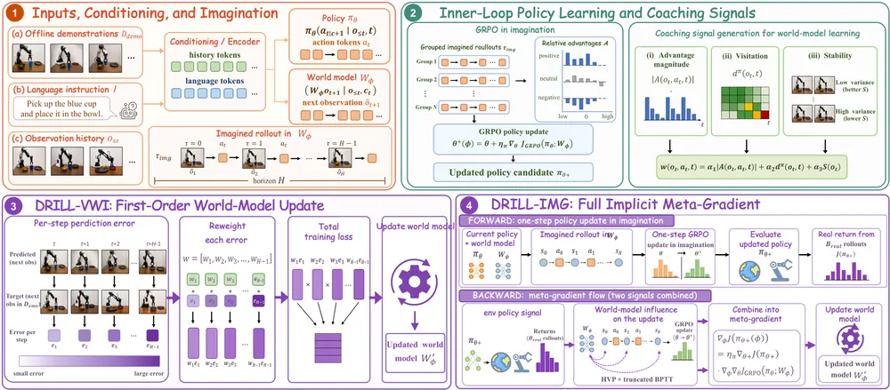
무슨 문제인가
VLA policy를 reinforcement learning으로 post-training할 때 실제 로봇이나 simulator와의 상호작용을 world model이 만든 상상 rollout으로 대체하는 방법이 늘고 있음. 하지만 이 world model은 대부분 다음 frame의 pixel을 한 step 앞서 맞추는 목적으로만 학습됨. pixel MSE는 배경이나 task와 무관한 영역까지 균일하게 벌점을 주는 반면, policy gradient update는 현재 policy가 실제로 방문하는 상태와 advantage가 큰 action만 중요하게 다룸. 그 결과 pixel을 잘 맞추는 world model이 오히려 policy 학습에는 나쁜 신호를 줄 수 있고, 저자들은 pixel MSE가 17% 더 높은 world model이 더 나은 policy를 만드는 사례를 실제로 보임.
어떻게 푸나
DRILL(Downstream-Return Imagination Learning Loop)은 world model을 pixel fitting이 아니라 downstream return으로 학습시키는 bilevel framework임. 이 return은 policy가 상상 속에서 학습한 뒤 실제 환경에서 얻는 성과임. inner loop는 현재 world model 안에서 policy에 GRPO(Group Relative Policy Optimization) 업데이트 한 step을 적용해 새 policy 후보를 만듦. outer loop는 이 업데이트된 policy를 실제 target 환경에서 평가해 그 return을 world model 쪽으로 되돌려 보냄. DRILL-VWI(Visitation-Weighted Imagination)는 추가 simulator rollout 없이 pixel error를 다시 가중치를 매겨 world model을 업데이트하는 closed-form surrogate임. 가중치는 policy가 상상 속에서 방문한 상태 빈도, GRPO advantage 부호, world model 확신도 세 가지로 정함. DRILL-IMG(Implicit Meta-Gradient)는 inner GRPO update를 직접 미분해 meta-gradient를 구함. 미분은 K-step truncated BPTT(backpropagation through time)와 Hessian-vector product로 계산함. 이때 실제 target simulator에서 뽑은 적은 수의 rollout(기본 30개)으로 outer gradient를 보정함. 두 방법은 이론적으로 연결되는데, DRILL-VWI는 score-compatibility와 작은 residual 가정 아래 DRILL-IMG meta-gradient의 1차 근사임을 증명함.
결과
- π0-3B 기준 LIBERO-Long(시뮬레이션 조작 과제 모음)·CALVIN·RoboCasa·Meta-World MT50·SimplerEnv 5개 benchmark에서 평가함. baseline은 WMPO(pixel 예측으로 world model을 학습하는 선행 방법)와 RLVR-World(world model에 verifiable reward 기반 RL을 적용한 선행 방법)임. 평균 성공률이 WMPO 대비 DRILL-IMG가 13.1퍼센트포인트, RLVR-World 대비 7.9퍼센트포인트 높음. 이때 next-frame pixel MSE는 WMPO보다 17% 높음(같은 학습 데이터 기준).
- LIBERO-Long에서 성공률이 WMPO 64.2%, DRILL-VWI 76.1%, DRILL-IMG 81.3%로 오르고, RLVR-World로 미리 학습한 world model에 DRILL-IMG를 더하면 83.9%까지 오름.
- pixel MSE gradient와 policy 개선 방향의 각도 차이를 재는 지표 PUR(Policy-Utility Residual)는 낮을수록 downstream 성공률이 높아, headline 결과 전반에서 Spearman 상관 -0.89를 보임.
- rollout horizon이 길어질수록 DRILL-IMG가 DRILL-VWI를 앞서는 폭이 커짐(H=20에서 1.8퍼센트포인트, H=100에서 7.5퍼센트포인트). horizon이 짧은 SimplerEnv에서는 두 방법이 통계적으로 동률(64.0% 대 63.1%).
한계
실험이 모두 simulation에서만 이뤄졌고 실제 로봇 결과는 없음. DRILL-IMG는 outer gradient 계산에 target simulator rollout(step당 30개)을 여전히 필요로 해 완전한 offline 방법은 아님. truncated BPTT와 Hessian-vector product 때문에 계산·메모리 비용도 WMPO보다 큼.
누리랩 연구와의 연결
- world model을 pixel 예측이 아니라 policy gradient 품질을 직접 최적화 대상으로 삼는 formulation이라 test-time optimization·RL 기반 VLA post-training 연구와 바로 연결됨.
- PUR 진단 지표는 world model이 policy 학습에 실제로 도움이 되는지 pixel 지표 없이 재는 방법이라 failure detection·world model 신뢰도 평가에 참고할 수 있음.
2
80점
Memory before Goal: Role of Pre-History Memory for Humanoid Loco-Manipulation
VLA
relevance 9/10
RA-L 투고
Robotics (cs.RO)
휴머노이드 whole-body VLA에 사라진 물체 사건을 기억하는 object-guided perceptual memory를 붙임. 실제 Unitree G1 로봇 과제에서 base policy 성공률을 36.7%에서 88.3%로 올림.
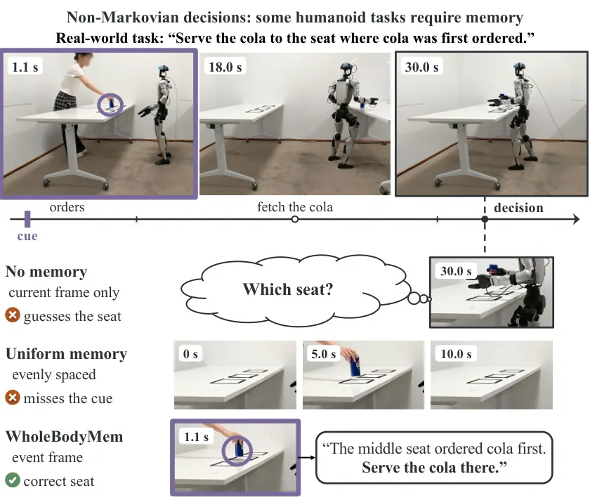
무슨 문제인가
whole-body VLA 정책은 현재 관측과 짧은 proprioceptive history만 보고 행동을 정함. 동적 장면에서 물체가 상태를 바꾸거나 가려지거나, 로봇이 돌아서면서 물체가 head camera 시야 밖으로 나가면 과거 사건을 기억해야 올바르게 행동할 수 있음. 예를 들어 콜라가 처음 멈춘 좌석을 기억해야 나중에 그 자리로 서빙할 수 있는데, 현재 관측만 보는 정책은 돌아왔을 때 세 좌석이 똑같아 보여 답을 추론하지 못함. 기존 memory 기법은 주로 tabletop arm 대상으로 긴 프레임 기록을 쌓거나 압축하거나 균등 간격으로 샘플링하는데, 이러면 비용이 늘거나 짧게 지나간 사건을 놓치거나 디테일을 잃음.
어떻게 푸나
WholeBodyMem은 frozen SAM3로 과제 물체를 추적해 등장·소멸·이동(화면 대각선의 3% 이상 이동)·형태 변화 같은 object event를 찾고, 카메라 자체의 움직임은 배경 특징으로 보정함. 이 event들을 causal selection 알고리즘이 매 시점 최대 7프레임(현재+과거 6)의 adaptive budget 안에서 기억할 key frame으로 고름. 선택된 프레임은 frozen backbone의 native token과, appearance·geometry·시간 정보를 인코딩한 최대 14개 object token으로 저장됨. action expert가 각 DiT block에서 cross-attention과 FiLM으로 이를 읽어 action token을 조절함. decision head는 memory와 object token에 attention해 cue가 가리키는 위치(물체를 놓거나 신호를 표시하는 바닥 표시인 pad, problem의 좌석에 해당)를 예측함. 그 softmax weight가 adaptive layer norm에 들어가 가시적인 pad token도 함께 조절함. Qwen3-VL-2B backbone은 고정하고 memory 모듈만 새로 학습함.
결과
- 6개 memory-dependent task(HuMeGo)에서 memory-decision accuracy가 WholeBodyMem 93.7%, Ψ0(메모리 없음) 39%, 균등 샘플링 Uniform memory 50%임. 성공률은 72.6%로, Ψ0의 29.1%와 Uniform memory의 44.4%보다 높음.
- cue memory가 필요 없는 SIMPLE(memory 없이도 풀 수 있는 표준 whole-body 조작 과제 14개)에서도 WholeBodyMem이 86.9% 성공률로 Ψ0의 70.2%, Uniform memory의 76.9%보다 높음.
- ablation에서 Uniform memory 대비 28.2퍼센트포인트 향상 중 key frame 선택이 16.0, object token이 5.3, decision head가 4.7, adaptive memory가 2.2퍼센트포인트를 기여함.
- 실제 Unitree G1 로봇 6개 과제(과제당 10회 시행)에서 WholeBodyMem 성공률 88.3%(53/60)로 Ψ0의 36.7%(22/60)보다 높음.
한계
SAM3가 추적하지 못하는 물체는 애초에 기억되지 못함. online tracking이 inference 비용을 늘리고, 시뮬레이션 렌더링 때문에 sim-to-real gap이 남음. 시뮬레이션 데모는 scripted whole-body expert로 생성돼 사람 teleoperation과 다를 수 있음.
누리랩 연구와의 연결
- robot memory를 object-centric event 기반으로 선택하는 설계라 VLA에 memory 모듈을 붙이는 연구와 직접 비교 대상이 됨.
- 사라진 물체의 사건을 기억해 행동을 바꾸는 non-Markovian 문제 정의와 memory-decision accuracy 분리 평가는 failure detection·recovery에서 과거 사건을 참조하는 설계에도 적용 가능함.
3
78점
UniFlowWAM: A Unified World-Action Model with Visual Semantics and 4D Geometry
World Model
relevance 9/10
ICLR 양식 (추정)
Robotics (cs.RO)
3D scene flow를 vision·action과 동등한 세 번째 modality로 넣어 policy·forward/inverse dynamics를 하나의 diffusion transformer로 통합함. 실로봇 양팔 조작 평균 성공률을 가장 강한 baseline π0.5의 68.5%에서 87.0%로 올림.
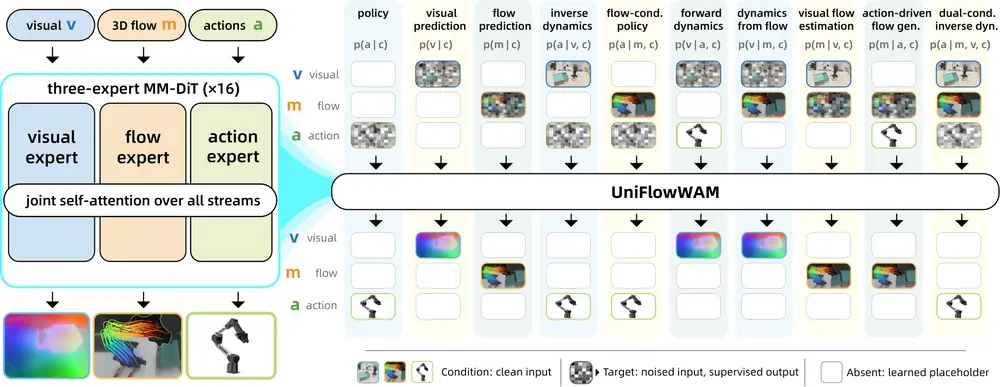
무슨 문제인가
로봇 demonstration은 로봇이 무엇을 보고 무엇을 했는지만 기록하고, 그 사이 3D 장면이 어떻게 변했는지는 남기지 않음. 미래 영상이나 영상 특징을 행동과 함께 예측하는 기존 world-action model은 미래 상태의 semantic은 담아도 장면이 3D에서 어떻게 움직였는지는 명시하지 않음. scene-level 3D flow를 쓴 선행연구도 있지만, flow는 action으로 변환하는 별도 모델이거나 inference 시점에 주입하는 prior이거나 추가 prediction head로 정책 바깥에 머무름. 저자들은 pretrained visual-action model이 3D flow를 명시적으로 배우면 예측하는 행동 자체가 좋아지는지를 질문으로 세움.
어떻게 푸나
UniFlowWAM은 vision·3D flow·action을 각각 전담하는 expert를 둔 three-expert diffusion transformer(MM-DiT)이고, 세 expert는 joint self-attention으로만 정보를 교환함. 3D flow는 monocular 3D tracker(Track4World)로 오프라인 추출한 point map과 displacement를 frozen 4D VAE(MotionCrafter)로 인코딩한 latent로 표현함. 학습은 policy, forward/inverse dynamics, visual/flow prediction을 포함한 10개 role-conditioned objective로 이뤄짐. 매 objective마다 세 modality 각각이 target(노이즈 입력)·condition(clean 입력)·absent(학습된 placeholder) 중 하나의 역할을 맡음. pretrained LDA-1B checkpoint에서 vision·action expert를 초기화하고 flow expert는 처음부터 학습하는 mid-training을 거침. LDA-1B는 pixel이 아니라 pretrained visual encoder의 feature를 예측하도록 학습된 선행 vision-action backbone으로, 통계학의 LDA와는 무관함. 그 뒤 각 downstream domain의 demonstration으로 post-training함. 배포 시에는 direct policy objective를 쓰므로 flow 추출이나 인코딩 없이 동작함.
결과
- RoboCasa-GR1(24개 tabletop 과제)에서 mid-training을 포함한 UniFlowWAM이 released LDA-1B 52.11%에서 56.38%로 평균 성공률을 4.27퍼센트포인트 올림. baseline이 약한 과제 10개에서는 평균 6.47퍼센트포인트 오름.
- LIBERO-Plus(LIBERO를 7축으로 교란한 zero-shot 평가)에서 UniFlowWAM이 87.7% 성공률로 두 번째로 강한 baseline π0.5의 84.7%보다 높음. camera perturbation 항목에서는 96.9% 대 76.6%로 격차가 가장 큼.
- ALOHA 실로봇 bimanual 과제 4개(과제당 50회)에서 UniFlowWAM 평균 성공률 87.0%로 π0.5 68.5%, DreamZero 30.0%, LDA 15.5%보다 높음.
- objective ablation에서 10개 objective를 다 쓰는 full grid가 policy-only 학습보다 실로봇 모든 과제에서 성공률이 높음. 격차는 12~18퍼센트포인트로 chili transfer 94% 대 76%, pen manipulation 90% 대 76%, towel folding 84% 대 72%임.
한계
3D flow label은 Track4World로 뽑은 pseudo-label이라 궤적 중간에 flow 방향이 뒤집히는 등 시간적으로 일관되지 않은 구간이 섞일 수 있음(SAM 기반 foreground 분리로 일부 완화). flow mid-training 데이터는 약 1,200시간 분량으로 LDA 원 pretraining 규모보다 훨씬 작아 flow expert가 충분히 사전학습되지 않았다고 저자들이 밝힘.
누리랩 연구와의 연결
- 3D flow를 world model의 co-equal modality로 넣어 policy·forward/inverse dynamics를 한 모델로 통합한 설계라 object-centric 4D representation 연구와 직접 연결됨.
- ten-objective role grid는 같은 backbone으로 여러 역할(정책, dynamics, prediction)을 학습시키는 방식임. test-time에 쓸 보조 objective나 counterfactual reasoning용 forward/inverse dynamics 설계에도 참고가 됨.
4
76점
Self-Distilling Future Video Representations for World Action Models
World Model
relevance 9/10
Robotics (cs.RO)
World Action Model(WAM)이 noise에서 denoising 한 step만에 뽑는 future video representation을 self-distillation으로 개선함. 실로봇 조작에서 long-horizon task 성공률을 61.7%에서 81.7%로, 사람 영상만으로 배운 task 성공률을 19.4%에서 50.0%로 올림.
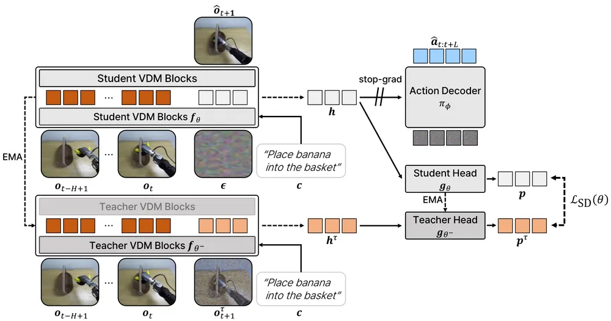
무슨 문제인가
World Action Model(WAM)은 pretrained video diffusion model이 가진 공간·시간 사전지식을 이용해 generalist robot policy를 학습하는 방법임. 최근 WAM은 추론 속도를 위해 영상을 끝까지 denoising하지 않고, 단 한 번의 denoising step에서 뽑은 중간 hidden state를 action decoder에 그대로 넣음. 이 설계에서는 action 예측 품질이 전적으로 이 한 step짜리 future representation의 질에 달려 있음. 저자들은 이 representation이 학습이 진행될수록 미래 robot motion 정보를 담게 되지만, 실제 미래 관측에서 뽑은 representation과는 여전히 차이가 크다는 점을 probing 실험으로 확인함.
어떻게 푸나
FRED(Future REpresentation learning via self-Distillation with temporal context)는 WAM 학습 방법임. noise에서 한 번 denoising해 뽑은 future video representation을 self-distillation으로 개선함. student network는 현재 관측과 language instruction을 조건으로 noise에서 representation을 뽑음. momentum teacher(student의 EMA 복사본)는 실제 미래 관측에 noise를 섞은 입력에서 같은 layer의 representation을 뽑아 target으로 씀. 두 representation을 각각 student·teacher projection head에 통과시켜 분포로 만든 뒤 KL divergence로 student가 teacher를 따라가게 학습함. 추가로 현재 frame 하나가 아니라 과거 여러 frame의 history를 video diffusion model에 조건으로 넣어 시간적 맥락을 보강함. 이렇게 학습된 representation은 action decoder가 그대로 조건으로 받아 action을 생성하는데, action loss의 gradient는 video diffusion backbone으로 되돌리지 않고 stop-gradient로 막음.
결과
- DROID(대규모 실로봇 조작 데이터셋)로 학습해 새 환경에서 zero-shot 평가함. 14B 규모에서 long-horizon task 성공률이 가장 강한 baseline DreamZero의 61.7%에서 FRED 81.7%로, out-of-domain task 성공률이 10.4%에서 52.1%로 오름.
- 사람 영상만으로 시연되고 로봇 학습 데이터에는 없는 task에서 human video를 함께 co-training함. task 성공률이 가장 강한 baseline의 19.4%에서 FRED 50.0%로 오르고 instruction-following 비율은 97.2%에 이름.
- RoboCasa Kitchen(시뮬레이션 주방 조작 과제 모음)에서 self-distillation과 history conditioning을 각각 빼면 성공률이 68.8%에서 65.1%, 64.8%로 내려가 두 구성요소 모두 기여함을 보임.
- noise 한 step에서 뽑은 future representation의 품질과 task 성공률 사이 상관계수는 0.89임. one-step video 생성 품질과의 상관(0.24)이나 깨끗한 미래 관측에서 뽑은 representation 품질과의 상관(0.49)보다 훨씬 강함.
한계
실험은 DROID 기반 Franka 환경과 OpenArm humanoid 두 플랫폼에서만 이뤄졌고, 더 다양한 로봇 embodiment에서의 일반화는 확인되지 않음. teacher noise level·feature extraction layer 같은 설계 선택에 대한 ablation은 RoboCasa Kitchen 한 benchmark에서만 이뤄짐.
누리랩 연구와의 연결
- world model인 video diffusion model을 pixel 생성기가 아니라 future representation generator로 재해석하는 관점임. 그 representation 자체를 학습 목표로 삼는 설계라 world model 표현학습과 VLA 설계를 연결하는 연구에 바로 참고할 수 있음.
- human video만으로 시연된 task를 50.0% 성공률로 전이시킨 결과는 demonstration 부족 상황에서의 로봇 학습·robot memory 연구에 구체적 비교 대상이 됨.
5
76점
Sensorimotor Alignment: A Platonic Proxy for Embodied Policy Success
Embodied AI
relevance 9/10
Computer Vision and Pattern Recognition (cs.CV)
VLA·VLM·world action model(WAM)의 sensory representation이 실제 motion trajectory 구조와 얼마나 가까운지 재는 학습 없는 offline metric Sensorimotor Alignment(S²)를 제안함. 12개 VLA에서 S²와 SimplerEnv(시뮬레이션에서 실로봇 policy 성공률을 재현해 평가하는 벤치마크) 성공률의 상관계수가 +0.717로, closed-loop 평가 없이 모델을 먼저 거를 수 있음을 보임.
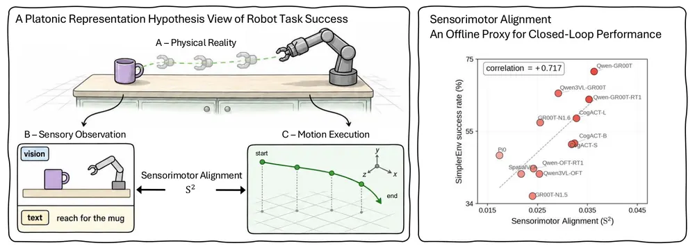
무슨 문제인가
로봇 foundation model은 보통 비용이 큰 closed-loop rollout으로만 평가되기 때문에 값싼 offline proxy가 필요함. 기존 proxy는 VLM의 VQA 점수나 world model의 pixel-level video quality처럼 수동적 지각이나 생성 품질만 재서, representation이 action을 위해 조직돼 있는지는 측정하지 못함. 두 장면이 시각적으로 달라도 비슷한 로봇 동작을 요구하거나, 시각적으로 비슷해도 다른 trajectory를 요구할 수 있어 task 성공에는 visual representation과 motor representation의 정렬이 필요함. 이 논문은 Platonic Representation Hypothesis(PRH: 서로 다른 modality의 representation이 모델 성능이 오를수록 같은 통계적 실재 모델로 수렴한다는 가설)를 로봇 motion trajectory에 적용함. 더 유능한 embodied model일수록 sensory representation이 motor representation 구조에 더 가까이 정렬되는지 검증함.
어떻게 푸나
Sensorimotor Alignment(S²)는 DROID나 BridgeDataV2 같은 reference dataset에서 episode를 N개 뽑음. 각 episode의 image frame과 task instruction을 모델의 vision·text encoder로 인코딩해 sensory representation을 만듦. 같은 시점부터 h step 동안의 end-effector position·orientation·gripper state는 DTW(Dynamic Time Warping)로 비교 가능한 motor representation으로 만듦. 각 episode마다 sensory 공간의 k-최근접 이웃 집합과 motor 공간의 k-최근접 이웃 집합을 구함. 두 집합의 교집합 크기를 k로 나눈 값을 전체 episode에 대해 평균 낸 값이 S²임. 이 값이 클수록 sensory representation이 비슷한 episode들끼리 motor trajectory도 비슷하다는 뜻임. S²는 추가 학습 없이 계산됨. VLA·raw VLM·WAM·실로봇 policy 네 종류 모델군에 그대로 적용해 각 모델의 SimplerEnv·RoboTwin(조작 과제로 구성된 로봇 시뮬레이션 벤치마크) 성공률이나 실로봇 성공률과의 상관관계를 봄.
결과
- 12개 VLA에서 S²와 SimplerEnv 성공률의 Pearson 상관계수는 +0.717(p=0.004, bootstrap 95% CI [+0.436, +0.912])임.
- VLA로 fine-tuning하기 전 raw VLM 8개에서도 S²는 fine-tuning 후 성공률과 +0.681(p=0.031) 상관을 보임. 같은 VLM의 평균 VQA 점수는 -0.154로 상관이 없음.
- WAM 3개에서 S²는 RoboTwin 성공률과 +0.999 상관인 반면, 표준 video quality 지표인 SSIM은 +0.558, PSNR은 +0.468, FID는 방향이 거꾸로인 +0.680에 그침.
- 실로봇 policy 5개(MolmoB0T 기준 40개 task)에서도 S²는 실제 성공률과 +0.831(p=0.041) 상관을 보임. embodiment가 다른 reference dataset(단일팔 DROID를 양팔 WAM에 적용)으로 바꾸면 상관이 +0.999에서 +0.246으로 낮아져, metric이 실제로 embodiment 구조에 반응함을 확인함.
- fine-tuned VLA 12개에서 vision feature만의 S²는 SimplerEnv 성공률과 +0.694 상관이고 vision·text를 합친 S²의 +0.699와 거의 같은 반면, text feature만의 S²는 상관이 +0.237로 통계적으로 의미 없음.
한계
S²와 성공률의 관계는 상관관계이고, S²를 학습 중 목적함수로 직접 써서 성공률을 올리는 실험은 하지 않음. 같은 S² 값을 가진 모델도 성공률이 다를 수 있어 S²는 costly fine-tuning이나 closed-loop 평가 전에 유망한 모델을 거르는 용도로만 써야 함. 모델군·벤치마크·학습 레시피의 범위가 제한적이고, 비교에 쓰인 모델 수가 군마다 적으며, 실로봇 설정은 한 군데뿐임.
누리랩 연구와의 연결
- VLM backbone을 VLA로 fine-tuning하기 전에 S²로 먼저 걸러낼 수 있다는 결과는, 새 VLA를 설계할 때 backbone 선택과 학습 자원 배분에 바로 쓸 수 있음.
- fine-tuned VLA가 vision feature의 S²에만 의존하고 text feature S²와는 상관이 없다는 결과임. VLA가 언어 instruction을 무시하고 시각 정보로만 행동하는 instruction grounding 실패를 representation 수준에서 설명하는 진단 도구로 쓸 수 있음.
6
75점
DeXplicit: Making Physical State Explicit in Dexterous Manipulation World Models
World Model
relevance 9/10
Computer Vision and Pattern Recognition (cs.CV)
dexterous manipulation world model이 손 동작이 만들 결과를 video pixel이 아니라 명시적 metric 3D object motion으로 먼저 예측하고 이를 video rendering의 조건으로 씀. HOT3D·OakInk2·PhysTwin 세 데이터셋에서 PointWorld 대비 long-horizon moved-point error를 27~40% 줄임.
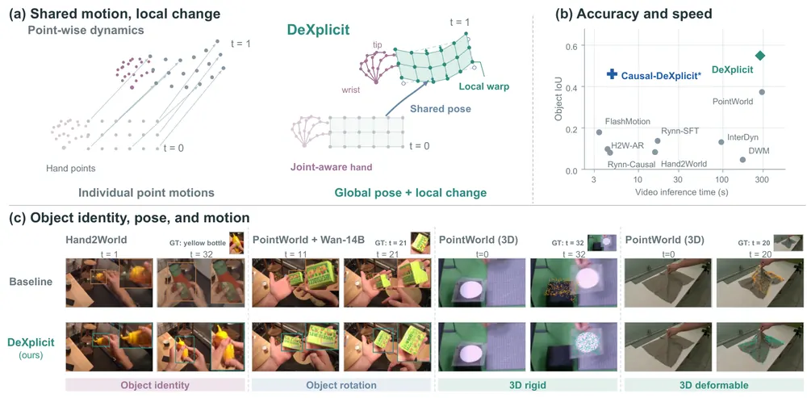
무슨 문제인가
dexterous manipulation용 world model은 대부분 action-conditioned dynamics·camera motion·visual synthesis를 하나의 video generation model 안에 뒤섞어 학습함. 이런 구조에서는 영상이 그럴듯해 보여도 object가 실제로 올바른 3D 위치로 움직였는지, hand-object 접촉 관계가 유지됐는지는 보장되지 않음. PointWorld 같은 선행 연구는 object motion을 point trajectory로 명시적으로 표현함. 하지만 이 점들은 hand joint 사이의 kinematic 구조나 object 전체가 공유하는 coherent한 motion 구조를 따로 인코딩하지 않음. 그 결과 hand와 object 사이의 관계가 암묵적으로만 남아, object geometry가 interaction 도중 뒤틀리거나 drift할 수 있음.
어떻게 푸나
DeXplicit는 손 동작이 만들 결과를 영상이 아니라 명시적 metric 3D 상태로 먼저 예측한 뒤 그 결과를 영상으로 렌더링하는 dexterous manipulation world model임. 입력은 초기 장면의 metric 3D 점들과 미래 hand trajectory이고, 먼저 hand joint마다 wrist 기준 위치·직전 step 대비 변위·뼈대(bone) 벡터를 인코딩하는 joint-aware action encoding을 만듦. 이 action feature에 object point feature가 attention으로 결합됨. object별로 pooling해 만든 object token은 공통 global rotation·translation(강체 이동)과 object 표면에 놓인 control node들의 local rotation·translation(관절·변형)으로 나뉘어 예측됨. 이렇게 예측된 3D 점들은 초기 image feature를 projection으로 옮겨 붙이는 appearance transport를 만듦. 여기에 점별 confidence를 투영해 만든 soft mask를 더해 video diffusion renderer(Wan 영상 diffusion 모델에 VACE로 조건을 주입한 구성)를 조건화함. renderer는 이 조건 덕분에 object dynamics를 새로 배우지 않고 불확실하거나 새로 보이는 영역만 채우면 됨. 이 분해 덕분에 block당 2 denoising step만으로 causal하게 영상을 생성할 수 있음.
결과
- HOT3D·OakInk2·PhysTwin(각각 rigid·articulated·deformable hand-object interaction 데이터셋) 세 곳에서 평가함. DeXplicit의 long-horizon moved-point error가 PointWorld 대비 27~40% 낮음. 데이터셋별 감소폭은 HOT3D 39.9%, OakInk2 28.0%, PhysTwin 27.1%임.
- 같은 renderer를 공유한 상태에서 PointWorld 예측을 DeXplicit 예측으로 바꾸면 HOT3D의 object fidelity IoU+가 0.373에서 0.549로 오름. IoU+는 object mask가 겹치는 정도를 재고 예측이 빠지면 0점을 주는 엄격한 지표임.
- 2-step causal 생성(Causal-DeXplicit)은 14B bidirectional 구성 대비 57배 빠르며, 32 frame 전체를 A800 GPU 한 장에서 4.90초에 생성함.
- dynamics ablation에서 structured object transport를 추가하면 moved-point error가 59.8mm에서 51.1mm로 줄어 세 구성요소 중 가장 큰 기여를 보임.
한계
평가가 HOT3D·OakInk2·PhysTwin 세 데이터셋에 국한되고 실제 robot policy 성공률로는 검증하지 않음. 저자도 Ethics Statement에서 이 평가가 safety-critical한 실제 로봇 제어에 바로 쓰일 수준임을 보장하지 않는다고 밝힘.
누리랩 연구와의 연결
- world model의 dynamics를 pixel이 아니라 명시적 object-centric 3D 표현으로 분리해 예측하는 구조임. object-centric 3D·4D representation과 3D Gaussian Splatting 계열 world model 연구와 직접 비교할 수 있음.
- dexterous manipulation에서 hand-object 접촉·변형을 구조화해 다루는 방식이라, failure detection이나 contact 기반 recovery 연구에 참고할 설계임.
7
75점
Inside-JEPA: From Prediction to Relational Grounding in Latent World Models
World Model
relevance 7/10
Machine Learning (cs.LG)
JEPA 기반 world model의 latent state 안에 entity 쌍마다 관계를 담는 relational channel을 넣고, inverse-dynamics loss로 관계 label 없이 이 channel을 의미 있게 만듦. Something-Something V2에서 latent prediction만으로는 relational AUROC가 random relation head 수준에 그치지만, inverse-dynamics loss를 더하면 .065~.103 오름.
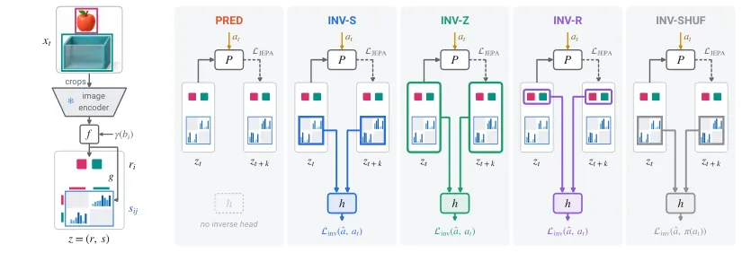
무슨 문제인가
JEPA(joint-embedding predictive architecture)는 latent 공간에서 미래를 예측해 효율적으로 planning할 수 있지만, 그 latent state는 사람이 읽을 수 없는 불투명한 벡터임. probe를 학습시키면 컵이 그릇 안에 있는지 같은 관계를 latent에서 읽어낼 수는 있지만, state 안 어떤 부분도 그 관계를 표현하도록 고정돼 있지 않음. 그래서 goal이나 모델이 믿는 바를 관계 언어로 명시할 수 없음. latent prediction loss만으로 relational channel을 집어넣어도, static한 코드나 의미 없이 바뀌는 코드로도 그 loss를 만족시킬 수 있어 channel이 실제로 관계를 뜻한다는 보장이 없음.
어떻게 푸나
Inside-JEPA는 JEPA의 latent state에 entity마다 latent 벡터 하나와, 순서가 있는 entity 쌍마다 relational channel 벡터(0~1 범위의 soft symbol) 하나를 추가함. 입력은 두 시점의 frame과 그 사이 entity box, 그 사이 실행된 action임. frozen ResNet-18 encoder가 각 entity crop을 encoding하고, relation head가 모든 순서쌍에 대해 relational channel을 출력함. state는 기존처럼 target encoder를 예측하는 JEPA loss로 학습되는 동시에, inverse-dynamics head가 두 시점의 relational channel만 보고 action을 복원하도록 하는 loss가 더해짐. relation label은 전혀 쓰지 않음. 무엇이 grounding을 만드는지 가르기 위해 다섯 arm을 비교함. inverse head가 relational channel만 읽는 INV-S(Inside-JEPA 본체), 전체 latent를 읽는 INV-Z, entity latent만 읽는 INV-R이 있음. 여기에 action label을 섞은 INV-SHUF, inverse head가 없는 PRED를 더해 다섯 arm이고, architecture·데이터·학습 budget은 모두 똑같이 맞춤. 평가는 relational channel 하나를 relation 하나에 Hungarian matching으로 매칭한 뒤 AUROC를 재는 matched relational AUROC이고, 무작위 초기화된 relation head와도 비교해 margin을 따로 봄.
결과
- Something-Something V2(사람이 물체를 조작하는 영상에 동작 template label을 단 데이터셋)의 Something-Else split에서 PRED는 random relation head와 같은 .536 matched AUROC에 그침. Something-Else는 annotated box를 추가하고 40개 template·5개 relation으로 처음 평가한 real-video 분할임. INV-S는 .634로 올라 gain이 .097임.
- annotated box가 있는 열 가지 설정 전체에서 INV-S의 gain은 +.065~+.103임. RH20T(여러 작업의 로봇 조작 영상을 모은 데이터셋) robot episode에서는 +.081, 탐지·추적만으로 얻은 object에서는 +.050~+.061로 18개 설정 모두 양의 gain을 보임.
- action label을 섞은 INV-SHUF는 PRED보다 낮고(.539), entity latent만 읽는 INV-R은 action을 가장 잘 복원하면서도(top-1 .424) channel grounding은 거의 늘지 않음(.608 대 PRED .593). channel을 직접 읽는 inverse head와 정확한 action label 둘 다 있어야 grounding이 됨.
- action이 주어졌을 때 예측된 relational channel 변화는 관측된 미래 관계와 거의 같은 수준으로 맞음(AUROC .599 대 .621). one-step relational goal에 대한 action 선택에서 16개 channel의 지도 학습 readout은 65개 중 top-5 정확도 43%로, prediction-only latent의 24%와 frequency prior의 17%보다 높음.
한계
검증은 PRED라는 단일 baseline과 고정 architecture 안에서만 이뤄졌고, 다른 relational·inverse-dynamics 방법과는 비교하지 않음. 데이터는 annotated box가 있는 사람 영상 하나와 로봇 영상 하나뿐이고, RH20T에서는 자동 탐지 box가 40개 중 18개만 맞아 로봇 결과는 사람이 지정한 box에 의존함. left_of처럼 전혀 grounding되지 않는 관계가 있고, 실험은 약 4초 내 클립과 one-step action selection으로 범위가 제한됨.
누리랩 연구와의 연결
- JEPA 기반 world model 내부 latent를 구조화해서 goal을 relation 언어로 명시 가능하게 만든 방법임. object-centric 3D/4D representation과 scene graph/semantic mapping 연구에서 world model 내부 표현을 관계 단위로 설계할 때 바로 참고할 수 있음.
- inverse-dynamics loss가 world model latent를 control에 쓸모 있게 만든다는 결과임. test-time optimization이나 counterfactual reasoning에서 world model 내부 상태를 어떻게 지도해야 하는지에 대한 근거로 쓸 수 있음.
8
74점
Echo: Coupled Action and Task Status Signal Denoising for Vision Language Action Models
VLA
relevance 9/10
Robotics (cs.RO)
action chunk에 stop·failure 신호 두 차원을 추가해 action과 함께 denoising하는 VLA 프레임워크 Echo를 제안함. 5개 실로봇 조작 과제 모두에서 action-only π0.5보다 task completion score가 오름(Insert Flower 5.67점에서 8.33점).
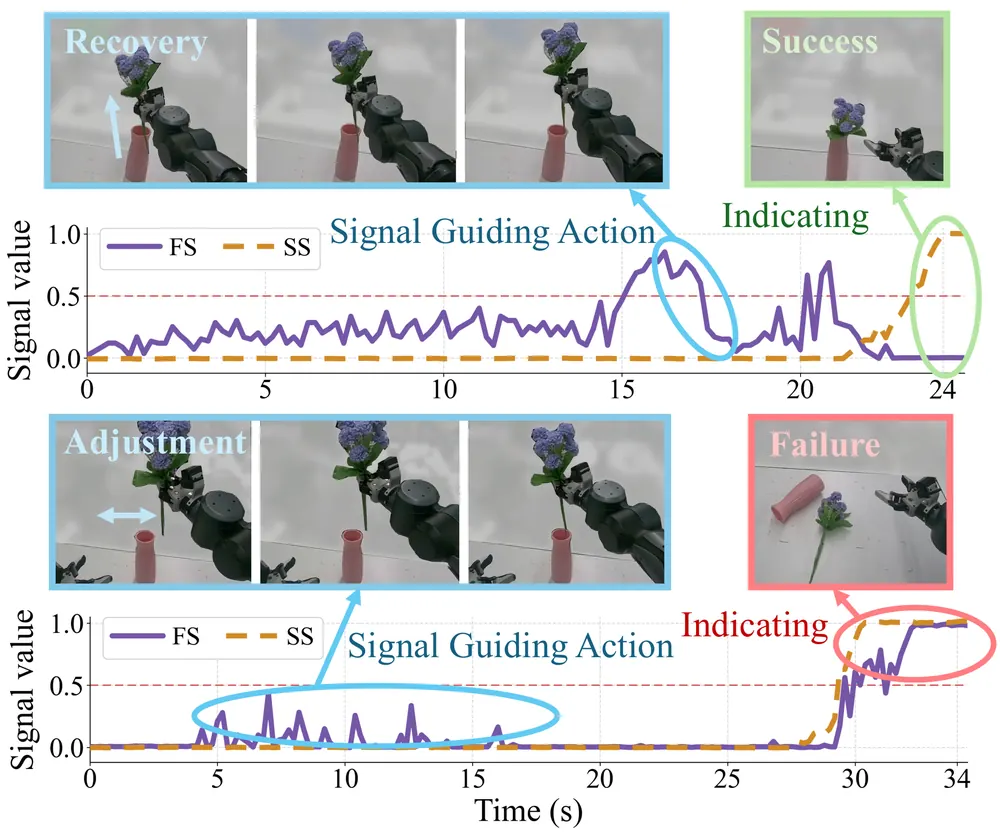
무슨 문제인가
task 완료·실패를 인식해야 성공 시 멈추고 실패 시 복구나 재계획을 시작할 수 있음. 기존 방법은 task status 신호를 VLA에 붙이려면 frame 단위 progress annotation, 외부 monitoring model, 복잡한 구조 설계 중 하나가 필요함. 또 예측된 status 신호를 monitoring에만 쓰고 action 생성 자체를 guide하는 데는 거의 쓰지 않음.
어떻게 푸나
Echo는 stop signal(SS)과 failure signal(FS) 두 신호를 action chunk의 추가 차원으로 붙여 robot action과 함께 flow matching으로 denoising함. SS는 실행 종료 여부, FS는 실패 상태 여부를 나타내고 둘의 조합으로 진행 중·성공·실패를 구분함. frame 단위 progress annotation 없이 학습시키기 위해 성공 teleoperation, 실패 rollout, 개입 직전 실패 구간, 복구 시연 네 종류 데이터를 모으고 각 데이터 유형의 경계·위치에서 SS·FS target을 자동으로 만듦. 실패 데이터의 action은 imitation에서 제외함. action은 signal에, signal은 action에 서로 attention하게 하되 SS와 FS 사이 직접 attention은 막음. signal을 action보다 먼저 denoising이 끝나게 하는 asynchronous denoising을 적용해 이후 action denoising step이 더 깨끗한 status 추정치를 참고하게 함.
결과
- Insert Flower task completion score(0~10점, 30회 평가)가 action-only π0.5 5.67점에서 Echo 8.33점으로 오름.
- 5개 실로봇 과제(Insert Flower, Capsule Toy, Insert Pen, Make Tanghulu, Open Drawer) 전부에서 Echo가 action-only baseline보다 높은 점수를 기록함.
- Insert Flower에서 stop·progress 예측을 더한 기존 방법 CycleVLA 대비 task completion score가 3.00점에서 8.33점으로, frame-level Macro-F1이 43.10%에서 92.18%로 오름.
- out-of-distribution 조건에서 이득이 더 큼. Insert Flower OOD task score가 π0.5 2.00점에서 Echo 8.00점으로, Open Drawer OOD는 2.40점에서 6.87점으로 오름.
한계
실로봇 평가가 과제 5개, 과제당 30회 trial이고 양팔 휠드 휴머노이드 한 플랫폼에서만 검증됨. SS·FS threshold(0.5)와 15-frame decision window를 고정한 채 평가해 다른 설정에서의 민감도는 보이지 않음. LIBERO-Recovery(실패 복구를 포함한 LIBERO 기반 시뮬레이션 벤치마크)에서는 성공률이 32.67%에서 34.76%로, 실로봇보다 개선 폭이 훨씬 작음.
누리랩 연구와의 연결
- failure detection·recovery 신호를 VLA의 action denoising 과정 안에 직접 결합한 설계라 누리랩의 failure detection·recovery 연구에서 바로 비교할 baseline이 됨.
- frame 단위 progress annotation 없이 성공·실패·복구 trajectory만으로 signal을 학습시키는 방식은 label-efficient robot memory 설계에 참고할 수 있음.
9
74점
Skeleton-Grounded Latent Action Model for Robot World Models
World Model
relevance 8/10
ICLR 양식 (추정)
Robotics (cs.RO)
SkeLAM(Skeleton-Grounded Latent Action Model)은 robot world model의 latent action을 kinematic 성분과 residual 성분으로 나눔. kinematic 성분은 robot skeleton으로 지도해 action conditioning을 구조화함. DROID에서 DreamDojo 대비 end-effector ADE를 19.5%, LPIPS를 11.1% 낮춤.
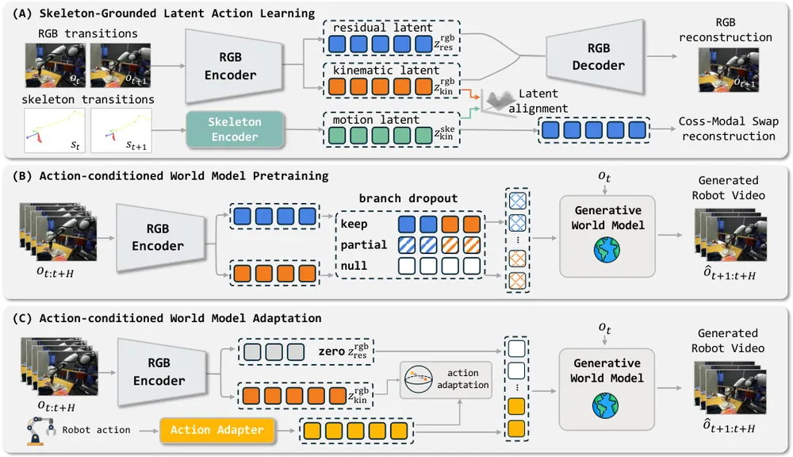
무슨 문제인가
기존 latent action model은 두 관측 o_t, o_{t+1}만으로 reconstruction 목적함수를 써서 proxy action을 학습함. 이 latent action은 robot motion뿐 아니라 object response 등 scene 변화까지 뒤섞여 encode되므로, 로봇 action을 이 latent 공간에 매핑하는 adaptation 단계에서 대응관계가 모호해짐. 같은 end-effector 움직임도 접촉 상태에 따라 다른 object response를 낳기 때문에, scene-dependent 변동이 adaptation target에 섞여 들어감. 이는 action-conditioned world model이 로봇 제어를 따라 정확히 미래를 생성하는 능력을 제한함.
어떻게 푸나
SkeLAM은 RGB 전이와 대응하는 skeleton 이미지를 함께 받아, RGB에서는 kinematic latent·residual latent를, skeleton에서는 motion latent를 encode함. skeleton encoder·decoder를 먼저 학습해 고정하고, 이 frozen decoder로 RGB kinematic latent의 posterior mean에서 다음 skeleton을 복원시켜 robot motion에 접지시킴. 동시에 latent alignment loss로 RGB kinematic latent와 skeleton motion latent를 정렬함. cross-modal swap reconstruction은 RGB kinematic latent를 짝지어진 skeleton motion latent로 바꿔치기해 다음 프레임을 복원시킴. 이때 RGB residual은 그대로 두므로, decoder가 두 modality의 motion conditioning을 호환되게 받아들이게 됨. world model은 kinematic·residual 두 성분을 각각 다른 projection으로 조건받음. 학습 중에는 branch dropout으로 keep·partial·null 조합을 매 clip마다 적용해, 추론 시 residual이 없는 상황에 대비함. 가벼운 MLP action adapter를 robot action에서 kinematic latent로 매핑하도록 학습하고, 이 예측값으로 world model 전체를 다시 fine-tuning함. 추론 시에는 현재 관측과 robot action만으로 residual을 0으로 둔 채 미래 프레임을 생성함.
결과
- DROID(실제 로봇 teleoperation 조작 데이터셋) 400개 clip 평가에서 end-effector ADE가 DreamDojo 대비 19.5%, CD-LAM 대비 23.7% 낮아지고, LPIPS도 각각 11.1%, 17.4% 낮아짐.
- Ctrl-World와 비교하면 ADE가 42.96px에서 41.15px로, LPIPS가 0.4029에서 0.1310으로 낮아짐. 다만 예측한 end-effector 이동 방향의 정확도를 재는 direction F1은 Ctrl-World(0.5888)가 SkeLAM(0.5465)보다 높음.
- skeleton supervision을 빼면 ADE가 41.15에서 64.59로, magnitude correlation이 0.5277에서 0.2009로 낮아져, skeleton grounding이 motion 정확도에 기여함을 보임.
- RoboArena(여러 policy를 같은 조건에서 비교하는 open-loop 평가 플랫폼) 7개 policy·15세션·105 episode 평가에서 policy별 success-rate MAE가 줄음. Cosmos-Predict2.5의 7.62퍼센트포인트에서 SkeLAM의 4.76퍼센트포인트로 낮아짐. balanced accuracy는 48.44%에서 63.02%로 오름.
한계
policy evaluation의 success recall이 33.33%에 그쳐, 성공적인 task outcome 자체를 재현하는 것은 여전히 어려움. 모든 policy 평가가 기록된 action을 replay하는 open-loop 방식이고, closed-loop 평가는 저자들도 future work로 남김. RGB-skeleton 쌍 데이터를 전제로 하므로 skeleton 추정이 어려운 도메인에는 바로 적용하기 어려움.
누리랩 연구와의 연결
- world model의 action conditioning을 robot skeleton으로 명시적으로 분리하는 설계는 누리랩의 object-centric·skeleton 기반 표현 연구에서 바로 비교 대상이 됨.
- open-loop world model rollout이 실제 policy success rate 순위와 어느 정도 일치한다는 결과임. world model을 failure detection·test-time policy evaluation에 쓸 때 근거 자료로 활용할 수 있음.
10
72점
Progress Probes $P^2$: Lightweight Runtime Monitoring for Vision-Language-Action Models
VLA
relevance 9/10
ICRA·IROS·RA-L 계열 양식 (추정)
Robotics (cs.RO)
VLA 내부 activation에 linear probe 하나만 붙여 외부 VLM 없이 task progress를 디코딩하고, 기대 진행도에서 벗어나면 실패로 판단하는 runtime monitor Progress Probe(P2)를 제안함. 실로봇 6개 과제에서 state-level AUROC 0.78을 기록함.
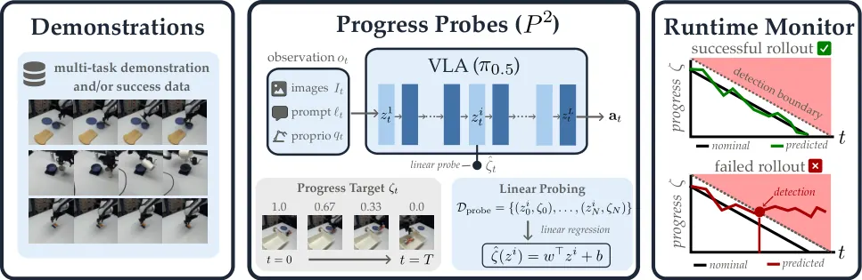
무슨 문제인가
VLA는 다양한 조작 과제를 수행하지만 예측하기 어려운 실패를 겪고, 사람 감독 없이 배포하려면 실행이 궤도를 벗어났는지 감지하는 runtime monitor가 필요함. 기존 monitor는 VLM 같은 외부 foundation model을 써서 policy를 감독하는데, 이는 runtime에 상당한 연산 비용과 복잡도를 더함. VLA 내부 activation 자체가 monitoring에 필요한 정보를 담고 있는지는 따로 검증되지 않았음.
어떻게 푸나
Progress Probe(P2)는 π0.5의 내부 activation에서 정규화된 task progress(남은 시간 비율)를 예측하는 linear probe를 성공 시연 데이터만으로 학습시킴. 각 trajectory의 timestep마다 1에서 0으로 줄어드는 progress label을 자동으로 붙이고, 특정 layer activation에서 scalar progress로 가는 linear regression을 학습함. runtime에서는 현재 추정 progress와 성공 시연들의 평균 길이로 계산한 기대 progress의 차이를 monitor score로 씀. 추정 progress가 기대 진행도보다 뒤처져 score가 threshold를 넘으면 실패로 판단함. probe는 VLA 추론 중 이미 계산되는 activation만 재사용하므로 추가 forward pass가 필요 없음.
결과
- VLABench(언어 지시 기반 조작 과제 시뮬레이션 벤치마크) 6개 과제에서 P2의 episode-level AUROC가 0.909, state-level AUROC가 0.788로, 실패 데이터로 학습한 SAFE-MLP(0.930/0.894)와 비슷한 수준임. 추론 지연은 2.6×10⁻² ms로 SAFE-MLP(1.2×10⁻¹ ms)보다 훨씬 빠름.
- 실로봇 Franka 6개 과제(120회 rollout)에서 state-level AUROC가 0.78로 zero-shot Robometer(progress head)의 0.666보다 높음. fine-tuned Robometer(progress head)의 0.830에는 근접함.
- unseen task 일반화 평가(시뮬레이션 3/3 split 20개 조합)에서 episode AUROC 0.900, state AUROC 0.794로 SAFE-MLP(0.896/0.866)와 비슷한 수준을 유지함.
- VLM backbone인 PaliGemma activation으로 학습한 probe보다 π0.5 activation으로 학습한 probe가 progress 예측 R² 0.83 대 0.69로 높음. failure AUROC도 0.93 대 0.88로 높아, action 학습이 진행도 표현에 기여함을 보임.
한계
π0.5 한 VLA 모델만, 그중에서도 VLM backbone activation만 probing했고 diffusion·flow-matching action expert의 activation은 다루지 않음. Coffee Bean처럼 실패가 확률적이고 시각적으로 미묘한 과제에서는 AUROC가 0.26으로 낮게 나와 모든 실패 유형에 균일하게 작동하지 않음. 실로봇 평가는 6개 과제, 과제당 20회 rollout 규모임.
누리랩 연구와의 연결
- 외부 VLM 없이 VLA 내부 activation만으로 failure를 감지하는 설계라 누리랩의 failure detection·runtime monitoring 연구에 가벼운 baseline으로 바로 쓸 수 있음.
- 실패 데이터 없이 성공 시연만으로 monitor를 학습시키는 방식은 데이터가 부족한 상황에서의 failure detection 연구에 참고할 수 있음.
11
71점
Learning from Next-Frame Prediction: Towards Unified and Scalable Visual Representation Learning
World Model
relevance 6/10
Computer Vision and Pattern Recognition (cs.CV)
과거 프레임들로부터 다음 프레임 전체의 semantic embedding을 예측하는 self-supervised 사전학습 방법 VANE를 제안함. EPIC-KITCHENS-100 action anticipation에서 V-JEPA 2.1보다 mean-class recall@5가 7.1점 높은 45.5를 기록함.
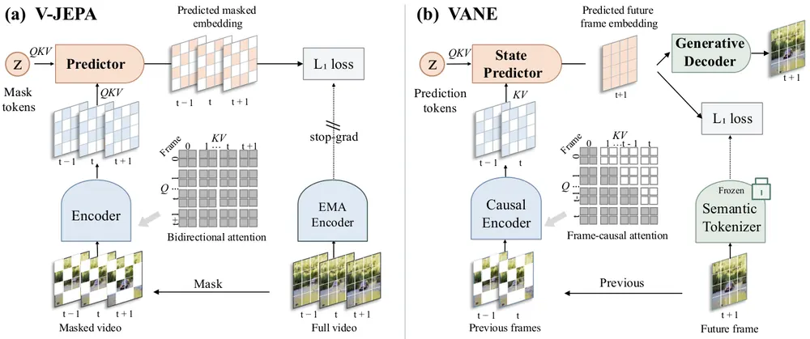
무슨 문제인가
video masked pretraining 방법들은 masked 영역을 주변 context로 복원하는 방식이라 과거로 미래를 예측하는 학습이 아님. autoregressive 방법은 token 단위로 미래를 예측하지만 joint-embedding 방법보다 표현 품질이 낮음. 어느 granularity에서, 어느 space에서 미래를 예측해야 하는지가 정해지지 않은 상태임.
어떻게 푸나
VANE는 과거 frame들을 frame-causal attention으로 인코딩하는 causal encoder와, 이 context로부터 다음 frame 전체의 representation을 추론하는 state predictor로 구성됨. 예측 대상은 pixel이 아니라 고정된 DINOv2 기반 semantic tokenizer가 만든 embedding space임. tokenizer는 학습 중 freeze해 target이 co-adapt하지 않게 함. 예측된 state에 미세한 공간 디테일을 보존하도록 가벼운 generative decoder를 붙여 flow matching으로 patch를 재구성하게 함. 이 reconstruction loss도 encoder까지 역전파함. 정지 영상은 local crop 2개와 global crop 1개로 구성된 순서열로 바꿔 같은 next-frame 예측 objective로 image와 video를 함께 학습시킴.
결과
- EPIC-KITCHENS-100(1초 뒤 행동을 미리 맞히는 action anticipation 벤치마크)에서 action mean-class recall@5가 V-JEPA 2.1 1B 모델의 38.4점에서 45.5점으로 오름. 8B 규모 PlausiVL보다도 17.9점 높음.
- Ego4D STA v2 short-term object-interaction anticipation에서 mAP All이 V-JEPA 2.1의 6.75점에서 7.81점으로 오르고, box AP는 10.6점 오름.
- IN1K·K400·SSv2·Diving-48 4개 global classification 평균 정확도가 V-JEPA 2.1의 83.6%에서 85.4%로 오름.
- ADE20K·Cityscapes semantic segmentation mIoU가 각각 V-JEPA 2.1 대비 3.2점, 3.6점 오르고 NYUv2 depth RMSE는 0.350에서 0.329로 낮아짐.
한계
모든 비교는 같은 1B 규모 V-JEPA 2/2.1과 frozen encoder probing 프로토콜 안에서만 이뤄짐. pretraining에 26.6천+30.7천 GPU-hour가 들어 재현 비용이 큼. action이나 robot policy 학습에는 적용하지 않고 anticipation·recognition·dense perception benchmark에서만 검증함.
누리랩 연구와의 연결
- embedding space에서 미래를 예측하는 encoder는 world model의 visual backbone 후보로 바로 쓸 수 있어, VLA·world model 연구에서 pretrained encoder 비교 대상이 됨.
- 로봇 action이나 policy 학습은 다루지 않아 VLA·manipulation과의 직접 연결은 약함.
12
70점
FocusVLA: Future-Intent Guided Dynamic View Routing for Vision-Language-Action Models
VLA
relevance 9/10
CoRL 2026 채택
Robotics (cs.RO)
VLA가 과제 단계와 무관하게 wrist(local) 시점에 고정적으로 의존하는 문제를, 미래 행동 의도로 global·local view를 단계별로 동적 라우팅해 완화함. RoboTwin 2.0 50개 과제 평균 성공률을 가장 강한 baseline π0.5보다 10.10퍼센트포인트 올림.
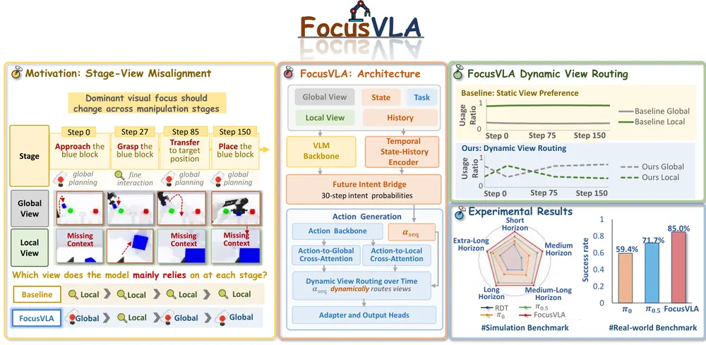
무슨 문제인가
multi-view VLA는 third-person camera로 전역 장면을, wrist camera로 국소 접촉 정보를 제공받지만, 기존 모델은 두 시점을 고정된 context로 합쳐 행동을 생성함. 저자들이 π0.5 multi-view baseline을 분석한 결과 정책이 과제 단계가 바뀌어도 local view에 지속적으로 의존하는 view-dependency inertia를 보임. global planning 단계에서 global view를 가리면 성공률이 85.0%에서 65.0%로 낮아지지만 local view를 가리면 20.0%로 훨씬 크게 낮아져, planning 단계에서도 정책이 사실상 local view에 의존함을 보임. 이는 과제가 진행돼 필요한 시점이 바뀌어도 view 의존을 다시 조정하지 못하는 구조적 한계임.
어떻게 푸나
FocusVLA는 π0.5 multi-view backbone 위에 Future Intent Bridge와 Action-Side Dynamic Routing 두 모듈을 추가함. Future Intent Bridge는 language feature를 query로, vision·robot state·짧은 action history를 key/value로 하는 cross-attention을 거침. 이를 통해 미래 action chunk의 각 step이 local interaction을 필요로 할 확률 sequence를 예측함. 이 확률은 chunk 단위 intent token과 step별 global-local routing weight로 변환됨. Action-Side Dynamic Routing은 action feature가 global·local visual feature 각각과 cross-attention해 얻은 context를 routing weight로 가중합해 step마다 섞음. 그 결과를 residual로 action feature에 더함. 학습 label은 수동 annotation 없이 end-effector 속도·경로·gripper closing 신호에서 자동으로 구성한 weak supervision이고, action loss와 intent prediction의 BCE loss를 함께 최적화함.
결과
- RoboTwin 2.0 50개 과제 평균에서 FocusVLA 76.92%로 가장 강한 baseline π0.5의 66.82%보다 10.10퍼센트포인트 높음.
- 실로봇 Piper arm 6개 과제(과제당 30회)에서 FocusVLA 평균 성공률 85.0%로 π0.5의 71.7%보다 13.3퍼센트포인트, π0의 59.4%보다 25.6퍼센트포인트 높음.
- RoboTwin 2.0(시뮬레이션 양팔 조작 과제 50개 모음) 중 9개 과제로 한정한 ablation에서, FocusVLA 73.7%를 기준으로 step별 routing을 globally shared learned ratio로 바꾸면 67.5%로 낮아짐. intent supervision을 빼고 action loss만 쓰면 55.7%로, chunk-level intent token을 빼면 63.3%로 더 낮아짐.
- 물체 배치를 바꾼 unseen spatial rearrangement 평가(3개 과제)에서도 FocusVLA가 π0·π0.5보다 매 과제 성공률이 높음(예: Task1 80.0% 대 60.0%·46.7%).
한계
미래 의도를 local interaction 확률 하나로만 표현해 subgoal이나 object-level interaction state 같은 더 풍부한 진행도 신호는 다루지 않음. 평가는 RoboTwin 시뮬레이션과 Piper arm 한 플랫폼의 실로봇 6개 과제에 한정되고, cross-embodiment나 다양한 카메라 구성으로의 확장은 다루지 않음.
누리랩 연구와의 연결
- 행동 생성 단계에서 미래 의도로 입력 modality 가중치를 동적으로 바꾸는 구조는, 기존 VLA backbone을 건드리지 않고 보조 신호를 붙이는 설계라 다른 신호(예: failure 확률)를 라우팅에 붙이는 실험에 참고할 수 있음.
- 수동 annotation 없이 end-effector 신호로 stage label을 자동 구성한 방식은 progress labeling이 필요한 다른 랩 연구에도 적용 가능함.
13
70점
Measuring the Reasoning-Action Coupling in Driving Vision-Language-Action Models through Counterfactuals
VLA
relevance 8/10
Artificial Intelligence (cs.AI)
4개 driving VLA에 reasoning 교란과 이미지 속 핵심 object 제거라는 counterfactual 개입을 가해 생성된 reasoning이 실제 trajectory를 얼마나 설명하는지 측정함. AutoVLA·ORION은 reasoning 내용보다 reasoning이 있다는 사실 자체에 더 크게 반응해서(카메라 블랭킹 대비 15.65% 대 3.26% ADE) reasoning이 action의 원인이라는 가정이 약하게만 성립함을 보임.
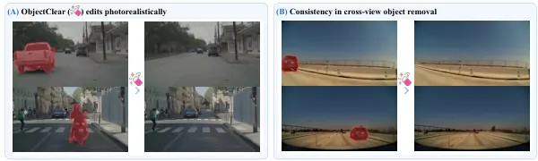
무슨 문제인가
driving VLA는 주행 결정 전에 reasoning 텍스트를 생성해 설명가능성을 제공한다고 주장함. 이 주장은 trajectory가 생성된 reasoning의 의미를 따른다는 것과 reasoning이 실제 원인을 추적한다는 두 가지 가정을 깔고 있음. 기존 평가는 reasoning 텍스트와 trajectory를 각각 reference와 비교할 뿐, trajectory가 reasoning 내용에 의존하는지는 직접 검증하지 않음. 그래서 reasoning은 그럴듯하지만 trajectory는 shortcut prior를 따르는 모델도 두 평가 모두에서 높은 점수를 받을 수 있음.
어떻게 푸나
이 논문은 두 가지 counterfactual 개입으로 reasoning-action coupling을 측정함. reasoning-side 개입에서는 장면은 고정한 채 모델이 생성한 reasoning 문장을 FILLER·MISTAKE·NEGATE·SWAP·DELETE 중 하나로 편집해 trajectory를 다시 디코딩함. FILLER는 의미 없는 토큰으로 길이만 맞춰 채우고, MISTAKE는 LLM으로 결정 문장을 다시 쓰고, NEGATE는 결정 문장을 정형 문구로 반대로 바꾸고, SWAP은 다른 장면의 결정 문장을 그대로 붙이고, DELETE는 문장을 지움. 의미를 유지한 PARAPHRASE 대비 trajectory 변화량(ADE/FDE: 각각 경로 전체·마지막 지점의 평균 위치 오차) 차이로 content dependence를 측정함. image-side 개입에서는 reasoning이 지목한 핵심 object를 사람 평가로 고른 ObjectClear로 사진처럼 지우고, 모델이 새 이미지에서 reasoning과 trajectory를 모두 다시 생성하게 함. 평가 대상은 AutoVLA, Alpamayo-1.5, Alpamayo-R1, ORION 네 개 driving VLA임. 벤치마크는 DriveLM(nuScenes 주행 장면에 구조화된 언어 annotation을 단 벤치마크)과 PhysicalAI-AV(실제 주행 영상에 카메라와 ego trajectory가 동기화된 데이터셋)임. 추가로 reasoning이 말한 좌우 방향과 실제 디코딩된 trajectory 방향이 일치하는 비율도 따로 측정함.
결과
- AutoVLA·ORION는 reasoning 내용을 바꾸는 SWAP·MISTAKE·NEGATE보다 reasoning을 비우거나 의미 없는 토큰으로 채우는 DELETE·FILLER에 더 크게 반응함(카메라 블랭킹 대비 15.65% 대 3.26% ADE, 두 모델 평균). ORION의 MISTAKE(반대 방향 지시)는 PARAPHRASE와 구분되지 않음.
- Alpamayo-1.5는 SWAP·MISTAKE·NEGATE 세 content-changing 개입 모두에 일관되게 반응하지만, 가장 큰 효과인 MISTAKE도 카메라 블랭킹 대비 19.46%에 그침.
- 방향 일치율에서 AutoVLA는 DriveLM에서 92.6%(202개 중 187개), PhysicalAI-AV에서는 89.2%(74개 중 66개)가 말한 방향과 trajectory 방향이 일치함. Alpamayo-1.5는 45.8%(155개 중 71개), Alpamayo-R1은 48.8%(121개 중 59개)만 일치함.
- object 제거 실험에서 regenerated reasoning은 제거된 object를 더 이상 언급하지 않을 만큼 시각 변화를 반영하지만, 그 reasoning이 말하는 maneuver를 trajectory가 항상 따르지는 않음.
한계
분석은 4개 모델과 2개 벤치마크로 한정되고, object-removal counterfactual의 mask와 결과물 품질은 사람이 직접 검수함. trajectory 변화량(ADE/FDE)은 안전성이나 정답 여부를 뜻하지 않고 개입이 trajectory를 얼마나 움직였는지만 보여줌. ORION은 committed 방향 결정 장면 수가 적어 방향 일치율 결론을 내리지 못함.
누리랩 연구와의 연결
- VLA의 reasoning이 실제 action의 원인인지 분리해서 검증하는 counterfactual intervention 틀임. world model이나 failure detection에서 모델이 말하는 이유를 신뢰할 수 있는지 검증할 때 그대로 가져다 쓸 수 있음.
- driving 분야 결과지만, manipulation VLA의 chain-of-thought reasoning이 실제 action을 결정하는지 검증하는 실험 설계로 바로 옮길 수 있음.
14
66점
Asking Less, Adapting Better: Feedback-Efficient Test-Time Adaptation for Vision-and-Language Navigation
Navigation
relevance 7/10
IEEE 학술지 계열 양식 (추정)
Computer Vision and Pattern Recognition (cs.CV)
FETA(Feedback-Efficient Test-Time Adaptation)는 VLN test-time adaptation에서 사람 feedback을 물을 trajectory와 action을 고름. trajectory당 binary feedback 1개만으로 policy를 업데이트함. DUET backbone REVERIE(언어 지시로 건물 안 목표 지역과 물체를 찾아가는 VLN 벤치마크) val unseen에서 기존 TTA 최강 baseline ATENA 대비 SPL을 18.30% 상대적으로 올림.
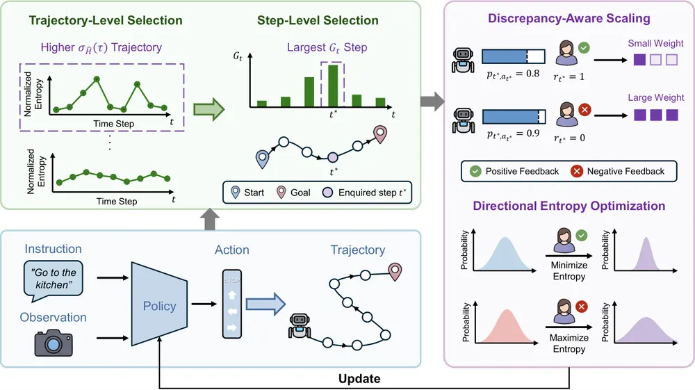
무슨 문제인가
VLN agent는 학습 환경과 다른 unseen 환경에 배치되면 성능이 크게 낮아짐. entropy minimization 같은 unsupervised TTA는 navigation이 sequential decision-making이라는 점 때문에, 한 step의 잘못된 업데이트가 이후 state와 최적화 신호를 왜곡시켜 연쇄적 실패로 이어짐. 최근 방법들은 사람 feedback을 trajectory 단위로 받아 신뢰도를 높이지만, 같은 trajectory 안의 모든 step에 똑같은 feedback을 적용함. 성공한 trajectory에도 나쁜 action이 섞여 있고 실패한 trajectory에도 좋은 action이 섞여 있어, 이런 균일한 적용은 feedback을 비효율적으로 쓰고 최적화 단위를 어긋나게 함.
어떻게 푸나
FETA는 episode가 끝난 뒤 두 단계로 feedback을 요청할 곳을 고름. 먼저 trajectory 단위에서, step별 normalized policy entropy의 표준편차가 큰 trajectory만 선택함. 표준편차가 크다는 것은 agent가 확신과 불확실 구간을 오가며 국소적으로 불안정한 결정을 내렸다는 뜻임. 선택된 trajectory 안에서는 entropy가 action logit에 얼마나 민감한지를 재는 entropy-gradient saliency가 가장 큰 step 하나를 고름. 이 step에 대해서만 action이 목표 도달에 도움이 됐는지 binary feedback을 받음. feedback과 policy가 그 action에 부여한 확률의 차이를 가중치로 써서, 차이가 클수록 더 크게 업데이트하는 discrepancy-aware scaling을 적용함. feedback이 긍정이면 해당 step의 policy entropy를 최소화해 결정을 강화하고, 부정이면 entropy를 최대화해 다른 action으로 확률을 분산시킴. 이 업데이트는 선택된 step 하나에만 가해지고 나머지 step은 건드리지 않음.
결과
- REVERIE val unseen에서 SPL이 ATENA 대비 DUET 18.30%, GOAT 26.21%, ScaleVLN 15.34% 상대적으로 오름.
- 같은 DUET 조건 val unseen에서 사람 feedback 요청 횟수(FC)도 ATENA의 2595회에서 FETA의 2475회로 줄음.
- ablation에서 trajectory-level selection과 step-level selection을 모두 빼고 discrepancy-aware scaling만 남기면(random 선택) REVERIE val unseen SPL이 낮아짐. 50.55%에서 37.63%로 내려감.
- 실제 로봇 office·laboratory 환경에서 각 20 episode를 BEVBert 기준으로 평가했을 때, 성공률이 각각 15퍼센트포인트, 10퍼센트포인트 오름.
한계
SPL 개선 폭이 backbone마다 15~26%로 차이가 크고, noisy feedback 정확도가 60% 밑으로 낮아지면 unadapted baseline보다 더 낮아짐. 사람 feedback은 progress-based oracle로 대신했는데, 실제 사람 annotation과는 78.9%만 일치해 완벽한 대체는 아님. 실로봇 평가는 office·laboratory 두 환경, 각 20 episode로 범위가 제한적임.
누리랩 연구와의 연결
- binary human feedback 1개만으로 test-time에 policy를 교정하는 방식은, 누리랩의 language feedback 기반 learning·test-time optimization 연구에 바로 적용해볼 수 있는 scheduling 기법임.
- trajectory 전체가 아니라 critical한 한 step만 골라 교정한다는 아이디어는 manipulation의 failure detection·local recovery 설계에도 옮겨볼 수 있음.
15
60점
FastHarness: Experience-Driven Review Scheduling for Vision-Language-Action Policies
VLA
relevance 8/10
ACL 계열 양식 (추정)
Robotics (cs.RO)
FastHarness는 π0.5 policy를 감독하는 VLM reviewer(GPT-6 Astra)를 매 action chunk마다 부르지 않고, stage별 과거 성공·실패 기록으로 review 빈도를 점점 줄이는 harness임. 4개 manipulation task 평균에서 reviewer token 사용을 57.2% 줄이면서 성공률을 80%에서 97.19%로 올림.
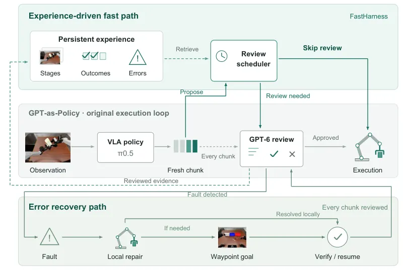
무슨 문제인가
agentic robot system은 VLA policy의 action을 매 chunk마다 언어모델로 review해 실행을 감독하고 오류를 복구함. policy가 이미 안정적으로 잘 수행하는 단계에서도 매번 review를 반복하면 비용과 지연이 커짐. 반면 실제 오류, 예를 들어 놓친 grasp나 떨어뜨린 물체는 여러 번의 교정이 필요해 review 빈도를 똑같이 다루면 안 됨. 반복 실행에서 쌓이는 경험을 review 빈도 조절에 활용하는 방법이 필요함.
어떻게 푸나
FastHarness는 GPT-as-Policy 구조(π0.5 policy와 GPT-6 Astra review) 위에 memory 기반 scheduler를 얹음. reviewer가 매 review마다 approaching·grasping·placing 같은 stage label과 success·failure 판정을 남김. harness는 관측을 RGB thumbnail과 proprioceptive state로 표현해 stage별로 최근 128개까지 저장함. 새 관측이 들어오면 가장 가까운 저장 예시와의 거리를 재서 review 여부를 정하는 fast path가 동작함. stage별 reviewed 성공·실패 횟수로 conservative score(Wilson score 기반)를 계산하고, 이 점수와 경험량이 클수록 review 간격을 늘림. 처음 보는 context거나 과거 오류와 가까운 상황이면 이 간격을 무시하고 강제로 review함. review 없이 넘어가는 동안에도 π0.5는 매번 새 관측에서 fresh action chunk를 생성함. review에서 오류나 intent mismatch가 감지되면 recovery path가 활성화돼 매 chunk를 review하며 local repair를 시도하고, 두 번 실패하면 이전에 검증된 waypoint로 되돌아가도록 policy를 유도함. reviewer가 복구를 확인하면 일반 scheduling으로 복귀하되, 해당 오류 기록은 남겨 이후 비슷한 상황에서 다시 review하게 함.
결과
- RoboDojo(시뮬레이션 manipulation 환경) 4개 task에서 reviewer token 사용량이 첫 episode 대비 마지막 5개 episode 평균 기준 task별 평균 57.2% 줄고, task 평균 토큰 수도 183만에서 93만으로 줄음.
- task 평균 episode 소요 시간이 85.5분에서 52.0분으로 약 39% 줄음.
- 4개 task 평균 성공률이 GPT-as-Policy baseline(π0.5 + GPT-6 Astra)의 80%에서 FastHarness의 97.19%로 오름. Build tower는 60%에서 93.75%로, Classify objects는 60%에서 100%로 오름.
- Fold clothes·Bottle disposal 20 episode 전체에서 reviewer와의 상호작용이 전체 wall-clock 시간의 각각 82.0%, 89.7%를 차지해, review 빈도가 실행 속도를 좌우하는 주요 변수임을 보임.
한계
평가가 RoboDojo 시뮬레이션 4개 task, π0.5와 GPT-6 Astra 조합 한 가지에 한정됨. review 간격·거리 임계값 같은 하이퍼파라미터가 수작업으로 고정돼 있고, Fold clothes 한 episode에서는 20번 review하고도 recovery를 트리거하지 못한 채 task가 실패함(native score 0.2). baseline(π0.5+GPT-6 Astra, 매 chunk review) 수치는 FastHarness 자체 평가가 아니라 GPT-as-Policy report에서 가져온 값임.
누리랩 연구와의 연결
- VLM reviewer의 감독 빈도를 경험 기반으로 줄이는 scheduling은 누리랩의 test-time optimization·failure detection 연구에서 감독 비용을 낮추는 설계로 바로 참고할 수 있음.
- 오류 발생 시 local repair 후 이전 waypoint로 되돌아가는 recovery path는 robot memory 기반 failure recovery 설계와 맞닿아 있음.
오늘의 흐름
- world model이 pixel 대신 쓸모를 직접 학습함: DRILL은 world model을 pixel fitting이 아니라 policy가 상상 속에서 배운 뒤 실제로 얻는 return으로 학습시킴. FRED는 video diffusion model이 noise에서 뽑아낸 표현을 pixel 재구성 대신 self-distillation만으로 개선함. VANE는 pixel이 아니라 고정된 semantic embedding을 예측 대상으로 씀. 셋 다 world model의 학습 목표를 pixel 재구성에서 떼어내는 방향임.
- VLA 내부 신호로 감독을 대체함: Progress Probe는 linear probe 하나로 내부 activation에서 task progress를 디코딩함. Echo는 stop·failure 신호를 action chunk와 함께 denoising함. FastHarness는 외부 VLM reviewer를 계속 쓰되 호출 빈도를 경험 기반으로 줄임. 외부 VLM 의존을 줄이거나 VLA 내부 신호로 대체하려는 시도가 이어짐.
- geometry·relation을 world model latent의 별도 성분으로 분리함: UniFlowWAM은 3D flow를 vision·action과 동등한 modality로 넣음. SkeLAM은 latent action을 skeleton 성분과 residual로 나눔. Inside-JEPA는 latent state에 entity 쌍마다 relational channel을 추가함. world model 내부 표현을 구조화해 특정 성분에 의미를 강제하는 설계가 공통임.
- VLA의 내부 신호가 실제로 행동의 원인인지 검증함: Measuring the Reasoning-Action Coupling은 counterfactual 개입으로 driving VLA의 reasoning이 trajectory를 실제로 설명하는지 잼. Sensorimotor Alignment는 학습 없는 offline metric으로 VLA의 sensory representation이 motion 구조와 얼마나 가까운지 잼. 둘 다 VLA가 내놓는 설명·표현을 그대로 믿지 않고 검증하는 도구임.
- memory·feedback으로 적응 비용을 줄임: WholeBodyMem은 사라진 물체 사건만 선택해 기억함. FETA는 trajectory 하나에 binary feedback 1개만 물어 test-time adaptation을 함. FocusVLA는 미래 의도로 입력 modality 비중을 단계별로 바꿈. 적은 신호로 policy를 교정하려는 방향이 공통임.
해볼 만한 연구
VLA 내부 progress·failure 신호의 causal 검증
- 질문: Progress Probe류가 내부 activation에서 디코딩한 progress·failure 신호가 실제로 policy 행동을 바꾸는 원인인지, 상관관계만 있는 부산물인지.
- 첫 실험: 낮은 progress를 출력하는 activation을 인위적으로 높은 쪽으로 패치한 뒤, 실제 rollout에서 복구 행동이 줄어드는지 측정함.
- 가장 가까운 연구: Progress Probe는 probe의 AUROC만 보고 causal 관계를 검증하지 않음. Measuring the Reasoning-Action Coupling의 counterfactual 개입 방법을 progress monitoring에 옮겨 적용하는 점이 다름.
explicit 3D state world model을 downstream return으로 학습
- 질문: dexterous manipulation world model의 3D state 예측 정확도가 실제 policy 성능과 얼마나 상관있는지, state fitting 대신 policy return으로 직접 최적화하면 더 나은지.
- 첫 실험: DeXplicit(명시적 3D object motion을 예측하는 world model)의 predictor를 고정하고 DRILL의 bilevel GRPO(group relative policy optimization) loop로 policy를 업데이트함. point error 최소화 방식보다 실제 grasp success가 오르는지 비교함.
- 가장 가까운 연구: DRILL은 manipulation world model이지만 latent로만 다루고 명시적 3D state가 없음. DeXplicit은 명시적 3D state를 예측하지만 point error로만 학습함. 둘 사이가 비어 있음.
object 소멸 사건과 action 실패 사건을 하나의 memory로 통합
- 질문: whole-body VLA가 물체가 사라진 사건과 과거 실패·복구 사건을 같은 memory buffer에 같이 저장하면, 둘 중 하나만 쓰는 것보다 복합 실패 상황에서 복구 성공률이 오르는지.
- 첫 실험: WholeBodyMem의 object event selection과 Echo의 failure·stop signal을 같은 key-frame budget 안에서 같이 저장시킨 뒤, 물체가 사라지면서 조작도 실패하는 복합 시나리오에서 ablation을 함.
- 가장 가까운 연구: WholeBodyMem은 object event만, Echo는 failure·stop signal만 다룸. 둘을 같은 memory 구조로 합친 연구는 없음.
꼭 읽을 논문
- DRILL: Training World Models to Improve Policies, Not Predict Pixels: world model 학습 목표를 pixel에서 policy return으로 바꾼 bilevel formulation임. test-time optimization·RL 기반 VLA 연구와 바로 연결됨.
- Memory before Goal: Role of Pre-History Memory for Humanoid Loco-Manipulation: 실제 로봇에서 object-centric event memory로 성공률을 36.7%에서 88.3%로 올림. robot memory 연구의 강한 비교 대상이 됨.
- A Unified World-Action Model with Visual Semantics and 4D Geometry: 3D flow를 world model의 co-equal modality로 통합한 구조임. object-centric 4D representation 연구에 직접 참고가 됨.
- Self-Distilling Future Video Representations for World Action Models: world model을 representation generator로 재해석하고 human video만으로 task를 전이시킴. demonstration 부족 상황의 로봇 학습에 구체적 비교 대상이 됨.
- Sensorimotor Alignment: A Platonic Proxy for Embodied Policy Success: closed-loop 평가 없이 VLA backbone을 먼저 거르는 학습 없는 진단 지표라 설계 단계에서 바로 쓸 수 있음.
전체 1차 스크리닝 결과 (462편, 점수순) 펼치기
| # | 제목 | 점수 | 🤖 | 분야 | 한 줄 근거 |
|---|---|---|---|---|---|
| 1 | DRILL: Training World Models to Improve Policies, Not Predict Pixels | 78 | 9 | World Model | world model을 pixel 예측이 아니라 policy의 downstream return을 올리도록 직접 학습시키는 bilevel framework임. pixel MSE가 낮아도 policy gradient는 나쁠 수 있다는 걸 보이고 5개 manipulation simulator·2개 VLA backbone에서 success rate를 WMPO보다 13.1점 올려 world model 학습 목적 자체를 재정의하는 formulation 신규성이 큼 |
| 2 | Self-Distilling Future Video Representations for World Action Models | 72 | 9 | World Model | video diffusion 기반 world action model이 단일 denoising step에서 뽑는 미래 표현을 self-distillation으로 개선함. 실로봇 조작에서 long-horizon·zero-shot 환경 일반화와 human-to-robot skill transfer(50.0% 대 19.4%)를 크게 올려 world model·generalist policy 핵심 주제에 직접 해당함 |
| 3 | DeXplicit: Making Physical State Explicit in Dexterous Manipulation World Models | 70 | 9 | World Model | dexterous manipulation에서 손 동작이 만들 결과를 pixel이 아니라 명시적 3D object motion으로 먼저 예측하고 그걸로 video rendering을 보조하는 world model임. HOT3D 등에서 point error 27~40% 감소해 world model·manipulation 우선주제에 강하게 부합함 |
| 4 | Memory before Goal: Role of Pre-History Memory for Humanoid Loco-Manipulation | 70 | 9 | VLA | 휴머노이드 VLA가 과거 사라진 물체 사건을 object-centric key frame memory로 유지하게 만들어 성공률을 29%대에서 72~88%대로 크게 올림. robot memory와 non-Markovian 문제를 정면으로 다뤄 랩 주제와 직결됨 |
| 5 | UniFlowWAM: A Unified World-Action Model with Visual Semantics and 4D Geometry | 68 | 9 | World Model | 3D scene flow를 vision·action과 동등한 세 번째 modality로 넣어 policy·forward/inverse dynamics를 한 모델로 통합한 world-action model임. RoboCasa-GR1·LIBERO-Plus와 실로봇 양팔 조작에서 baseline 대비 큰 성공률 향상(87.0% 대 68.5%)을 보여 world model 핵심 주제에 강하게 부합함 |
| 6 | FocusVLA: Future-Intent Guided Dynamic View Routing for Vision-Language-Action Models | 68 | 9 | VLA | 미래 의도를 예측해 global·local view를 단계별로 동적 라우팅하는 VLA 구조로 실로봇 성공률을 71.7%에서 85%로 올림. 기존 VLA에 모듈 추가로 붙는다는 실용성도 있음 |
| 7 | Measuring the Reasoning-Action Coupling in Driving Vision-Language-Action Models through Counterfactuals | 68 | 8 | VLA | driving VLA의 reasoning이 counterfactual 개입에도 실제 trajectory와 약하게만 연결됨을 보여, VLA explainability의 핵심 가정을 직접 반박하는 연구임 |
| 8 | Inside-JEPA: From Prediction to Relational Grounding in Latent World Models | 68 | 7 | World Model | JEPA latent world model 안에 relational channel을 넣고 inverse-dynamics loss로 label 없이 관계를 grounding함. RH20T robot episode에서 relational AUROC를 올려 world model 내부 표현을 구조화하는 문제에 직접 닿음 |
| 9 | Sensorimotor Alignment: A Platonic Proxy for Embodied Policy Success | 66 | 9 | Embodied AI | embodied model의 sensory representation이 물리적 motion 구조와 얼마나 잘 맞는지로 closed-loop rollout 없이 policy 성공률을 예측하는 training-free offline metric을 제안함. VLM backbone을 VLA로 fine-tuning하기 전에 미리 걸러낼 수 있다는 점이 VLA 연구 우선순위화에 바로 쓸 수 있는 formulation 신규성임 |
| 10 | Learning from Next-Frame Prediction: Towards Unified and Scalable Visual Representation Learning | 66 | 6 | World Model | masked prediction 대신 embedding space에서 next-frame을 예측하는 self-supervised world modeling 방법임. EPIC-KITCHENS action anticipation에서 V-JEPA 2.1보다 7.1점 높아 world model 표현학습 우선주제와 직결됨 |
| 11 | Echo: Coupled Action and Task Status Signal Denoising for Vision Language Action Models | 65 | 9 | VLA | action chunk에 stop·failure 신호를 추가해 action과 같이 denoising하면서 fine-grained progress annotation 없이 성공·실패를 판단하게 함. failure detection을 VLA 구조 안으로 끌어들인 설계라 랩 주제에 바로 맞음 |
| 12 | Progress Probes $P^2$: Lightweight Runtime Monitoring for Vision-Language-Action Models | 63 | 9 | VLA | VLA 내부 activation에 linear probe만 붙여 외부 VLM 없이 실행 진행도를 추정해 실패를 감지함. 가벼운 runtime monitoring이라는 점에서 failure detection 우선 주제에 실용적으로 맞음 |
| 13 | Skeleton-Grounded Latent Action Model for Robot World Models | 62 | 8 | World Model | latent action을 로봇 skeleton 기반 kinematic 성분과 잔차 성분으로 분리해 world model을 더 controllable하게 만듦. DROID에서 DreamDojo 대비 ADE·LPIPS를 개선해 world model·latent action 우선 주제에 맞음 |
| 14 | Asking Less, Adapting Better: Feedback-Efficient Test-Time Adaptation for Vision-and-Language Navigation | 62 | 7 | Navigation | VLN test-time adaptation에서 어느 step이 중요한지 골라 최소한의 binary feedback만 쓰는 방법임. test-time optimization과 language feedback 기반 학습 둘 다 걸려 있어 우선주제와 잘 맞음 |
| 15 | FastHarness: Experience-Driven Review Scheduling for Vision-Language-Action Policies | 60 | 8 | VLA | VLM 감독을 경험 기반으로 스케줄링해 리뷰 빈도를 줄이면서 성공률을 80%에서 97%로 올림. failure detection·recovery와 test-time 감독 주제에 바로 닿음 |
| 16 | In-Context Learning World Models for Robot Dual-Arm Manipulation of Soft Garment with Partial Observations | 58 | 8 | World Model | 부분관측 point-cloud 이력에서 in-context learning으로 옷감의 latent 모양·물성을 추론하는 soft-object world model임. weight 갱신 없이 embodiment·재질·과제를 넘나들며 일반화해 world model·양팔 조작 실로봇 실험까지 보임 |
| 17 | PiHand: Latent Hand-Object Interaction Priors for Physics-Based Policy Learning | 58 | 7 | Manipulation | mocap tracking expert를 VAE로 증류해 만든 hand-object interaction latent prior에서 residual exploration으로 다양한 dexterous manipulation task를 generalize함. GRAB·DexYCB에서 안 본 물체·궤적에 전이되고 양손 handover 등 학습에 없던 task까지 되는 점이 dexterous manipulation 우선주제에 부합함 |
| 18 | Learning Robot Behavior Priors from Non-Robotic Synthetic Data | 58 | 7 | RL | 로봇이 아닌 절차적 합성 데이터만으로 사전학습해도 in-context로 실제 로봇 action prediction에 전이된다는 걸 보임. embodied pretraining data 병목에 대한 새 formulation이라 흥미로움 |
| 19 | F2G-Pose: Geometry-Aware Foundation Feature Lifting for Direct RGB-D Category-Level Object Pose Estimation | 56 | 7 | Manipulation | 단일 RGB-D에서 category-level object pose·크기·camera-frame shape completion을 한 번의 feed-forward로 추정하는 실시간(28 FPS) 방법임. segmented RGB-D 입력으로 실제 manipulation 실험까지 보여 로봇 perception 파이프라인에 바로 쓸 수 있음 |
| 20 | AstroBench: Benchmarking Free-Floating Capture and Space Robotic Manipulation | 56 | 7 | Manipulation | 우주선 내 자유부동 물체 포획이라는 새 매니퓰레이션 벤치마크를 만들고 pi0.5·ACT 같은 generalist policy의 낮은 transfer 성능을 드러냄. benchmark 기여지만 실패 양상 분석이 의미 있음 |
| 21 | DiffDreamer: Coupling World Models with Differentiable Simulation for Agile Quadrotor Control | 56 | 7 | World Model | world model이 외부 동역학을, differentiable simulator가 로봇 자체 물리를 따로 맡게 분리해 쿼드로터 제어를 학습함. world model과 미분가능 시뮬레이션 결합이 새로운 조합이고 실비행 검증도 있음 |
| 22 | RecallGS: Geometry-Grounded Recall for Online Semantic Gaussian Splatting | 56 | 6 | 3D Vision | online semantic 3DGS에서 geometry-semantic 정보를 추가 네트워크로 학습하지 않고 과거 관측 기록에서 CLIP으로 recall해 쓰는 training-free 방법임. scene understanding을 agent의 observation history로 푸는 관점이 참신하고 2.48 FPS로 online 적용 가능해 semantic mapping 우선주제와 맞음 |
| 23 | Alpha: Systematic Fault Injection and Robustness Evaluation for LLM-Driven Embodied Manipulation | 55 | 7 | Manipulation | LLM 기반 embodied manipulation에 perception·actuation·kinematics·planning 전 스택에 걸쳐 calibrated fault를 주입해 실패 원인을 분리하는 평가 프레임워크임. 성능 차이가 물리적 요인이 아니라 planner output corruption(JSON 직렬화)에서만 발생함을 보여 failure detection·diagnosis 주제에 직접 닿음 |
| 24 | Externalise the Memory: A Pre-Registered Study of Where an Embodied Agent's Experience Should Live | 55 | 7 | Embodied AI | embodied agent의 경험을 policy weight에 구울지 외부 retrieval로 둘지를 사전등록 실험으로 비교함. retrieval buffer를 고정 weight에 붙이는 쪽이 behavioral distillation보다 크게 이김을 보여 robot memory 주제에 직접 닿고 통계적으로도 엄격함 |
| 25 | PhysTrace: Interpretable Temporal Evaluation of Physical Consistency in Video Generative Models | 55 | 7 | World Model | video generative model의 물리적 일관성 위반을 시간적으로 국소화하는 training-free 평가 프레임워크임, world action model 평가에 바로 쓸 수 있는 도구임 |
| 26 | KinoUAV: A Benchmark for Safe and Stable UAV Vision-Language Navigation with Kinodynamic Modeling | 55 | 6 | Navigation | UAV vision-language navigation에 kinodynamic 제약과 안전거리(DFD)를 넣은 benchmark·agent임. navigation/VLN 우선주제와 맞고 perception-action 분리 설계가 참고할 만함 |
| 27 | TerraTransfer++: Demonstration-Free End-to-End Planner | 55 | 6 | Navigation | vectorized simulator에서 self-play로 학습한 policy를 flow-matching teacher로 증류해 사람 demonstration 없이 end-to-end 주행 policy·planner를 만듦. demonstration-free라는 새 problem formulation이고 HUGSim·NAVSIM에서 기존 imitation 기반 SOTA를 능가함 |
| 28 | To Route or to Adapt? Multi-Expert Diffusion Planners in Unseen Regions | 54 | 6 | RL | unseen region에서 expert routing보다 test-time fine-tuning이 더 크게 이긴다는 걸 실험으로 보임. diffusion planner의 test-time adaptation 한계를 밝힌 분석이 쓸모 있음 |
| 29 | GelSlim 5.0: Unifying Vision and Touch with a Single Fingertip Camera | 54 | 6 | Manipulation | 한 카메라로 시각·촉각을 번갈아 찍는 새 fingertip 센서와 멀티모달 fusion 모델임. tactile perception 우선 주제이고 하드웨어·알고리즘 결합이 구체적임 |
| 30 | OpenTac: An Open Ecosystem for Customizable, Scalable, and Transferable 3D Tactile Sensing | 54 | 6 | Manipulation | 텍스트 설명으로 센서 모양을 자동 생성하는 CAD 툴까지 포함한 3D tactile 센서 오픈 생태계임. tactile perception 우선 주제이고 여러 embodiment에 걸친 적용성을 보임 |
| 31 | EgoHand: Monocular 3D Hand Reconstruction from Egocentric Video | 52 | 5 | 3D Vision | egocentric video에서 3D hand reconstruction함. 1400만 이미지 스케일업과 데이터 큐레이션이 핵심이라 novelty는 낮지만 인간 시연 영상에서 손 pose 뽑는 거라 imitation learning 데이터 파이프라인에 쓸 수 있음 |
| 32 | When One Step Is Enough: An Empirical Study of Euler Integration in Flow-Matching Policies | 50 | 7 | VLA | flow-matching VLA policy 6개에서 one-step 생성이 multi-step ODE 적분과 거의 같은 성능을 낸다는 실증 연구임. VLA 배포 latency에 직결되는 실용적 발견이고 CoRL 2026에 채택됨 |
| 33 | RGraph-Eval: Task-Grounded Scene Graphs for Evaluating Robot Video Generation | 50 | 6 | Video | 로봇 영상 생성물을 task-grounded scene graph로 평가하는 새 benchmark·metric 제안임. 평가 도구 기여라 방법론 자체 novelty는 중간 정도임 |
| 34 | Point-Level Refinable Semantic Mapping for Spatial Understanding | 50 | 6 | 3D Vision | object-centric semantic map의 점들을 append-only가 아니라 confidence로 지속 갱신하는 방식임. scene graph/semantic mapping 우선 주제이고 동적 환경 robustness 개선이 구체적임 |
| 35 | SCOPE: Scene-graph Construction Optimized by Plan Error-correction for Robot Long-term Planning Datasets | 50 | 6 | RL | planner 실패를 피드백으로 써서 TAMP 데이터셋의 scene graph 오류를 교정하는 자동 생성 프레임워크임. TAMP 데이터 품질 문제를 다뤄 long-horizon planning 우선 주제와 맞닿음 |
| 36 | AgentDreamer: Agentic 3D Motion Reasoning for Text-Controllable Physics Simulation | 50 | 4 | World Model | LLM agent가 만든 3D motion prior로 differentiable MPM simulator를 최적화해 text로 물리 시뮬레이션을 제어함. world model·physics simulation 결합이 참신하지만 로봇 실험은 없음 |
| 37 | An Introduction to World Models for Generalist Agents | 48 | 7 | World Model | world model을 POMDP·control·RL과 연결해 정리한 개론 논문임, 랩 핵심 주제와 직결되나 새 실험·novelty는 없는 튜토리얼임 |
| 38 | PhysibleMDM: Enforcing Inference-Time Physical Feasibility Constraints on Motion Diffusion Models via Noise Optimization | 48 | 6 | Video | motion diffusion model 출력의 물리적 타당성을 재학습 없이 inference-time noise 최적화로 교정함. test-time optimization 주제와 맞고 ground penetration·self-collision을 큰 비율로 줄임 |
| 39 | Humanoid Mobility via Attention-based Contacts | 48 | 6 | RL | motion data를 reward가 아니라 prior로만 쓰고 attention 기반 contact planner가 지형별 발 디딤을 계획하게 함. humanoid locomotion의 reference-based와 RL 방식을 접합한 시도임 |
| 40 | HiSTEVE 1.0: Harnessing Human-Interface VLA Agents for Open-World Games | 48 | 5 | VLA | Minecraft에서 VLM planner와 단일 VLA policy가 subtask 완료를 스스로 판단하며 long-horizon 작업을 수행하는 hierarchical agent임. VLA·long-horizon planning 우선주제와 맞지만 실로봇이 아닌 게임 환경임 |
| 41 | METTA: Memory-Enhanced Test-Time Adaptation for Meta-Reinforcement Learning | 48 | 5 | RL | neural memory로 episode 내외 두 시간축을 나눠 test-time adaptation하는 meta-RL 기법임. Meta-World ML10/45 manipulation 벤치마크에서 held-out task에 빠르게 적응해 test-time optimization·robot memory 주제와 바로 연결됨 |
| 42 | MoRE: Motion-Regularized Encoding for Articulated 3D Generation | 48 | 4 | 3D Vision | 단일 이미지에서 articulated object의 관절·동작까지 복원하는 representation 제안함. object-centric 3D와 articulation이라 manipulation 대상 인식에 참고될 수 있지만 로봇 실험은 없음 |
| 43 | SplatLab: Autonomous Scientific Discovery for 3DGS Research | 48 | 1 | 3D Vision | 3DGS 연구를 자동으로 재현·확장·검증하는 autonomous research 시스템임. 자동화 paradigm은 흥미롭지만 robotics와 직접 관련 없음 |
| 44 | SmolVLA-MoE: Sparse Mixture-of-Experts for Efficient Multi-Task Robotic Manipulation | 46 | 6 | VLA | VLA action expert FFN에 sparse MoE를 넣어 멀티태스크 성능을 올린 논문임. LIBERO에서 SmolVLA·OpenVLA보다 성공률 높지만 efficiency용 module 추가형 기여라 novelty는 크지 않음 |
| 45 | A Sparse Topometric Graph for Scalable Cross-Session Indoor Navigation | 46 | 6 | Navigation | 세션 간 indoor navigation을 위해 점 단위 대신 sparse topometric graph matching을 쓰는 구조임. 메모리 효율은 좋으나 scene graph 아이디어 자체의 신규성은 중간임 |
| 46 | VecTile: A Low-Cost Flexible Tactile Array for 3-DoF Force Sensing | 46 | 6 | Manipulation | 저가 유연 tactile array로 3축 force를 측정해 diffusion policy의 삽입 작업을 개선함. tactile perception 우선 주제고 실제 정책 성능 개선까지 보임 |
| 47 | AgentVQA: A Unified Benchmark for Agentic Visual Understanding | 46 | 5 | Embodied AI | Robotics를 포함한 5개 agent domain(web, robotics, egocentric video, games, spatial planning)에서 VLM의 agentic visual understanding을 오프라인으로 평가하는 benchmark임. 오류가 주로 현재·변화하는 visual state를 못 잡는 데서 온다는 분석이 embodied spatial reasoning과 바로 연결됨 |
| 48 | Reading, Writing, Sharing, and Interacting with the World through Video | 45 | 6 | World Model | video foundation model과 video world model을 reading·writing·sharing·interacting 네 operation으로 통합해 정리한 survey임. world model 연구 전반을 조망하는 참고자료로 우선주제와 직결되지만 survey라 새 실험 기여는 없음 |
| 49 | OASIS: Online Anchor-centric Scene Inference System for Open-Vocabulary Retrieval and Navigation in Dynamic Environments | 45 | 6 | Navigation | 실내 scene을 소수의 semantic anchor로 표현해 open-vocabulary retrieval·navigation과 이동 물체 재배치까지 다루는 online mapping 시스템임. scene graph/semantic mapping 주제와 맞고 ACM MM oral로 실험도 충실함 |
| 50 | CMAR-search: Commonsense and Memory Augmented Reasoning for Object Search in Dynamic Interactive Environments | 45 | 6 | Navigation | 기능적 영역을 반영한 Functional 3D Scene Graph로 commonsense·memory 기반 물체탐색을 계층적으로 수행함. scene graph·robot memory 주제와 맞고 ICRA 2026에 채택됨 |
| 51 | Stream4D: Streaming 4D Reconstruction with Training-free Motion Decoupling via Causal KV-Cache Attention | 45 | 4 | 3D Vision | causal attention의 KV-cache 안에 있는 motion 정보를 꺼내 training-free로 동적/정적 영역을 분리하는 streaming 4D reconstruction임. 긴 시퀀스에서 pose drift·ghosting을 줄이는 점이 embodied spatial reasoning에 참고될 만함 |
| 52 | Probabilistic Energy Modeling Unifies Versatile Swarm Control | 44 | 5 | RL | swarm 행동들을 Gibbs energy 항으로 묶어 재학습 없이 조합하는 통합 프레임워크임. 멀티로봇 제어 일반화 도구로서는 novelty 있으나 매니퓰레이션·VLA와는 거리 있음 |
| 53 | Retrieval-Augmented Online Textual Memory for Episodic Memory Video Question Answering | 44 | 4 | Multimodal | egocentric video를 텍스트 메모리로 바꾸고 질문에 맞게 검색하는 episodic memory VideoQA 연구임. retrieval 많이 할수록 답이 나빠질 수 있다는 분석이 있어 robot memory 설계에 참고할 만함 |
| 54 | Co^2Gen: Collaboratively Generating Task Plans for Decentralized Multi-Robot and Human Collaboration | 42 | 6 | VLA | 사람 teleoperation 없이 분산형 multi-robot collaborative plan과 데모 데이터를 자동 생성해 VLA를 finetuning함. VLA·skill chaining 주제의 새 problem formulation임 |
| 55 | Evaluation of Front-End Feature Matching for Lunar Visual SLAM | 42 | 5 | Navigation | 달 탐사 rover용 visual SLAM feature matcher 11종을 실제 lunar-testbed 영상으로 비교한 benchmark 연구임. 새 방법 제안은 없지만 로봇 localization에 직접 쓰이는 실증 데이터임 |
| 56 | Causal Analysis of Failures of Cyber-Physical Systems with Continuous Inputs | 42 | 5 | Embodied AI | actual causality 이론에 거리 개념을 더해 연속 입력을 갖는 cyber-physical system의 실패를 설명하는 기법임. causal reasoning·failure diagnosis 주제와 맞는 이론적 확장임 |
| 57 | Dual Exam: Controlled Evaluation of Multimodal Agents and World Models | 42 | 5 | World Model | multimodal agent와 world model을 물리·디지털·사회·과학 도메인에서 분리 평가하는 benchmark임, world model 평가축이라 참고 가치 있음 |
| 58 | DuoCook: An Overcooked-Inspired Benchmark for Visual Planning and Coordination | 42 | 5 | Embodied AI | Unreal Engine 기반 Overcooked류 benchmark에서 VLM 하나가 두 플레이어의 조리·조율을 계획하는 과제임, 시각 기반 장기 계획·자원 조율이라 embodied 멀티태스크 관점에서 참고 가치 있음 |
| 59 | Query-Time Calibration of CLIP Features for Open-Vocabulary 3D Segmentation | 42 | 4 | 3D Vision | 3D Gaussian에 lifted된 CLIP feature를 scene별로 보정해 open-vocab 3D segmentation을 training-free로 개선함. semantic mapping에 쓰일 수 있는 기법이지만 로봇 적용은 다루지 않음 |
| 60 | Anticipating Social Consequences with Distributional World Models | 42 | 4 | World Model | social world model이 여러 미래 결과와 확률을 한 번에 예측하는 DSWM 제안임, formulation은 참고할 만하나 도메인이 사회적 협상이라 로봇 물리 환경과는 거리 있음 |
| 61 | R4DGS: Referring Segmentation in 4D Gaussian Splatting | 42 | 3 | 3D Vision | 4D Gaussian Splatting에 language referring 붙인 task·benchmark 제안임. training-free grounding이라 scene graph/semantic mapping과 맥락은 있지만 로봇 적용은 다루지 않음 |
| 62 | Visual Grounding First, Multimodal In-context Learning Follows | 42 | 2 | Multimodal | multimodal in-context learning에서 visual grounding이 bottleneck임을 밝히고 contrastive RL로 보완함. MLLM 일반 연구라 robotics 직접 연관 약함 |
| 63 | Adaptive Aerial Loco-Manipulation Policy Learning via LLM-Assisted Proactive Task Generation | 40 | 6 | Manipulation | LLM이 관찰된 비행제어 실패를 분석해 새로운 arm motion 학습 과제를 제안하는 진화적 커리큘럼으로 aerial loco-manipulation을 학습함. LLM-assisted task generation이라는 새 조합이 있고 실제 aerial manipulator로 zero-shot 전이함 |
| 64 | Know When to Escalate: Critic-Guided Adaptive Execution for Cloud-Local Embodied Agents | 40 | 5 | Embodied AI | critic이 실행 신뢰도를 보고 local executor와 cloud 모델 사이 제어 권한을 전환하는 embodied agent 프레임워크임. failure 감지에 따른 동적 escalation이라는 새 formulation이 있음 |
| 65 | Dispersive Tree Agreements for Multi-Robot Coordination | 40 | 5 | RL | 다중로봇 joint optimal control을 분산 negotiation으로 근사하는 실시간 플래너임. 멀티로봇 coordination 이론 기여지만 매니퓰레이션·VLA와는 거리 있음 |
| 66 | Parameter Learning in Active Inference via Variational Message Passing | 40 | 5 | RL | active inference에서 Dirichlet 파라미터 학습과 정보이득을 결합한 planning 연구임, 불확실성 하 탐색·계획이라 active perception과 맞닿아 있으나 grid POMDP 수준임 |
| 67 | PhyEvolve: Multi-Agent State-Evolution Planning for Physics-Aware Video Generation | 40 | 2 | Video | multi-agent가 prompt를 물리적 state-evolution으로 분해해 text-to-video 생성을 개선함. retraining 없이 prompt 강화만 하는 방식이라 참신하지만 robotics 적용은 다루지 않음 |
| 68 | LocoManiLab: A Unified Testbed for Data, Policies, Controllers, and Deployment in Humanoid Loco-Manipulation | 38 | 6 | Manipulation | humanoid loco-manipulation의 데이터·policy·controller·배포를 한 번에 평가하는 통합 테스트베드임. 234개 과제, 51.5시간 시뮬레이션 teleop로 benchmark 인프라 기여가 큼 |
| 69 | IORA: Irregular Object Immobilization under Restricted Actuation | 38 | 6 | Manipulation | 저자유도 손으로 받침면을 활용해 불규칙한 물체를 고정하는 grasp synthesis 프레임워크임. dexterous manipulation 주제와 맞고 실물 요리 시나리오로 검증함 |
| 70 | TRACE: Traversability-aware Reactive Navigation via VLM-driven Adaptive Constraints Estimation | 38 | 6 | Navigation | VLM 기반 traversability map으로 숲 지형 주행 경계를 뽑아 NMPC에 넣는 구조임. 센서·규칙 조합 수준의 응용 엔지니어링이라 formulation 새로움은 약함 |
| 71 | Foundation4D: Towards a unified perception and reconstruction model for autonomous vehicles | 38 | 3 | 3D Vision | 자율주행용 multi-camera geometry·detection·occupancy 통합 feed-forward model임. 큰 스케일 benchmark 성과 위주라 task별 fine-tuning 기여가 크고 formulation 신규성은 낮음 |
| 72 | Through a PRISM, Clearly: Step-Sequence Reasoning for Mistake Recognition in Procedural Videos | 38 | 3 | Video | 절차 영상에서 단계 순서를 HMM으로 모델링해 실수를 찾는 방법임. failure detection·diagnosis와 맥락이 닿지만 robot 환경이 아니라 사람 영상 평가에 머무름 |
| 73 | MemPlan: Memory-Conditioned PDDL Planning for Partially Observable Text Environments | 38 | 3 | Embodied AI | positive·negative memory로 PDDL 문제를 매 스텝 재구성해 텍스트 기반 partially observable 환경을 계획함. TextWorld·ALFWorld·Robotouille 대상이라 물리 로봇은 아니지만 memory 기반 symbolic planning 아이디어는 long-horizon TAMP와 맥이 닿음 |
| 74 | Revisiting Distribution Matching for State-to-Vision Policy Distillation in Laparoscopic Robotic Manipulation | 36 | 5 | Manipulation | 복강경 수술 로봇에서 state teacher를 vision student로 distillation하는 설계임. 수술 도메인 한정 적용이고 distillation 자체는 기존 틀을 따름 |
| 75 | HiP3R: Hierarchical Pose Graphs for Long-Horizon 3D Reconstruction | 36 | 3 | 3D Vision | 긴 영상을 chunk로 나눠 재구성할 때 생기는 좌표 불일치를 chunk-level과 frame-level pose graph를 계층적으로 최적화해 해결함. long-horizon mapping이라 navigation·SLAM에 참고될 수 있음 |
| 76 | WorldForge V2: Eliciting Camera-Trajectory Alignment in Video Diffusion Models | 36 | 3 | World Model | video diffusion model의 3D/4D prior를 활용해 training-free guidance로 camera trajectory를 정확히 제어하는 방법임. scene appearance와 camera motion을 분리하는 아이디어가 world model 기반 시뮬레이션 데이터 생성에 참고될 수 있음 |
| 77 | From Single-Actor Environments to Multi-Actor Event Worlds: Can LLMs Be Event World Models? | 36 | 2 | World Model | 다른 행위자들의 결정까지 포함해 LLM이 event log로 미래를 예측하는 event world model을 형식화함. world model 일반화 문제의식은 있으나 물리 로봇 환경이 아니고 다른 행위자 행동을 모를 때 성능이 크게 떨어짐 |
| 78 | MPBRS: Multi-Potential-Based Reward Shaping for Unified Reward Configuration in Humanoid Locomotion | 35 | 5 | RL | humanoid locomotion RL에서 reward shaping을 potential function 차이로 통일해 9개 로봇에 로봇별 재설계 없이 적용함. reward engineering 개선이라 novelty는 제한적이나 실로봇 다양성 실험은 있음 |
| 79 | Continuous-Time Motion Planning and Steering with Global Convergence | 35 | 5 | Manipulation | 연속시간 전체에서 제약을 만족시키며 전역 최적으로 수렴하는 motion planning·steering 이론임. 200대 로봇 팀, bimanual humanoid tactile policy steering까지 실증해 일반화 가능한 도구임 |
| 80 | Live Thread Reconstruction for Autonomous Manipulation | 35 | 5 | Manipulation | 수술 봉합 중 실(thread)의 변형을 실시간 재구성하며 장기 조작을 수행하는 image-to-manipulation 파이프라인임. deformable object manipulation의 niche하지만 구체적인 기여임 |
| 81 | Robot Motion Transition with Human Motion Prior | 35 | 5 | Manipulation | 사람 motion prior를 거쳐 서로 다른 humanoid motion을 자연스럽게 연결하는 STAMP 프레임워크임. Unitree G1·ROBOTIS K1 실로봇 데모로 long-horizon 동작 연결을 보임 |
| 82 | TEAR: Task-Evidence Authority Routing for Robotic Manipulation | 35 | 5 | Manipulation | teleoperation과 local autonomy 사이 제어권한을 네트워크·task 증거로 실시간 라우팅하는 TEAR 프레임워크임. failure-aware한 제어권 전환이라는 구체적인 문제설정임 |
| 83 | The Geometry of Meaning in Neural Manifolds | 35 | 4 | Representation Learning | 서로 다른 모델의 표현 공간을 semantic correspondence로 정렬해 zero-shot 변환하는 박사논문임, policy transfer 포함해 representation learning 관점에서 참고 가치 있음 |
| 84 | RIPPLE: Recovery Internalization through Process-Level Policy Learning and Effect-Aware Credit for Long-Horizon Agentic Coding | 35 | 4 | RL | 장기 코딩 agent의 critique-to-action handoff gap을 process-level credit으로 내재화하는 recovery 학습 프레임워크임, failure detection·recovery 방법론은 로봇에도 참고될 수 있으나 도메인은 소프트웨어임 |
| 85 | Ask About the Right Moment: Training-Free Object Identity Reasoning for Video-Language Models | 35 | 3 | Video | 물체 identity를 한 순간에만 묶고 이후는 tracker로 유지하는 training-free 방법으로 shell-game 영상에서 VLM의 object permanence 실패를 크게 개선함. object tracking·identity 유지가 embodied perception과 맥락은 있으나 로봇 환경은 아님 |
| 86 | BrickWright: Agentic Creation of Physically Feasible Brick Builds | 35 | 3 | 3D Vision | 코딩 agent가 LEGO 조립을 물리적으로 실현 가능하게 만들도록 assembly API와 feasibility validator를 주는 framework임. 물리적 제약을 만족하는 assembly 생성이라 TAMP·skill chaining과 맥락은 있지만 실로봇은 아님 |
| 87 | Short-to-Long: Detached Features for Long-Horizon Value Learning | 35 | 3 | RL | value learning의 discount horizon을 분리해 전달하는 RL 표현학습 기법임. Atari/continuous control 위주라 robot manipulation 직접 연결은 약함 |
| 88 | Latent Space Jam: Layout Guided Video Synthesis | 35 | 2 | Video | pretrained video diffusion으로 training-free layout 제어하는 방법임. 영상 생성 품질 개선 위주라 robotics 직접 연관 약함 |
| 89 | CODI: Improving Self-Supervised Vision Transformers with Cross Distillation | 35 | 2 | CV | self-supervised ViT의 patch-level 표현을 class token 정보로 보정하는 distillation 기법임. representation learning 일반 개선이라 robotics 직접 연관은 약함 |
| 90 | Where Did the Light Come From? Diagnosing Cast-Shadow Reasoning in VLMs and Borrowing the Missing Shadow Prior from Image Generation Models | 35 | 2 | Multimodal | VLM이 cast-shadow 방향·결여 추론·물리적 일관성을 얼마나 이해하는지 진단하는 benchmark임. illumination 이해라는 물리적 scene reasoning 문제라 참고는 되나 robotics 직접 연관은 약함 |
| 91 | Trace2World: Reconstructing App Worlds from Real Interaction Traces for Scalable GUI Agent Training | 35 | 2 | RL | 실제 앱 trace로부터 GUI agent 학습용 환경을 재구성하는 world reconstruction 방법임. embodied·물리 로봇은 아니지만 환경 재구성 아이디어는 world model 연구에 참고될 수 있음 |
| 92 | LoRA Superposition across Pretrained Models | 35 | 1 | LG | 서로 다른 backbone에서 학습한 LoRA를 그냥 더해도 모든 backbone에 동작한다는 흥미로운 경험적 발견임. 일반화 가능한 관찰이라 가점 요소 있지만 robotics 연관은 없음 |
| 93 | OmniRay: Camera-Agnostic Monocular 3D Reconstruction with Composite Ray Fields | 34 | 3 | 3D Vision | 카메라 종류에 무관하게 단일 이미지에서 ray field를 계층적으로 표현해 3D를 복원하는 방법임. fisheye·panoramic 등 다양한 로봇 센서에 적용 가능하지만 robotics 실험은 없음 |
| 94 | SpecMAGIC: Specification-Guided Multi-Task Generalization in Multi-Agent Reinforcement Learning | 34 | 3 | RL | temporal-logic 명세를 automaton으로 분해해 재학습 없이 새 과제에 일반화하는 hierarchical multi-agent RL임. multi-agent navigation 실험이 skill chaining·long-horizon 주제와 맥락은 통하나 실로봇은 아님 |
| 95 | Consistent Distributed Invariant EKF SLAM with Point and Object Features | 32 | 5 | 3D Vision | 다중로봇 invariant EKF SLAM에서 covariance intersection으로 point·object feature를 일관되게 융합하는 방법임. SLAM 이론 정교화 수준이고 학습 기반 novelty는 없음 |
| 96 | RaSFNet: Ray-aligned and Scan-aware Fusion Network for LiDAR Semantic Segmentation | 32 | 3 | 3D Vision | LiDAR point cloud semantic segmentation을 ray-aligned 좌표와 scan-aware fusion으로 개선한 방법임. autonomous driving·robotics 3D perception에 쓰이지만 모듈 추가형 incremental 기여임 |
| 97 | Ground-Truth-First Benchmarking of Reinforcement Learning via Converse Optimality: From Smooth, Fully Observed Systems to Non-Smooth or Partially Observed Tasks | 32 | 3 | RL | certified optimal policy를 기준으로 RL을 절대평가하는 벤치마킹 프레임워크임. planar arm·quadrotor류 제어 과제를 쓰나 실로봇은 없고 평가방법론 자체가 기여임 |
| 98 | Direct Pass@$k$ Optimization for Thought Pruning: Balancing Quality and Diversity in Test-Time Reasoning | 32 | 3 | RL | test-time scaling에서 pass@k를 직접 최적화해 후보 pruning의 품질-다양성 균형을 잡는 기법임, test-time optimization 주제와 맞닿아 있으나 도메인은 수학/코드 추론임 |
| 99 | VisCurate: Evaluating Behavioral Equivalence of Visual Skills | 32 | 2 | CV | 텍스트 설명이 아니라 실행 결과로 visual skill library를 큐레이션하는 benchmark·framework임. agent skill 관리 문제라 참고는 되지만 robot manipulation과는 거리 있음 |
| 100 | Loop to Look Better: Learning Adaptive Depth for Question-Guided Perception in Vision-Language Models | 32 | 2 | Multimodal | VLM encoder가 질문에 맞춰 반복적으로 visual feature를 다시 보는 recurrent perception 방법임. active perception과 개념적으로 비슷하지만 embodied 환경이 아니라 VQA 세팅임 |
| 101 | Optimal Multitask Representations Under a Rate Constraint: An Information Bottleneck Analysis | 32 | 2 | LG | multitask representation을 information bottleneck으로 분석한 이론 논문임. 일반화 가능한 이론이지만 robotics 적용은 제시 안 함 |
| 102 | RECAP: Looking Once Is Not Enough for Vision-Language Reasoning | 32 | 1 | Multimodal | VLM이 긴 chain-of-thought 동안 이미지 근거에서 벗어나는 문제를 revisit 신호로 잡아 credit assignment에 쓰는 RL 학습법임. VLM reasoning 일반 개선이라 robotics 직접 연관은 약함 |
| 103 | Tactile-Based Robotic Manipulation: From Mechanics-Driven to Data-Driven Perspectives | 30 | 6 | Manipulation | tactile 기반 로봇 조작을 mechanics-driven에서 data-driven(IL/RL/VLA)까지 정리한 리뷰 논문임. tactile perception 주제와 맞지만 새 방법 제안이 없는 서베이라 점수를 낮게 줌 |
| 104 | Motion Retargeting with Spatiotemporal Preferences for Humanoid Loco-Manipulation | 30 | 5 | Manipulation | VLM으로 키프레임·신체부위를 골라 humanoid loco-manipulation retargeting 연산을 집중 배분하는 기법임. real robot(G1·R1) 실험 있으나 최적화 효율화 위주의 기여임 |
| 105 | EBV-CAN: Vision--Language Grounding for Contact-Aided Endoscope Navigation | 30 | 5 | Navigation | 외부 bird's-eye 영상과 내시경 관측을 결합한 vision-language 내비게이션 policy임. 의료 내시경이라는 niche 응용이지만 VLA 성격의 contact-aided navigation임 |
| 106 | ProTrav: Probabilistic Traversability with Elevation Uncertainty Propagation for Risk-aware Off-road Navigation | 30 | 5 | Navigation | Gaussian process로 지형 고도 불확실성을 전파해 risk-aware off-road navigation을 수행하는 MPPI 결합 기법임. 실로봇 검증은 있으나 전통적인 확률 지형추정 개선 위주임 |
| 107 | Multimodal Progress-Residual Fusion for Anticipating Navigation Retreat in Robotic Flexible Endoscopy | 30 | 4 | CV | 유연 내시경에서 후퇴 시점을 멀티모달로 예측하는 causal model임. 의료 내시경이라는 좁은 도메인에 특화된 incremental 기여임 |
| 108 | Extending Harmonic Function Methods via Root Locus for Coordinated Path Generation | 30 | 4 | RL | 조화함수법을 root locus로 확장해 다중로봇 경로를 오프라인으로 생성하는 제어이론 논문임. 학습 기반이 아니라 랩 핵심 주제와는 거리 있음 |
| 109 | Adaptive Skill Granularity for Coding Agents: Runtime Routing and Macro-to-Micro Recovery | 30 | 4 | RL | 코딩 agent의 macro/micro skill을 실행 상태에 따라 라우팅·복구하는 프레임워크임, skill chaining·failure recovery 설계가 로봇에도 참고될 수 있으나 도메인은 코딩임 |
| 110 | Can LLMs Improve Their Own Harness? A Controlled Study on ARC-AGI-3 | 30 | 3 | Embodied AI | ARC-AGI-3에서 LLM이 스스로 harness 개선하는지 본 연구임, interactive benchmark라 임베디드 학습과 약하게 연결되나 코딩 scaffold 중심임 |
| 111 | Unified Trajectory and 3D Pose Forecasting for Multi-Agent Sports Analysis | 30 | 2 | CV | 팀 스포츠 선수들의 trajectory와 3D pose를 같이 예측하는 모델임. human motion forecasting이라 multi-agent 예측 맥락은 있으나 robotics 적용은 없음 |
| 112 | GraphCAD: Geometry-Aware Diffusion on Edge-Adjacency Graphs for CAD Generation | 30 | 2 | 3D Vision | edge-adjacency graph 기반으로 CAD B-rep을 생성하는 geometry-aware diffusion임. object-centric 3D geometry와 맥락은 있으나 CAD 설계 생성이 목적이라 robotics 연관은 약함 |
| 113 | Moving Regions, Not Moving Objects: Segmenting What Actually Moves under Camera Motion | 30 | 2 | CV | 카메라가 움직일 때 실제로 움직이는 영역만 두 프레임 비교로 분리하는 moving-region segmentation 방법임. scene motion 이해라는 점에서 embodied perception에 참고될 수 있지만 로봇 적용은 없음 |
| 114 | WeVisOne-VL: Unified Visual Perception from Objects to Pixels | 30 | 2 | Multimodal | object-level부터 pixel-level까지 하나의 VLM으로 통합 처리하는 perception 모델임. 범용 비전 시스템 구축이라 robotics 직접 연관은 약함 |
| 115 | A Unified Framework for Image-to-3D Part Generation via Variable Granularity | 30 | 2 | 3D Vision | 점·박스·마스크 등 다양한 granularity의 조건을 하나의 모델로 받아 image-to-3D part를 생성하는 framework임. object-centric 3D와 맥락은 있으나 digital asset 생성이 목적이라 robotics 직접 연관은 약함 |
| 116 | Primal-Dual Representation Learning for Low-Rank Constrained MDPs | 30 | 2 | RL | low-rank constrained MDP용 representation learning 이론임. RL 일반 이론이나 robot 실험은 없음 |
| 117 | Watch and Learn: Teaching Visual In-Context Learning by Removing Textual Shortcuts | 30 | 1 | Multimodal | VLM이 visual in-context demonstration보다 textual shortcut에 의존하는 문제를 training data 구성으로 고치는 논문임. VLM ICL 일반 연구라 robotics 직접 연관은 약함 |
| 118 | When Reconstruction Is Not Enough: Doubly Robust Counterfactual and Interventional Mediation Analysis with Learned Multimodal Representations | 30 | 1 | LG | 학습된 multimodal representation으로 confounding을 보정할 때 reconstruction 목적으로는 causal identification이 보장되지 않음을 이론적으로 보이는 연구임. counterfactual/causal reasoning 우선주제와 개념은 닿지만 의료 기록 분석이 대상이라 robotics 연관은 약함 |
| 119 | Whole-Body Motion Guided Reference Generation for Uncertainty-Aware Compliant Assistance | 28 | 4 | RL | 외골격 보조를 위한 dual-loop trajectory generation과 admittance control 결합임. 웨어러블 응용 엔지니어링이라 랩 핵심 주제와는 거리 있음 |
| 120 | The Value of Memory in Language Agents | 28 | 3 | NLP | 언어 agent 메모리의 가치를 decision-theoretic하게 분석한 이론 프레임워크임, robot memory 설계 원칙에 참고될 수 있으나 실험은 텍스트 메모리에 국한됨 |
| 121 | Subgoal-aware Memory Graph for GUI Agent | 28 | 3 | Multimodal | GUI agent 경험을 subgoal 단위 그래프로 저장·재사용하는 메모리 구조 제안임, skill 재사용 설계가 robot memory와 유사하나 도메인은 모바일 GUI임 |
| 122 | Jev-DLC: Decision-Level Continual Learning from Typed Feedback | 28 | 3 | RL | 사용자의 typed feedback(선택/철회)으로 결정 수준 continual learning 하는 Jev-DLC 제안임, language feedback 기반 학습 주제와 맞닿아 있으나 도메인은 UI 의사결정임 |
| 123 | Refining Open-Vocabulary Semantic Segmentation via Regional Semantics and Visual Prototypes | 28 | 2 | CV | CLIP attention과 visual prototype으로 open-vocab segmentation을 개선하는 논문임. 모듈 추가형 incremental 기여라 novelty 낮음 |
| 124 | MixPT: Point Transformer with Interleaved Window and Global Attention | 28 | 2 | 3D Vision | window attention과 global attention을 섞은 point cloud transformer 구조임. 3D perception backbone 효율화 위주의 architecture 기여임 |
| 125 | Making MLLM Latents Matter: Factor-Aware Predictive Learning for Cinematic Video Generation | 28 | 1 | Video | MLLM latent를 영화적 video generation의 factor-aware 제어·시간 예측에 쓰는 학습법임. 영상 생성 제어 문제라 robotics 연관 약함 |
| 126 | Interpreting Model Reasoning through Behavioral Counterfactuals | 28 | 1 | NLP | LLM reasoning에 counterfactual 개입이 미치는 영향을 해석하는 연구임. counterfactual 키워드는 겹치나 로봇·world model과는 무관한 LLM 내부 해석 연구임 |
| 127 | ReflectPO: Reflection-Guided Policy Optimization for Long-Horizon LLM Agents | 28 | 1 | RL | long-horizon tool-use LLM agent의 오류를 reflection 기반 샘플링과 tree credit assignment로 복구하게 하는 RL임. failure recovery 아이디어는 비슷하나 대상이 텍스트 tool-use agent라 실로봇 적용 근거는 없음 |
| 128 | Tilt-Rotor Quadcopter with Learned Residual Control and Mode-Dependent State Estimation | 27 | 4 | RL | 틸트로터 쿼드콥터에 residual neural controller를 behavioral cloning으로 얹은 시뮬레이션 비행 스택임. 항공 제어 엔지니어링이고 랩 주제와 거리 있음 |
| 129 | Multi-Tool Selection for Robotic Systems: Comparing Semantic Retrieval and LLM | 26 | 4 | Embodied AI | 로봇 tool routing을 retrieval vs LLM으로 비교한 벤치마크성 연구임. 새 formulation 없이 기존 방법 비교와 latency trade-off 보고 수준임 |
| 130 | MVLoMa: Multi-View Local Feature Matching with Any Geometry Foundation Model | 26 | 2 | 3D Vision | pairwise feature matching을 star-graph 구조로 확장해 multi-view 정보를 같이 쓰는 방법임. SfM·visual localization 성능 개선형 incremental 기여임 |
| 131 | Neural Networks with Differentiable Belief-Function Layers | 26 | 2 | LG | Dempster-Shafer 결합 규칙을 미분가능하게 만들어 신경망이 ignorance를 직접 출력하게 함. uncertainty quantification 이론 기여라 failure detection과 먼 연결은 있으나 로봇 실험은 없음 |
| 132 | Where Do Long Captions Fail? Position-Aware Diagnosis and Reinforcement Learning for Detailed Image Captioning | 26 | 1 | Multimodal | 긴 image caption에서 어디서 hallucination이 생기는지 위치별로 진단하고 GRPO reward로 고치는 연구임. VLM captioning 일반 개선이라 robotics 직접 연관은 약함 |
| 133 | RankAlign: Vision-Language Representation Alignment via Rank Transformation | 26 | 1 | Multimodal | 비전-언어 encoder 간 unpaired class-level 대응을 rank 기반 정규화로 복원하는 방법임. representation alignment 일반 연구라 robotics 직접 연관은 약함 |
| 134 | ReCoG: Relational Concept Graph for Training-Free Personalization | 26 | 1 | Multimodal | VLM의 training-free personalization에서 개념 간 관계를 그래프로 명시해 혼동되는 개념을 구분하는 방법임. 일반 인식 문제라 robotics 직접 연관은 약함 |
| 135 | Integrated Respiratory Sensing and Gated Control for Autonomous Needle Insertion Via CT Bore Robotic Arm | 25 | 4 | Manipulation | CT bore 안에서 호흡 신호에 맞춰 자율 바늘삽입을 수행하는 의료 로봇 시스템임. 특정 임상 응용 engineering이라 랩 핵심 주제와는 거리 있음 |
| 136 | PATH: Preference-Aware Traversability Estimation for Robotic Teleoperation in Off-Road Navigation | 25 | 4 | Navigation | off-road teleoperation에서 운전자 선호를 반영한 traversability cost map·속도 추천 기법임. HRI 성격이 강하고 랩 핵심 주제와는 간접적임 |
| 137 | Solvable models of learning to pursue a moving target | 25 | 2 | RL | 움직이는 target 추격 전략을 선형-쿼드라틱 모델로 푼 이론 연구임. pursuit 행동의 수학적 특성화라 실제 로봇 제어로 이어지려면 멀음 |
| 138 | Is Complex Agentic Memory Always Needed? Naive RAG Is Stronger Than We Thought | 25 | 2 | NLP | 복잡한 agentic memory 없이 naive RAG가 더 강하다는 비교 연구임, memory 설계 선택에 참고될 수 있으나 텍스트 대화 도메인임 |
| 139 | ParaLin++: Accelerating Parallel Diffusion Integrator via Intrinsic Partially Linear Structure | 25 | 1 | Video | diffusion few-step sampler의 품질 평가 지표를 재검토하고 parallel sampling으로 가속하는 논문임. efficient inference 위주라 robotics 연관 약함 |
| 140 | FilmFlow: Agentic System for 3D Virtual Film Cinematography | 25 | 1 | CV | 자연어·레퍼런스 영상을 카메라 궤적으로 바꾸는 영화 촬영용 agentic 시스템임. robotics와는 무관한 콘텐츠 제작 응용임 |
| 141 | Direct Forcing: A Single-Stage Training Recipe for Few-Step Autoregressive Text-to-Video Generation | 25 | 1 | Video | few-step autoregressive text-to-video 생성을 단일 단계로 학습시키는 training recipe임. video generation 효율화 위주라 robotics 연관 약함 |
| 142 | Hierarchical Fine-Grained Cross-Modal Alignment via Dynamic Granularity Discovery and Optimal Transport | 25 | 1 | Multimodal | 이미지-텍스트 fine-grained retrieval을 동적 granularity와 optimal transport로 매칭하는 방법임. retrieval 성능 개선형 incremental 기여임 |
| 143 | DRAFT: Decoding and Reconstructing 3D Room Layouts from fMRI and Camera Trajectories | 25 | 1 | 3D Vision | fMRI 신호와 camera trajectory만으로 안 본 방의 3D layout을 복원하는 새로운 task 제안임. neuroscience 결합이 흥미롭지만 robotics 적용은 다루지 않음 |
| 144 | MoG-VLM: Efficient Video Anomaly Detection through Motion-Guided Vision-Language Models | 25 | 1 | Video | motion 신호로 VLM 추론 시점을 선별해 video anomaly detection을 가속하는 방법임. 감시 영상 효율화라 robotics 직접 연관은 약함 |
| 145 | Learning Domain Trajectories with Flow Matching for Gradual Domain Adaptation | 25 | 1 | LG | flow matching으로 domain adaptation 경로를 모델링한 논문임. vision/text 도메인 실험 위주로 로봇 적용 없음 |
| 146 | Bifurcations from Weight Space: JEPAWG on Parametric Dynamical Systems | 25 | 1 | LG | weight space를 분석해 동역학계의 bifurcation을 찾는 hypernetwork 도구임. 일반화 가능한 분석 도구이나 robot 적용은 없음 |
| 147 | nnInteractive Agent: General-Purpose AI Agents as 3D Image Annotators | 25 | 1 | CV | 범용 AI agent가 3D 의료영상에서 nnInteractive를 도구로 호출해 스스로 annotation·검수·보정을 수행함. tool-use agent 루프는 참고할 만하나 의료영상 도메인이라 로봇 직접 연결은 약함 |
| 148 | What Lies Beyond Perception: A Partition Theory of the Limits of AI Evaluation and Oversight | 25 | 1 | AI | 평가자의 지각 한계로 AI 평가 상한을 증명하는 이론 논문임, 개념적으로 흥미롭지만 로봇 연구와 무관함 |
| 149 | CoHelix: Event-Based Multi-Propeller Rotation-Rate Tracking with Shared Projective Geometry | 24 | 3 | CV | event camera로 멀티 프로펠러 회전수를 추적하는 필터임. 센서 추정 문제로 로봇 학습 주제와 연관성 낮음 |
| 150 | AI Mindmeld: A Latent Interconnect Protocol | 24 | 1 | LG | 텍스트로 변환하지 않고 specialist 모델의 representation을 LLM에 직접 연결하는 connector 학습법임. 단백질·분자 과학 agent용이라 robotics 직접 연관은 없으나 representation 직접 연결이라는 아이디어는 참고할 만함 |
| 151 | Accelerating Wildfire Hazard Mapping Across Canada with an AI Surrogate Modelling Framework | 24 | 1 | LG | 산불 확산 시뮬레이션을 대체하는 AI surrogate model로 806배 가속함. 물리 시뮬레이터를 학습 모델로 대체한다는 아이디어는 world model과 느슨하게 닿지만 로봇 적용은 없음 |
| 152 | Demonstration-Based Robotic Feeding Using Dynamic Movement Primitives | 23 | 5 | Manipulation | DMP 기반 시연 학습으로 숟가락 급식 로봇을 구현한 통합 파이프라인임. 기존 DMP·비전 모듈을 조합한 응용 수준이라 novelty 낮음 |
| 153 | Decision Making and Ride Comfort Evaluation Based on Lane-Change Prediction for Autonomous Vehicles | 22 | 3 | Navigation | 차선변경 예측을 지식그래프·Bayesian으로 수행해 자율주행 의사결정에 반영한 연구임. CARLA 시뮬레이션 수준이고 방법론 신규성은 제한적임 |
| 154 | LAST-V2X: Language-Driven Adaptive Scenario Synthesis and Testing for Communication-Induced Failures in V2X Safety Applications | 22 | 3 | Navigation | LLM으로 V2X 통신 실패 시나리오를 자동 생성해 자율주행 안전성을 테스트하는 프레임워크임. 네트워킹·테스팅 중심이라 랩 핵심 주제와 간접적임 |
| 155 | Calibration-free IMU-based Relative Orientation Estimation under Dynamic Human Motion | 22 | 3 | LG | IMU 캘리브레이션 없이 관절 상대 방향을 추정하는 EKF 방법임. 인체 모션 캡처 쪽 기여고 로봇 학습 주제와는 거리 있음 |
| 156 | Zero-Shot Domain Generalization via Domain Prompt Learning | 22 | 1 | CV | CLIP 기반 zero-shot domain generalization을 text/visual prompt로 푸는 방법임. domain adaptation 계열 incremental 기여임 |
| 157 | WovenAnchor Matcher: Specialized Intra- and Inter-Image Context Modeling for Feature Matching | 22 | 1 | CV | semi-dense feature matching에서 intra/inter-image context를 역할별로 분리해 집계하는 방법임. MegaDepth에서 소폭 개선된 incremental 기여임 |
| 158 | Beyond Watching and Searching: Benchmarking Agents for Video-centered Deep Research Reports | 22 | 1 | Multimodal | 영상을 중심으로 외부 증거를 모아 긴 리포트를 만드는 deep research agent를 평가하는 benchmark임. agent 평가 연구라 robotics 직접 연관은 약함 |
| 159 | LACToS: Local Anomaly Detection via Conditional Typicality of Superpixels | 22 | 1 | CV | superpixel 단위 statistical typicality로 local anomaly·OOD 영역을 찾는 방법임. 산업·의료·보안 응용 중심이라 robotics 직접 연관은 약함 |
| 160 | Gate3DGen: A Pre-processing Model that Selectively Purifies Real-World Images for 3D Generation | 22 | 1 | 3D Vision | 실제 이미지의 저품질 입력을 선택적으로 정제해 기존 3D 생성기에 넣어주는 전처리 모델임. 3D asset 생성 품질 개선형 모듈 기여임 |
| 161 | Memory-Augmented Online Test-Time Adaptation for EEG Motor Imagery via Perturbation Consistency and Confidence Calibration | 22 | 1 | LG | EEG motor imagery BCI에서 memory module로 catastrophic forgetting을 막는 online test-time adaptation 방법임. test-time adaptation 우선주제와 맥락은 있으나 로봇이 아닌 BCI 신호 처리임 |
| 162 | PriMa-Causa: Causal Prescriptive Maintenance | 22 | 1 | LG | 제조 설비의 교정 행동을 causal effect로 추천하는 prescriptive maintenance 박사논문임. causal reasoning을 다루나 산업 유지보수 도메인이라 로봇 직접 연결 약함 |
| 163 | Action Learning for Scientific Simulations | 22 | 1 | LG | trajectory 관측에서 action을 복원하는 LEAP 프레임워크임. 물리 시뮬레이션용 동역학 학습 이론이라 로봇 실험은 없음 |
| 164 | TRIAD: Benchmarking Omni-Modal Ambiguity in Multimodal Large Language Models | 22 | 1 | Multimodal | 텍스트·이미지·오디오가 모두 있어야 모호성이 풀리는 omni-modal ambiguity resolution 벤치마크임. multimodal foundation model 평가이긴 하나 embodied 적용 근거는 없음 |
| 165 | Edit, Don't Imitate: Minimal-Edit On-Policy Distillation for Multimodal Reasoning | 22 | 0 | Multimodal | VLM이 도형을 잘못 읽어 생기는 시각적 오류를 minimal-edit distillation으로 교정하는 방법임. 수학 추론용 perception 개선이라 robotics와 무관함 |
| 166 | Random Remasking Scales Masked Diffusion Inference | 22 | 0 | LG | masked diffusion inference 품질을 높이는 test-time 절차임. 언어·논리 태스크 위주라 로봇 연관 없음 |
| 167 | HERD: Harness-Evolving Recursive Distillation for Continual Learning | 22 | 0 | NLP | harness 쪽 skill 정제와 parameter 쪽 distillation을 결합해 LLM continual learning의 forgetting을 줄이는 방법임. catastrophic forgetting 문제의식은 비슷하나 대상이 LLM agent라 로봇 적용 근거는 없음 |
| 168 | Training Mixed-Monotone Neural Networks for Verification Without Set Propagation | 20 | 2 | LG | mixed-monotone 구조로 신경망 출력 enclosure를 빠르게 계산하는 검증 기법임. dynamical-system 벤치마크 쓰지만 로봇 제어 실증은 없음 |
| 169 | PLE: Physical-Engineering's Last Exam | 20 | 2 | AI | 물리 엔지니어링 전문 업무 agentic benchmark임, 로봇 조작과는 다른 설계 도메인임 |
| 170 | Governance-State Corruption in Long-Term Memory for LLM Agents: A Cross-Model Stress Test | 20 | 2 | NLP | LLM agent 장기 메모리의 governance-state corruption 분석임, robot memory 신뢰성 논의에 약하게 참고 가능함 |
| 171 | Agentic Knowledge-Model Co-Evolution via Consistency Regularization | 20 | 2 | NLP | LLM agent 경험에서 지식 추출·모델 공진화하는 SPLICE 제안임, 코드/QA 도메인이라 로봇과 거리 있음 |
| 172 | Mitigating Saliency Collapse: Robust Saliency-Aware Long-Text Image-Text Alignment | 20 | 2 | Multimodal | long-text image-text alignment에서 saliency collapse 문제를 다룬 연구임, VLM grounding 개선 기법으로 약하게 참고 가능함 |
| 173 | Reward-Weighted Preference Optimization for Selective Combinatorial Optimization Problems | 20 | 2 | RL | 선택적 조합최적화 문제용 reward-weighted preference optimization 기법임, RL 학습 방식만 참고 가능하고 로봇과 무관함 |
| 174 | PointerBench: A Diagnostic Benchmark for Fine-Grained GUI Grounding | 20 | 2 | Multimodal | 스프레드시트·문서·전문 앱에서 세밀한 GUI grounding을 진단하는 benchmark임, VLM grounding 능력 참고 가능하나 물리 조작과 무관함 |
| 175 | Muffin - A Shared Memory Buffer for Asynchronous AI Agents | 20 | 2 | AI | 비동기 multi-agent용 공유 메모리 버퍼 프로토콜 제안임, agent 간 정보 교환 설계가 참고될 수 있으나 추론 과제 도메인임 |
| 176 | V-JEPA 2 Meets AQA: Phase-Based Scoring and Reference-Based Feedback for Mountain Biking | 20 | 1 | Video | 마운틴바이크 AQA에 V-JEPA 2 특징 붙인 응용 논문임. 데이터 95개로 작고 저자도 결과가 신뢰 어렵다고 밝힘. robotics 연관 거의 없음 |
| 177 | WildDepth-v2: A Synchronized RGB--LiDAR--Radar Dataset and Benchmark for Metric Depth, Motion, and Tracking of Wildlife | 20 | 1 | 3D Vision | RGB-LiDAR-Radar 동기화 야생동물 데이터셋으로 metric depth·동작 추적 benchmark를 만든 연구임. 센서 융합 측정이라 robotics 센서 연구에 참고될 수 있으나 생태학 응용임 |
| 178 | Squaring-the-Sphere: Distortion-Free and Seamless Panorama Generation via CubeAtlas | 20 | 1 | CV | cubemap을 하나의 캔버스로 펼쳐 왜곡 없는 360도 panorama를 생성하는 representation·sparse attention 방법임. 생성 품질 개선 위주라 robotics 연관 약함 |
| 179 | A Computationally Efficient and Rate-Optimal Algorithm for Adversarial Linear MDPs with (Aggregate) Bandit Feedback | 20 | 1 | RL | adversarial linear MDP에서 다항시간 regret-optimal 알고리즘을 제시한 이론 논문임. robot 실험 없이 순수 이론임 |
| 180 | Same Luck, Different Choice: Twin-World Credit Assignment for Agentic Reinforcement Learning | 20 | 1 | RL | 같은 노이즈로 다른 결정을 재실행하는 twin-world로 counterfactual credit assignment를 하는 agentic RL 기법임. QA agent 중심이라 로봇 연결은 약함 |
| 181 | Fine-Grained Analysis of Catastrophic Forgetting in Continual Learning via Algorithmic Stability | 20 | 1 | LG | algorithmic stability로 continual learning의 catastrophic forgetting을 이론적으로 분석함. continual learning 이론이나 robot 적용은 없음 |
| 182 | baseVultra: Compact Nonlinear Recurrence with Reallocated Capacity | 20 | 1 | LG | LSTM·GRU 대체용 compact recurrent cell을 언어모델링 벤치마크로 검증한 연구임. 로봇 문제에 적용한 근거가 없어 우선 주제와 무관함 |
| 183 | Feedback That Backfires in Games: Do LLM Players Repeat the Move They Just Watched Fail? | 20 | 1 | RL | 실패한 move를 transcript에 남기면 소형 LLM이 오히려 그 move를 더 반복하는 역효과를 게임에서 분석함. agent self-correction 실패 양상 분석이나 대상이 보드게임이라 로봇 적용 근거는 약함 |
| 184 | What the Trace Shows and What the Label Says: Auditing Behavioral Detectors in Agent Evaluation | 20 | 1 | NLP | LLM agent trace label 신뢰성 감사 연구임, robotics와 무관함 |
| 185 | ADAPT for Science: A Multi-Agent System for Self-Evolving Scientific Optimization | 20 | 1 | AI | 중력파 검출기 설계용 self-evolving 과학 최적화 multi-agent임, 로봇 설계와 다른 도메인임 |
| 186 | Residual Calibration via Local Feature-Space Refinement | 20 | 0 | LG | post-hoc confidence calibration을 local feature 기반으로 정교화한 방법임. robotics와 무관한 일반 분류 신뢰도 보정임 |
| 187 | HimmBO: High-Dimensional Interactive Model-Merging Bayesian Optimization for Image Generation | 20 | 0 | LG | text-to-image adapter 병합을 Bayesian optimization으로 확장한 방법임. robotics와 무관한 image generation customization임 |
| 188 | Beyond Best-of-$k$: Prior-Consistent DAPS for Ambiguous Nonlinear Inverse Problems | 20 | 0 | LG | ambiguous nonlinear inverse problem에서 diffusion sampler가 prior에 없는 mode로 가는 실패를 후보 유지·가지치기로 막는 방법임. robotics와 무관한 일반 역문제 연구임 |
| 189 | Self-Assessment Reinforcement Learning for Search-State Awareness in Retrieval-Augmented Large Language Models | 19 | 0 | NLP | 검색 에이전트가 자기 search 상태를 인식하도록 RL로 학습시키는 RAG 연구임. 로봇 주제와 무관함 |
| 190 | A Transparent 3-DoF Assistive Device for Upper-Limb Tremor and Ataxia Compensation: Design and Experimental Validation | 18 | 3 | Manipulation | 상지 떨림·운동실조 보상을 위한 3-DoF 투명 보조기구 하드웨어 설계·검증 연구임. 재활 하드웨어 응용이라 랩 핵심 주제와 거리 있음 |
| 191 | Certified Execution Harness for Agentic AI: Safe and Least-Intrusive Petri-Net Supervisory Control Between Reasoning and Action | 18 | 2 | RL | Petri net으로 LLM agent tool 실행을 감독 제어하는 안전 프레임워크임, control 이론 적용이 흥미롭지만 물리 로봇 제어와는 다른 문제임 |
| 192 | SABLE: Scalable Affine Bayesian Latent-space Exploration | 18 | 1 | LG | 고차원 latent space에서 평가 예산이 적을 때 쓰는 Bayesian optimization 기법임. 설계·단백질 최적화 중심이라 로봇 연관 약함 |
| 193 | Trion-1: Unifying Language, Protein Sequence, and Structure with Diffusion Language Models | 18 | 1 | Multimodal | 언어·단백질 서열·구조를 통합한 diffusion LM 제안임, 생물정보학 도메인이라 로봇과 무관함 |
| 194 | CAVC: Convergence-Adaptive Audio-Visual Cache for Modality-Asymmetric Diffusion Generation | 18 | 0 | Video | audio-visual diffusion 생성에서 modality별 caching으로 추론을 가속하는 efficient inference 기법임. robotics와 무관함 |
| 195 | UniVOE: A Removal-Driven Framework for Interaction-Aware Universal Video Object Editing | 18 | 0 | Video | 비디오 object removal을 injection 학습용 paired data로 재활용하는 video editing framework임. robotics와 무관한 콘텐츠 편집 응용임 |
| 196 | GAV: A scientific experimentation environment for PDE agents | 18 | 0 | LG | PDE 코드를 만드는 agent에게 검증 가능한 reference solution을 자동 생성해 주는 실험 환경임. agent feedback loop 설계라 흥미롭지만 robotics와는 무관함 |
| 197 | Rethinking SAE Evaluation: An Atomic Interpretable Unit Framework Reveals Hidden Polysemanticity and Redundancy | 18 | 0 | NLP | sparse autoencoder 해석성 평가 프레임워크임. LLM interpretability 쪽이라 로봇 연관성 낮음 |
| 198 | Consistency Is Not Validity: Self-Rewarded Moral Argumentation Makes Language Models Decisive but Pliable | 18 | 0 | NLP | 도덕적 논증 품질에 self-reward RL을 적용한 LLM alignment 연구임. 로봇 주제와 무관함 |
| 199 | ULME: Predictive Coupling for Mutually Reinforcing Embedding and Language Modeling | 18 | 0 | NLP | embedding과 generation을 같은 디코더에서 predictive coupling으로 상호 보강시키는 post-training 기법임. 로봇 학습과 무관함 |
| 200 | Delta N-gram: Forward-Only Continual Writing into a Language Model's Native N-gram Memory | 18 | 0 | NLP | LLM의 native n-gram table에 backprop 없이 forward pass로만 사실을 기록하는 continual writing 방법임. 로봇 학습과 무관함 |
| 201 | Cola2: Co-Adaptive Hierarchical Language Modeling with Continuous Semantic Compression and Balanced Discrete Generation | 18 | 0 | NLP | 연속 semantic compression과 discrete 생성을 co-adaptive하게 묶은 계층적 언어모델 구조임. 로봇 학습과 무관함 |
| 202 | FusionEval: Benchmarking Model Fusion for Large Language Models | 17 | 0 | NLP | LLM model fusion 방법들을 비교하는 벤치마크임. 로봇 학습과 연관 없음 |
| 203 | Memory-Aware Reward Modeling: Learning Human Preferences for LLM Memory Use | 17 | 0 | NLP | LLM의 memory 사용이 실제 사용자 선호와 맞는지 측정하고 memory-aware reward model을 만든 연구임. 로봇 학습과 무관함 |
| 204 | Breaking the high-degree barrier in Lehmer's problem with a human-AI discovery loop | 17 | 0 | LG | human-AI discovery loop로 Lehmer 문제의 고차수 다항식을 구성한 수학 연구임. 로봇 학습과 무관함 |
| 205 | GLOW-FM: Efficient Generative Low-Light Image Enhancement with One-Step Latent Flow Matching | 16 | 0 | CV | 저조도 이미지 복원을 one-step latent flow matching으로 가속한 efficient generative 방법임. robotics와 무관함 |
| 206 | What the Specification Did Not Say: Specification-Oracle Gaps in Test-Graded Coding-Agent Benchmarks | 16 | 0 | NLP | coding agent 벤치마크의 명세-오라클 불일치 문제를 분석한 연구임. 로봇 학습과 무관함 |
| 207 | Spectral Smoothing and Spiking Perturbations Reconfigure Capability Profiles and Selective Task Performance in Large Language Models | 16 | 0 | NLP | transformer FFN의 singular value 분포를 조작해 LLM 능력 트레이드오프를 분석한 해석가능성 연구임. 로봇 학습과 무관함 |
| 208 | Learning What to Ask for Tomorrow: Active Preference Acquisition for Long-Term Personalized Web Agents | 16 | 0 | NLP | web agent가 장기적으로 재사용될 선호를 능동적으로 물어볼지 비용 대비 가치를 계산하는 방법임. 로봇 주제와 무관함 |
| 209 | When LLMs Forget What They Believe: Characterizing State Integrity Collapse in Long-Horizon Dialogues | 16 | 0 | NLP | 장기 대화에서 LLM이 제약을 기억은 하지만 적용은 멈추는 state integrity collapse 현상을 정의하고 측정함. 로봇 주제와 무관함 |
| 210 | Soft Ontology Priors over Latent Concept Posteriors for Weakly Supervised Neuro-Symbolic Learning | 16 | 0 | NLP | weakly supervised neuro-symbolic 학습에서 reasoning shortcut을 막는 soft ontology prior를 제안함. BDD-OIA 주행 벤치마크를 쓰지만 로봇 제어로 이어지진 않음 |
| 211 | Integrated Longitudinal and Lateral Control for High-Speed Platooning of Articulated Vehicles | 15 | 2 | Navigation | 굴절차량 군집주행용 종·횡 통합 고전 제어 알고리즘임. 학습 기반이 아닌 classical control이라 랩 관심주제와 거리 있음 |
| 212 | From Prose to Properties: Testing Research Claims with ARATest for Agent-Native Science | 15 | 1 | NLP | agent 과학 주장 검증용 property-based testing 라이브러리임, 로봇 연구와 거리 있음 |
| 213 | Diagnosing Personalization Failures in Mobile GUI Agents | 15 | 1 | Multimodal | 모바일 GUI agent personalization 실패 진단 benchmark임, 물리 조작과 무관함 |
| 214 | Better Reasoning, Not Just Bigger Models: A Structure-Grounded Framework for Efficient and Reliable Inference | 15 | 1 | NLP | 구조 그래프 매칭 기반 의료 진단 추론 프레임워크임, 로봇과 무관함 |
| 215 | A Topology-Guided GeoAI Agentic Framework for Urban Flood Screening | 15 | 1 | CV | 지형 topology 기반 홍수 선별 GeoAI agent임, 로봇 연구와 무관함 |
| 216 | Group Relative Policy Optimisation Improves Multilingual Speech Recognition in Low-Resource Languages | 15 | 1 | NLP | GRPO로 저자원 언어 음성인식 개선한 연구임, RL 기법만 참고 가능하고 로봇과 무관함 |
| 217 | AgentDP: Towards Automated Model Deployment for Heterogeneous Embedded AI Applications | 15 | 1 | LG | 임베디드 기기용 모델 배치 자동화 프레임워크임, efficient deployment 중심이라 랩 관심사와 거리 있음 |
| 218 | LLM Multi-Agent Systems Are Vulnerable to Herding and Runaway Cascades | 15 | 1 | AI | LLM multi-agent 시스템의 herding/cascade 취약성 분석임, 로봇과 무관함 |
| 219 | TwinStore: A Synthetic Consumer Platform Using Vision--Language Models | 15 | 1 | Multimodal | VLM 기반 소매 매장 디지털 트윈·가상 소비자 시뮬레이션임, 로봇과 무관함 |
| 220 | ColaBench: Evaluating Memory-Guided Knowledge Acquisition in Personal Agents | 15 | 1 | NLP | 개인 agent의 메모리 기반 지식 획득 benchmark임, 로봇과 무관함 |
| 221 | Solving Flood-It Puzzles: A Comparison of Tailored A* Search with Declarative Solver Approaches | 15 | 1 | AI | Flood-It 퍼즐 풀이에서 A*와 SAT/CP/IP 솔버를 비교한 연구임, 고전 탐색 알고리즘 비교라 TAMP와 거리 있음 |
| 222 | Can AI Co-Design Structures? An AI Agent for Early-Stage Structural Design | 15 | 1 | AI | 자연어로 구조설계를 생성하는 agentic workflow proof-of-concept임, 토목 설계 도메인이라 로봇 조작과 다름 |
| 223 | Rethinking Fisher Vectors for Second-order Multi-scale Deep Feature Aggregation in Scalable Scene Retrieval | 15 | 1 | CV | multi-scale CNN feature를 Fisher kernel로 집계하는 scene retrieval 기법임, 고전적 CV 기법이라 novelty 낮음 |
| 224 | GSHeadRelight: Fast Relightability for 3D Gaussian Head Synthesis | 15 | 0 | 3D Vision | 3D Gaussian 기반 인물 head relighting임. robotics와 무관한 VR/AR 응용임 |
| 225 | FedBST: Bilateral Self-Training for Unsupervised Federated Classification | 15 | 0 | LG | federated unsupervised classification에서 ambiguous sample 다루는 self-training 기법임. robotics 연관 없음 |
| 226 | One Evaluation Is Enough: Inversion-Free Image Editing with Trajectory Correction | 15 | 0 | CV | inversion 없이 한 번의 field evaluation으로 이미지를 편집하는 training-free 방법임. robotics와 무관한 이미지 편집 효율화임 |
| 227 | Verus-Insight: Towards Explainable Artifact Detection in AI-Generated Videos | 15 | 0 | CV | AI 생성 영상의 artifact를 설명 가능하게 탐지하는 방법·benchmark임. robotics와 무관한 영상 포렌식 분야임 |
| 228 | ResGVC: Residual Coding for High-fidelity Generative Video Compression | 15 | 0 | Video | residual 신호를 전송해 diffusion 기반 generative video compression 품질을 올리는 codec임. robotics와 무관한 압축 기술임 |
| 229 | I$^2$-KAN: Interpretable Intra- and Inter-Modal Multi-Pathway Representation Learning for Multimodal Sentiment Analysis | 15 | 0 | Multimodal | 언어·음성·시각 modality별 standalone/interaction utility를 분리해 해석 가능하게 감정 분석하는 framework임. robotics와 무관함 |
| 230 | Pos4CHD: A Positive-Free Mask-Guided Counterfactual Synthesis Framework for Fetal Congenital Heart Defect Analysis | 15 | 0 | CV | 정상 태아 심장 영상만으로 선천성 심장질환 양성 사례를 counterfactual하게 합성하는 의료 영상 생성 방법임. robotics와 무관함 |
| 231 | Reinforcing intra-operative tumour localisation with weak supervision from pre-operative appearances | 15 | 0 | CV | 수술 전 MR 영상 지식을 수술 중 CT 종양 위치 추정에 약한 감독으로 전이하는 RL 방법임. robotics와 무관한 의료 영상 분야임 |
| 232 | Data-Driven Vision-Language Models for Remote Sensing: A Survey | 15 | 0 | CV | 원격 탐사용 vision-language 데이터셋 구축·파인튜닝 방법을 정리한 survey임. 신규 실험 기여가 없고 robotics와도 무관함 |
| 233 | AnyGameRenderer: Entity-Consistent Generative Rendering Across Games and an Entity-Level Benchmark | 15 | 0 | Video | 게임 블록아웃 영상을 고품질 그래픽으로 바꾸는 video-to-video renderer임. robotics와 무관한 콘텐츠 생성 응용임 |
| 234 | AcoustiPrint: Physics-Guided Neural Design of Manufacturable Acoustic Structures | 15 | 0 | LG | 3D 프린팅 제약을 만족하는 음향 구조를 물리 기반 신경망으로 역설계하는 연구임. robotics와 무관한 제조 응용임 |
| 235 | DiffLTM: Continuous Diffusions Large Tabular Models for Conditional Generation | 15 | 0 | LG | tabular 데이터용 diffusion 생성모델임. 로봇 문제와 무관함 |
| 236 | NEST: Nested Embedding Representation for Multiscale Clustering | 15 | 0 | LG | multiscale clustering용 nested embedding임. robot learning과 직접 연결 없음 |
| 237 | Evaluating Type-1 Diabetes Digital Twins by Decision Quality | 15 | 0 | LG | 당뇨 digital twin을 의사결정 품질로 평가하는 의료 응용 논문임 |
| 238 | RiboBridge: protein-conditioned de novo RNA binder structure design | 15 | 0 | LG | 단백질 결합 RNA 구조 설계 생성모델임. 로봇과 무관함 |
| 239 | GIFT: Gradient Informed Filtering for Distillation Augmented Reasoning RL | 15 | 0 | NLP | 수학·논리 reasoning RL에서 distillation gradient 필터링하는 기법임. 로봇과 무관함 |
| 240 | Neural Spectral Capacity with Residual Context for Heterogeneous Resource Allocation within Transformers | 15 | 0 | LG | Transformer 레이어 폭 할당을 위한 architecture search 지표 개선임. LLM pretraining 효율화라 로봇과 무관함 |
| 241 | Reverse-KL Policy Distillation: Statistical Guarantees and Limits | 15 | 0 | LG | reverse-KL policy distillation의 통계적 샘플 복잡도 이론임. 언어모델 distillation 맥락이라 로봇과 무관함 |
| 242 | OpenAttention: One Percent Is Enough with Tail Proxies | 15 | 0 | LG | sparse attention에서 KV cache tail을 proxy로 처리하는 효율화 기법임. LLM inference 효율화라 로봇에 새 원리 제공 안함 |
| 243 | Transformers with CoT Discover Heavy-Ball Acceleration Through Training | 15 | 0 | LG | CoT 학습이 teacher보다 더 나은 Heavy-Ball 가속 알고리즘을 발견한다는 이론 연구임. 로봇과 무관함 |
| 244 | Identifiability from Stationary Covariance in Linear SDEs with Reciprocal Interactions and Latent Variables | 15 | 0 | LG | linear SDE에서 reciprocal interaction과 latent 변수가 있을 때 causal effect 식별 조건을 다룬 이론임. causal reasoning이지만 로봇 적용 없음 |
| 245 | Bridging the Data Gap: Source-Informed Task-Space Transport for Few-Shot Diffusion | 15 | 0 | LG | 소량 target 데이터로 diffusion 생성모델을 전이하는 task-space transport 기법임. 의료 영상 도메인이라 로봇과 무관함 |
| 246 | Training Small Language Models for Transferable Tool Selection | 15 | 0 | NLP | 작은 LLM을 RL로 학습해 tool selection을 전이 가능하게 만든 agent 연구임. 로봇과 무관함 |
| 247 | Rethinking Sequence Compression with Test-time Regression | 15 | 0 | Multimodal | test-time regression으로 시퀀스를 압축하는 기법임. 멀티모달 LLM 효율화 중심이라 로봇과 무관함 |
| 248 | Causal Chain of Thought: Mitigating Attention Leakage via Context Isolation | 15 | 0 | NLP | CoT의 attention leakage를 막아 causal transparency를 높이는 추론 기법임. LLM reasoning 맥락이라 로봇과 무관함 |
| 249 | Behind Aggregate Scores: What Systematically Varying Arena-Hard's LLM Judge Reveals | 15 | 0 | NLP | LLM judge의 instruction 변화에 따른 판정 불안정성을 분석한 연구임. 로봇 주제와 무관함 |
| 250 | Compiling Autoregressive LLM Control into Policy-Exact Parallel Inference for Hierarchical RAG | 15 | 0 | NLP | 계층적 RAG에서 LLM 제어를 병렬 추론으로 컴파일해 지연시간을 줄이는 시스템 최적화 연구임. 로봇 문제와 연결 없는 inference efficiency 기여임 |
| 251 | Meaning Contracts: Local Semantic Geometry in Large Language Models | 15 | 0 | NLP | LLM 내부 표현의 local semantic geometry를 두 가지 probe로 분석한 해석가능성 연구임. 로봇 주제와 무관함 |
| 252 | What Pairwise Evaluation Misses: Reward Scores across Prompts | 15 | 0 | NLP | reward model 점수가 prompt 간 비교 가능성을 잃는 문제를 pairwise 평가로는 못 잡아낸다는 분석임. 로봇 주제와 무관함 |
| 253 | RIFT: KV Cache Compression for Draft Models with Complementary Compressibility Training | 15 | 0 | NLP | speculative decoding용 draft model의 KV cache 압축을 decode staleness 관점에서 개선한 연구임. 로봇 학습과 무관함 |
| 254 | Same Beliefs, Different Policies: Learning Reusable Representations for Early Stopping in LLM Reasoning | 15 | 0 | NLP | LLM reasoning에서 언제 멈출지를 frozen hidden state로 학습하는 early-stopping 방법임. test-time efficiency 아이디어지만 로봇 적용 근거는 없음 |
| 255 | Speculative Acceptance Does Not Decay with Position: A Full-Length Diagnostic on Long Chain-of-Thought with Independent Drafts | 15 | 0 | LG | speculative decoding acceptance rate 위치 의존성 재검증임, 로봇과 무관한 LLM 추론 효율 연구임 |
| 256 | Post-Audit Mirage: Identifiability Limits of Offline Agent Verification | 15 | 0 | AI | offline agent 검증의 식별 가능성 한계를 이론적으로 다룬 연구임, 로봇과 무관함 |
| 257 | AVAtt: A Free-Viewing Eye-Tracking Dataset and Benchmark for Visual Attention on Paintings | 14 | 0 | CV | 회화 대상 eye-tracking saliency 데이터셋·benchmark임. robotics 연관 없음 |
| 258 | CellTrack-Bench: Microscopic Cell Tracking Benchmark for Vision-Language Models | 14 | 0 | Multimodal | 현미경 세포 추적 과제에서 VLM과 전문 tracker 성능을 비교하는 benchmark임. robotics와 무관한 생물학 응용임 |
| 259 | MoEZip: Routing-Aware KV Cache Compression for Sparse Mixture-of-Experts LLMs | 14 | 0 | LG | MoE LLM에서 expert routing 변화까지 고려한 KV cache 압축 기법임. robotics와 무관한 LLM 추론 효율화임 |
| 260 | A Quadratic Lens on Muon's Polar Update: Benefits, Pitfalls, and the Role of Newton-Schulz | 14 | 0 | LG | Muon optimizer의 핵심인 PolarGD를 quadratic 문제에서 이론적으로 분석한 연구임. robotics와 무관함 |
| 261 | SWE-VERIFIER: Selective Verification for Cost-Efficient Coding Agents | 14 | 0 | LG | coding agent의 action을 선택적으로만 verify해 비용을 줄이는 방법임. robotics와 무관함 |
| 262 | Probing and Steering for Safety-Relevant Behaviours in Large Language Models | 14 | 0 | NLP | LLM의 기만·사교성 등 safety 관련 행동을 activation probe로 탐지·조정하는 해석가능성 연구임. robotics와 무관함 |
| 263 | Lighthouse: On Building a Trustworthy Digital Assistant for Exploring History with Civil Rights Archives | 14 | 0 | NLP | 민권운동 역사 아카이브용 챗봇임. 로봇 학습과 전혀 무관함 |
| 264 | TauIndianBankBench: Procedure-Aware, Action-Oriented Evaluation of Tool-Using Conversational Agents | 14 | 0 | NLP | 인도 은행 챗봇의 절차 준수를 평가하는 벤치마크임. 로봇 주제와 무관함 |
| 265 | AQL-Lite: Enabling Efficient Knowledge Acquisition for Arabic LLMs via Data-Centric Continual Pretraining | 14 | 0 | NLP | 아랍어 LLM 지속 사전학습을 위한 데이터 큐레이션·partial CPT 레시피임. 로봇 학습과 무관함 |
| 266 | IQuest-Q1: Advancing Foundation Capabilities for Agentic CLI Systems | 14 | 0 | NLP | coding agent용 320B MoE foundation model 기술보고서임. 로봇 학습과 무관함 |
| 267 | Joint or Per-Option? Compact Encoders for Closed-Set Decisions from 17 Million to 1 Billion Parameters | 14 | 0 | NLP | closed-set 선택을 위한 소형 encoder가 joint보다 per-option 방식이 낫다는 분석임. 로봇 학습과 무관함 |
| 268 | Mixing Matters: Evidence Position Bias Across Sequence Mixers in Long-Context Question Answering | 14 | 0 | NLP | Transformer·state-space·hybrid 아키텍처별로 long-context QA에서 evidence 위치 편향이 다르게 나타남을 비교한 연구임. 로봇 주제와 무관함 |
| 269 | SurveyGraph: Generating Academic Surveys via Methods-Entity Knowledge Graphs | 14 | 0 | NLP | 방법-개체 지식그래프로 학술 survey를 생성하는 프레임워크임. 로봇 학습과 무관함 |
| 270 | How Depth Growth and Looping Shape In-Context Learning in Language Models | 14 | 0 | NLP | depth growth와 looping이 in-context learning 획득·유지에 주는 영향을 분석한 연구임. 로봇 주제와 무관함 |
| 271 | Low-Bit N-Gram Embeddings for Language Models | 14 | 0 | LG | LLM의 n-gram embedding table을 low-bit로 양자화해 메모리를 줄이는 연구임. 로봇 학습과 무관한 inference efficiency 기여임 |
| 272 | Route-and-Generate: KL-Regularized Router Improvement for Reasoning Routing in LLMs | 14 | 0 | NLP | 문제 난이도에 맞춰 추론 분량을 라우팅하는 LLM 학습 프레임워크임. 로봇 주제와 무관함 |
| 273 | RoleFlow: Self-Evolving Multi-Role Agentic Collaboration via Structural Adaptation | 14 | 0 | NLP | multi-agent LLM 협업 구조를 피드백으로 self-evolve시키는 프레임워크임. 로봇 학습과 무관함 |
| 274 | Prompt Sensitivity in Tool-Augmented Model Comparisons | 13 | 0 | NLP | tool 사용이 LLM 비교의 prompt wording 민감도를 오히려 넓힌다는 걸 분석한 연구임. 로봇 학습과 무관함 |
| 275 | Towards User Simulators That Stay On Task And Still Sound Natural | 13 | 0 | NLP | 과업 충실성과 자연스러움을 함께 보상하는 user simulator RL 방법임. 로봇 주제와 무관함 |
| 276 | Who Is the Influencer? Consensus Dynamics in Multi-Agent Systems | 12 | 1 | AI | multi-agent LLM 합의에서 큰 모델이 influencer가 되는 현상 분석임, 로봇과 무관함 |
| 277 | One-shot federated unsupervised domain adaptation with Smoothed Knowledge Distillation and teacher refinement | 12 | 0 | LG | federated unsupervised domain adaptation을 one-shot distillation으로 푸는 engineering 기법임. robotics 연관 없음 |
| 278 | ICGF-CXRMate: Image-Conditioned Clinical Context Compression and Gated Fusion for Chest X-ray Report Generation | 12 | 0 | Multimodal | 흉부 X-ray 판독문 생성에 환자 임상 정보를 압축·융합하는 방법임. robotics와 무관한 의료 응용임 |
| 279 | Diagnostic Loss: Asymmetric Supervision for Radiology Report Generation | 12 | 0 | Multimodal | radiology report 생성에서 진단 용어에 비대칭 가중을 주는 loss 설계임. robotics와 무관한 의료 NLG 분야임 |
| 280 | A General-Purpose Dual-Path Interaction Framework for Multi-View Medical Image Segmentation: Alleviating Data Volume Dependency in Small-Sample Regimes | 12 | 0 | CV | 소량 데이터 상황에서 multi-view 의료 영상 segmentation을 돕는 plug-and-play framework임. robotics와 무관한 의료 영상 분야임 |
| 281 | GM-GReFEL: Geometry-Guided Spatiotemporal State-Space Learning for Robust Dynamic Facial Expression Recognition | 12 | 0 | CV | state-space 모델로 동적 얼굴 표정을 인식하는 방법임. robotics와 무관함 |
| 282 | WildFakeToolBench: Benchmarking AI-Generated Image Detectors with Web-Sourced Image Processing | 12 | 0 | CV | 웹에서 수집한 이미지 처리 도구로 AI 생성 이미지 탐지기를 우회하는 위험을 평가하는 benchmark임. robotics와 무관한 보안 분야임 |
| 283 | A Visual Grounding Benchmark for Retinal OCT with Multimodal Large Language Models | 12 | 0 | Multimodal | 망막 OCT 영상에서 MLLM의 biomarker visual grounding을 평가하는 benchmark임. robotics와 무관한 의료 영상 분야임 |
| 284 | Lightweight Frame Compensation for Real-Time Polyp Segmentation under Frame Skipping | 12 | 0 | CV | frame skipping 상황에서 실시간 polyp segmentation 정확도를 보완하는 경량 모듈임. robotics와 무관한 의료 영상 분야임 |
| 285 | A Task-Centric Survey of Long-Document Visual Question Answering: Taxonomy, Evolution, and Future Directions | 12 | 0 | NLP | long-document VQA를 task 중심으로 정리한 survey임. 신규 실험이 없고 robotics와도 무관함 |
| 286 | GigaBench: Benchmarking Learnable Representations for Gigapixel Image Compression and Super-Resolution | 12 | 0 | CV | gigapixel 이미지 압축·초해상도를 위한 learnable representation benchmark임. robotics와 무관함 |
| 287 | How Prompt Style Affects AI Accuracy and Speed in Competitive Programming | 12 | 0 | NLP | 경쟁 프로그래밍에서 prompt 스타일이 LLM 정확도·속도에 미치는 영향을 탐색적으로 분석한 연구임. robotics와 무관함 |
| 288 | Generalizing Metropolis-Hastings for DAG Sampling | 12 | 0 | LG | DAG 구조 posterior를 더 잘 섞이게 샘플링하는 MCMC move를 제안한 베이지안 네트워크 연구임. robotics와 무관함 |
| 289 | CTRL-FM: Inference-Time Structural Control for Flow-Based Virtual Sensing under Long-Horizon Node Outages | 12 | 0 | LG | 센서 네트워크의 장기 결측(outage)을 flow matching 기반으로 보완하는 virtual sensing 방법임. robotics와 무관함 |
| 290 | Bayesian Fixed-Confidence Best-Arm Identification with Abstention | 12 | 0 | LG | 포기 옵션이 있는 best-arm identification의 bayesian stopping time을 분석한 이론 연구임. robotics와 무관함 |
| 291 | Towards Faithful Data Selection: Statistical Limits and Scalable Algorithms | 12 | 0 | LG | population risk 최소화가 불가능함을 보이고 대신 추정 가능한 faithfulness 기준으로 data selection을 하는 이론 연구임. robotics와 무관함 |
| 292 | aggmetrics: Aggregating Classification Performance Measures for Machine Learning | 12 | 0 | LG | 분류 성능 지표를 집계하는 소프트웨어 패키지임. 로봇·embodied와 무관함 |
| 293 | Federated Graph Retrieval-Augmented Generation | 12 | 0 | NLP | 분산 지식그래프 기반 federated GraphRAG 프레임워크임. 로봇과 무관함 |
| 294 | One Pretrained Decision Model Is Enough for Training-Free Generalist Graph Anomaly Detection | 12 | 0 | LG | graph anomaly detection에 frozen LLM 디코딩 활용한 training-free 프레임워크임. 로봇과 무관함 |
| 295 | Is spectral predictability enough? Testing Ω-matching for synthetic pretraining under distribution shift | 12 | 0 | LG | 합성 pretraining용 spectral predictability 지표의 유효성을 검증한 시계열 연구임. 로봇과 무관함 |
| 296 | MOER: Mix-Policy Optimization under Expert Prefix Guidance with Selective Rollback | 12 | 0 | RL | LLM reasoning RL에서 expert prefix guidance를 섞는 mix-policy 기법임. 로봇과 무관함 |
| 297 | What Comes Next and Why: Interpretable Next-Event Prediction with Neuro-Symbolic Rules | 12 | 0 | LG | neuro-symbolic rule로 다음 이벤트를 해석 가능하게 예측하는 모델임. 로봇과 무관함 |
| 298 | The Bayesian Learning Rule Beyond KL Geometry | 12 | 0 | LG | Bayesian learning rule을 KL 이외 Bregman divergence로 확장한 이론임. 로봇과 무관함 |
| 299 | Drift Says When, Budget Says How Much: Rate-Controlled KV Re-selection for Long-Form Multimodal Generation | 12 | 0 | Multimodal | 멀티모달 LLM의 긴 생성에서 attention drift에 따라 KV cache를 재선택하는 효율화 기법임. 로봇과 무관함 |
| 300 | When to Follow the Teacher: Advantage-Based On-Policy Distillation | 12 | 0 | LG | teacher action의 advantage로 가중치를 주는 on-policy distillation 기법임. 로봇과 무관함 |
| 301 | CRANE: Post-Hoc Counterfactual Retrieval for Multimodal Classifiers | 12 | 0 | Multimodal | 멀티모달 분류기용 post-hoc counterfactual 검색 설명 기법임. 로봇과 무관함 |
| 302 | A Fix for Softmax and Cross-Entropy | 12 | 0 | LG | softmax·cross-entropy 구현의 수치 버그를 고친 기초 연구임. 로봇과 무관함 |
| 303 | CiteAnchor: Source-Aware Grounding for Hallucinated Citation Detection and Resolution | 12 | 0 | NLP | 환각 인용을 탐지·해결하는 source-aware grounding 프레임워크임. 로봇 학습과 무관함 |
| 304 | Rethinking the Evaluation of LLM Fact-Checkers | 12 | 0 | NLP | LLM fact-checker 평가 방식의 설계 결함을 분석한 벤치마크 논문임. 로봇 학습과 무관함 |
| 305 | IFC-MCQ: Automatically Generating Multiple-Choice Benchmarks for Evaluating LLM Agents on IFC Data Retrieval | 12 | 0 | NLP | 건축 IFC 데이터 검색을 평가하는 객관식 벤치마크 자동 생성 방법임. 로봇 주제와 무관함 |
| 306 | UniGuard: Multi-View Guardrail Learning for Cross-Interface Safety Generalization | 12 | 0 | NLP | 여러 인터페이스에 걸쳐 일반화되는 safety guardrail 모델 학습법임. 로봇 학습과 무관함 |
| 307 | Invisibilization as a Source of Probability Bias in Language Models | 12 | 0 | NLP | LLM이 인종 등 속성에 따라 정보 신뢰를 거부하는 편향을 베이지안 게임으로 측정한 연구임. 로봇 학습과 무관함 |
| 308 | Verbalizing Activation Differences with Natural Language Autoencoders | 12 | 0 | NLP | LLM activation 차이를 자연어로 설명하는 natural language autoencoder 연구임. 로봇 학습과 무관함 |
| 309 | A Reality Check of Inference-Time Context Augmentation Methods | 12 | 0 | NLP | inference-time context augmentation 기법들의 성능 향상이 실제 개선인지 재검증한 연구임. 로봇 주제와 무관함 |
| 310 | Mostly Reading: What Open-Book Scores Measure in Document-Level LoRA Adapters | 12 | 0 | NLP | 문서별 LoRA adapter의 open-book 점수가 실제 지식 보유가 아니라 읽기 능력을 재는 것임을 보인 분석임. 로봇 학습과 무관함 |
| 311 | Prompting Strategy Effects Depend on the Judge: A Multilingual Study of LLM-as-a-Judge Robustness | 12 | 0 | NLP | LLM-as-judge의 prompting 전략 효과가 judge 모델과 언어마다 다르게 나타남을 분석한 연구임. 로봇 주제와 무관함 |
| 312 | The Cost of Saying Hello: An Empirical Study of Handshake Overhead in AI Agent Communication Protocols | 12 | 0 | LG | AI agent 통신 프로토콜들의 handshake 오버헤드를 실측 비교한 연구임. 로봇 주제와 무관함 |
| 313 | MCP vs CLI for AI Agents: A Comparative Analysis of Tool Integration Strategies for Autonomous Systems | 12 | 0 | LG | AI agent의 tool 통합 방식으로 CLI와 MCP를 비교 분석한 연구임. 로봇 학습과 무관함 |
| 314 | Why Bother Me Again? Benchmarking Personal Agent Memory for Interaction Preferences | 12 | 0 | NLP | 개인 AI agent가 상호작용 선호를 기억하는지 평가하는 벤치마크임. 로봇 학습과 무관함 |
| 315 | Scaling Laws for Generative Reward Models | 12 | 0 | NLP | 창작 글쓰기용 generative reward model scaling law 연구임, 로봇과 무관함 |
| 316 | Semi-Linear Gaussian Bayesian Networks: Enhancing Flexibility in Node Dependencies via penalized B-Splines | 12 | 0 | LG | B-spline 기반 semi-linear Gaussian Bayesian network 제안임, 로봇과 무관함 |
| 317 | Measuring Research Progress and Linguistic Inclusion in Low-Resource Languages | 11 | 0 | NLP | 저자원 언어 NLP 연구의 포함성을 측정하는 분석 논문임. 로봇 주제와 무관함 |
| 318 | SIM-UT: A User Simulation based Evaluation Framework for Medical Triage Chatbots | 11 | 0 | NLP | 의료 트리아지 챗봇을 사용자 시뮬레이션으로 평가하는 방법임. 로봇 학습과 무관함 |
| 319 | Protegrity-PII Technical Report | 11 | 0 | NLP | PII 탐지 모델 기술 보고서임. 로봇 학습과 무관함 |
| 320 | Harm Is Behavioural, Moderation Is Lexical: How Language and Culture Decide Whom Automated Safety Systems Protect and Whom They Silence | 11 | 0 | NLP | 언어·문화에 따라 자동 content moderation이 불균등하게 작동한다는 걸 분석한 연구임. 로봇 학습과 무관함 |
| 321 | Adaptive Deadline- and Energy-Aware Caching Algorithms in Dynamic Multi-UAV Edge Networks | 10 | 1 | RL | 멀티 UAV edge 캐싱 최적화에 PPO 적용한 네트워킹 응용임. UAV라 로봇과 살짝 걸치나 본질은 캐싱 시스템 문제임 |
| 322 | Geometry-Dependent Properties of Physically Crosslinked PPy-PVA Hydrogels Enable Tunable Iontophoretic Drug Delivery | 10 | 1 | CV | 하이드로겔 이온토포레시스 약물 전달 소재 연구임. cs.RO로 분류돼 있을 뿐 로봇 학습과는 무관함 |
| 323 | FiLM-CAM: Keyed Feature Modulation for Conditional-Access Watermarking | 10 | 0 | CV | 키 기반 조건부 접근 워터마킹 방법임. robotics와 무관한 보안·저작권 응용임 |
| 324 | Class-Grounded Batik Captioning under Scarce Text Annotation: Label Retention and Source-Specific Error Propagation | 10 | 0 | Multimodal | batik(인도네시아 전통 직물) 이미지 captioning 응용 논문임. robotics와 전혀 무관함 |
| 325 | Cross-Spectral Feature Fusion for Multispectral Document Binarization | 10 | 0 | CV | 고문서 다중분광 영상 binarization 방법임. robotics와 전혀 무관함 |
| 326 | When Annotation Patterns Are Learned: Skin-Tone Dependence in Dermatology Concepts | 10 | 0 | CV | 피부암 concept dataset의 skin-tone별 annotation bias를 audit한 연구임. robotics와 무관한 의료 fairness 분석임 |
| 327 | Attention-guided classification and tumor localization of combined hepatocellular-cholangiocarcinoma | 10 | 0 | CV | 간암 subtype 분류·종양 위치 추정을 위한 병리 영상 분류 모델임. robotics와 전혀 무관함 |
| 328 | Evaluation of Uncertainty-Aware Multi-Software Ensembles for Hippocampal Segmentation | 10 | 0 | CV | 해마 segmentation 소프트웨어 여러 개를 ensemble하고 불확실도를 평가한 의료 영상 연구임. robotics와 무관함 |
| 329 | Diffusion-Based Synthesis of Complete 3D Biparametric Prostate MRI | 10 | 0 | CV | 전립선 MRI를 anatomy mask로부터 diffusion으로 합성하는 의료 영상 생성 연구임. robotics와 무관함 |
| 330 | SpectralCanary: Embarrassingly Simple Low-Frequency Traces for T2I Dataset-Use Auditing | 10 | 0 | CV | text-to-image 모델이 특정 데이터셋을 학습했는지 저주파 watermark로 감지하는 auditing 기법임. robotics와 무관함 |
| 331 | Spectral Uncertainty Decomposition for Sparse Bayesian Learning | 10 | 0 | LG | M/EEG 역문제에서 posterior uncertainty를 spectral하게 분해하는 통계 방법임. robotics와 무관함 |
| 332 | Prediction Is Not Calibration: Item Parameter Recovery and Representation Coupling in Knowledge Tracing | 10 | 0 | LG | knowledge tracing 모델에서 예측 정확도와 item parameter 복원이 분리됨을 보이는 교육 데이터 분석임. robotics와 무관함 |
| 333 | Benchmarking Model Compression Techniques Across Heterogeneous Edge Platforms: A Predictive Maintenance Use Case for Rotating Machinery | 10 | 0 | LG | 회전기계 예지보전용 모델을 여러 edge 플랫폼에서 압축 기법별로 비교한 benchmark임. 경량화 중심이라 robotics와 무관함 |
| 334 | Automated screening of privacy risks in medical AI | 10 | 0 | LG | 의료 AI 모델의 membership inference 취약 환자를 미리 screening하는 도구임. robotics와 무관함 |
| 335 | Spike-Aware Gradient-Based Mixed-Precision Quantization of Spiking Neural Networks for Vision Applications | 10 | 0 | LG | spiking neural network의 mixed-precision quantization을 1차 gradient로 수행하는 경량화 연구임. robotics와 무관함 |
| 336 | Escaping the Phylogenetic Trap: Persistent Homology Enables Cross-Species Ion Channel Classification via Multimodal Graph Neural Networks | 10 | 0 | LG | 종 간 phylogenetic leakage를 persistent homology로 줄여 이온 채널을 분류하는 생물정보학 연구임. robotics와 무관함 |
| 337 | Stability Analysis of Signed Graphs under Structural Perturbations | 10 | 0 | LG | signed graph filter가 edge perturbation에 얼마나 안정적인지 분석한 이론 연구임. robotics와 무관함 |
| 338 | When News Gets Old: Portfolio Allocation with Reinforcement Learning and Large Language Models | 10 | 0 | RL | 뉴스 기반 포트폴리오 배분에 RL·LLM 적용한 금융 응용 논문임 |
| 339 | Future of Time Series Anomaly Detection: From Historical Review to Unified Outlook | 10 | 0 | LG | 시계열 이상탐지 서베이 논문임. 신규 방법론 제안 없음 |
| 340 | An Agent Architecture with Tools and Memory for Selective Correction of Wrist PPG Heart Rate Estimates | 10 | 0 | LG | 손목 PPG 심박 추정 보정용 agent 아키텍처임. 웨어러블 헬스 응용이라 로봇과 무관함 |
| 341 | Width and Depth Limits Commute During Training | 10 | 0 | LG | residual network의 width·depth limit 교환성에 대한 이론 증명임. 로봇 적용 없음 |
| 342 | Wavenumber-Aware Deep Learning for Robust Analysis of Raman Spectra | 10 | 0 | LG | Raman 분광 분석용 wavenumber 기반 positional encoding임. 로봇과 무관함 |
| 343 | Visualizing and Interpreting Temporal Care Team Dynamics for Cancer Survival Risk Analysis | 10 | 0 | LG | 암 치료팀 협업 동역학을 시각화하는 임상 분석 시스템임. 로봇과 무관함 |
| 344 | One Teacher, Many Views: Reducing Reference Sensitivity in On-Policy Self-Distillation | 10 | 0 | NLP | on-policy self-distillation의 reference 민감성을 줄이는 LLM reasoning 기법임. 로봇과 무관함 |
| 345 | Inherited, Not Invented: Tracing the Provenance of Wait in Reasoning Models | 10 | 0 | NLP | reasoning model의 'wait' 토큰이 RL이 아니라 학습데이터에서 왔음을 추적한 분석 논문임. 로봇과 무관함 |
| 346 | Tracing Subliminal Learning Through Pretraining | 10 | 0 | LG | LLM distillation에서 subliminal learning 전이를 추적한 분석임. 로봇과 무관함 |
| 347 | Same molecule, Different Knowledge: Cross-Identifier Binding Failures in LLMs For chemistry | 10 | 0 | NLP | 화학 분자 식별자 간 LLM 지식 접근 불일치를 분석한 논문임. 로봇과 무관함 |
| 348 | Energy and Latency First: How Deployment Constraints Reverse Time-Series Model Selection | 10 | 0 | LG | 셀룰러망 handover 예측에서 에너지·지연 제약이 모델 선택을 바꾼다는 응용 연구임. 로봇과 무관함 |
| 349 | XALIGN: A Human-centric Visual Analytics Approach to Understanding AI Explanations | 10 | 0 | LG | 여러 XAI 기법 간 불일치를 보여주는 시각분석 도구임. 로봇과 무관함 |
| 350 | QuaNAS: Uncertainty-Aware Reuse of Earlier Searches for Query-Efficient Neural Architecture Search | 10 | 0 | LG | 이전 탐색 이력을 재사용하는 query-efficient NAS 기법임. 로봇과 무관함 |
| 351 | Deep ReLU Networks Can Fail the Best Approximation Property for Continuous Target Functions | 10 | 0 | LG | deep ReLU network가 best approximation property를 못 만족하는 반례를 제시한 근사이론임. 로봇과 무관함 |
| 352 | Predictable performance is suboptimal, and what it means for model routing | 10 | 0 | LG | LLM model routing에서 성능 예측기가 self-confidence보다 언제 더 나은지 분석한 이론임. 로봇과 무관함 |
| 353 | Multi-Token Prediction and Alternative Tokenization Improve Learning Latent Multi-Hop Graph Search at Scale | 10 | 0 | NLP | LLM이 큰 그래프에서 최단경로를 학습하도록 multi-token prediction과 tokenization을 개선한 연구임. 로봇과 무관함 |
| 354 | RheOPT: Few-Shot Non-Newtonian Flow Prediction via Newtonian Pretraining of RheOFormer | 10 | 0 | LG | 뉴턴 유체로 사전학습해 비뉴턴 유체 흐름을 few-shot 예측하는 neural operator임. 로봇과 무관함 |
| 355 | PYTHIA, a transferable machine learning framework for simultaneous defect and adsorption site optimization | 10 | 0 | LG | defect·흡착 자리 최적화용 transfer learning 프레임워크임. 재료과학 응용이라 로봇과 무관함 |
| 356 | Questioning Instrumental Convergence in RLVR: Checkpoint Evidence from OLMo-3 | 10 | 0 | NLP | RLVR 학습 중 instrumental convergence 행동 변화를 체크포인트별로 추적한 AI safety 연구임. 로봇과 무관함 |
| 357 | Climbing the Ladder: Automating Data Pipelines and Reproducing Baselines in Low-Resource Settings | 10 | 0 | NLP | 시칠리아어 저자원 기계번역 시스템 재구축 연구임. 로봇 주제와 무관함 |
| 358 | WikiOriginQA: Automated Construction of a QA Dataset with Knowledge Origins for Analyzing Cultural Bias | 10 | 0 | NLP | 위키피디아 언어판 생성일로 문화적 편향을 분석하는 QA 데이터셋임. 로봇 주제와 무관함 |
| 359 | From Clinical Judgment to Checkable Rules: Clinician-Led Guardrails for Mental-Health Chatbots | 10 | 0 | NLP | 정신건강 챗봇에 임상의 주도 규칙 기반 가드레일을 적용한 연구임. 로봇 주제와 무관함 |
| 360 | Once a Tree, Always a Tree? Cross-lingual Transfer of Hierarchical Generalization in Language Models | 10 | 0 | NLP | 언어 간 계층적 문법 일반화의 전이를 분석한 연구임. 로봇 주제와 무관함 |
| 361 | Padding to k: A Minimum Count in the Schema Makes Open-Weight Models Pad Their Extraction Lists | 10 | 0 | NLP | JSON 추출 스키마의 최소 개수 설정이 모델의 padding 행동을 유발한다는 분석임. 로봇 주제와 무관함 |
| 362 | Chunk Recomputation under Real Document Revisions: Measuring Update Cost and Retrieval Quality of Fixed, Recursive, and Content-Defined Chunking | 10 | 0 | NLP | 문서 수정 시 RAG chunking 전략별 재계산 비용을 측정한 연구임. 로봇 주제와 무관함 |
| 363 | When More Metadata Misleads: Probing Field-Level Grounding in LLM-Generated Museum Descriptions | 10 | 0 | NLP | 박물관 설명 생성에서 메타데이터가 많을수록 grounding이 꼭 좋아지지 않음을 분석한 연구임. 로봇 학습과 무관함 |
| 364 | Investigating Multi-Cultural Value Selection Biases in LLMs | 10 | 0 | NLP | LLM이 다층적 문화 정체성 cue에 어떻게 반응하는지 분석한 연구임. 로봇 주제와 무관함 |
| 365 | A Systematic Comparison of Search Space Complexity and Efficiency for Time-Synchronous End-to-End ASR Models | 10 | 0 | NLP | E2E ASR 모델의 beam search 탐색 공간 효율을 비교한 연구임. 로봇 주제와 무관함 |
| 366 | CoWriter: Guiding Methodological and Synergetic Human-LLM Co-Authoring | 10 | 0 | NLP | 인간-LLM 공동 글쓰기를 돕는 proactive agentic 인터페이스임. 로봇 주제와 무관함 |
| 367 | The Geometry of Metaphor: Probing and Steering Metaphor Representations in Large Language Models | 10 | 0 | NLP | LLM 내부의 metaphor 표현을 probing·steering한 해석가능성 연구임. 로봇 학습과 무관함 |
| 368 | Can an Agent Debug a Web Corpus? Agentic Auditing of Slovak FineWeb2 | 10 | 0 | NLP | LLM 에이전트로 슬로바키아어 웹 코퍼스의 결함을 찾아내는 agentic auditing 연구임. 로봇 주제와 무관함 |
| 369 | When Stable and Preferred Semantics Agree: A Path-Based Approach | 10 | 0 | NLP | 추상 논증 프레임워크에서 preferred·stable semantics가 일치하는 구조적 조건을 분석한 이론 논문임. 로봇 학습과 무관함 |
| 370 | Secure Agentic AI and Multimodal Intelligence in 6G Communication Systems | 10 | 0 | NLP | 6G 통신에서 agentic multimodal AI의 보안·프라이버시를 서베이한 논문임. 로봇 주제와 무관함 |
| 371 | Scaling Laws for Safety Probes | 10 | 0 | LG | safety probe 성능의 scaling law 분석임, 로봇과 무관함 |
| 372 | ProQuant: Preserving Expert Quality over Quantity in Ultra-Low-Bit Quantization of Mixture-of-Experts Models | 10 | 0 | LG | MoE 모델 초저bit quantization 기법임, 경량화 주제라 랩이 우선 평가 안 하는 분야임 |
| 373 | Harnessing Language Models as Optimization Modeling Agents | 10 | 0 | NLP | LLM으로 최적화 문제 수식화하는 경량 harness 연구임, 로봇과 무관함 |
| 374 | DConstrain: Compiling Context-Parameterized Transitions for Diffusion Language Model Constrained Decoding | 10 | 0 | NLP | diffusion LM 제약 디코딩용 schema 컴파일 기법임, 로봇과 무관함 |
| 375 | Directing to Diversify: Multi-Directional Search for Automatic Heuristic Design | 10 | 0 | AI | 조합최적화용 LLM 휴리스틱 설계의 multi-directional search 기법임, 로봇과 무관함 |
| 376 | Diagnosing the Explicit-to-Applied Theory of Mind Gap in LLMs | 10 | 0 | NLP | LLM의 명시적·적용적 Theory of Mind 격차 진단 연구임, 로봇과 무관함 |
| 377 | Co-Recursive Semantic Self-Extension: A Mathematical Foundation for Open-Ended Intelligence | 10 | 0 | AI | open-ended intelligence를 위한 수학적 self-extension 이론 논문임, 로봇과 무관함 |
| 378 | SetCommit: Coordinated Token Commitments for Few-Step Diffusion Language Model Decoding | 10 | 0 | NLP | few-step diffusion LM 디코딩용 token commitment 기법임, 로봇과 무관함 |
| 379 | Conservative Meta-Agent Search: Architecture Adaptation under Non-Stationarity | 10 | 0 | RL | 비정상 환경에서 meta-agent 아키텍처를 보수적으로 교체하는 탐색 기법임, 금융 도메인 중심이라 로봇과 무관함 |
| 380 | Simulated Control Evals | 10 | 0 | AI | LLM으로 tool 응답을 시뮬레이션해 control evaluation을 확장하는 연구임, 로봇과 무관함 |
| 381 | EpiSEM-Bench: Evaluating Safety and Evidence Recovery in LLM Agents under Missing Evidence | 10 | 0 | AI | 증거 누락 상황에서 LLM agent의 안전 실행·복구를 평가하는 benchmark임, 로봇과 무관함 |
| 382 | TutorCaseBench: A Case-Grounded Benchmark for Evaluating LLM Tutors in Supporting Students with Challenging Behaviors | 9 | 0 | NLP | 행동 문제가 있는 학생을 돕는 AI 튜터 평가 벤치마크임. 로봇 주제와 무관함 |
| 383 | Silicon Samples Match the Answers but Not the Respondents | 9 | 0 | NLP | LLM silicon sampling이 응답 분포는 맞춰도 개별 응답자 조합은 못 맞춘다는 지적임. 로봇 주제와 무관함 |
| 384 | CrisiLangs: A Multilingual Resource for Crisis Warning Generation | 9 | 0 | NLP | 재난 경고 메시지 생성을 다국어로 확장한 데이터셋·파인튜닝 연구임. 로봇 주제와 무관함 |
| 385 | Parameter-Efficient Adaptation of Large Language Models to a Low-Resource Agglutinative Language: A Corpus, Datasets, and a Reproducible Benchmark for the Bashkir Language | 9 | 0 | NLP | 바시키르어 저자원 적응을 위한 코퍼스·벤치마크 구축 연구임. 로봇 학습과 무관함 |
| 386 | Same Entity, Different Script: Diagnosing Cross-Script Entity Matching Failures in Language Models | 9 | 0 | NLP | 같은 인물 이름이 다른 문자 체계로 쓰였을 때 LLM의 identity 판단이 무너지는 걸 진단한 연구임. 로봇 주제와 무관함 |
| 387 | SyRA-CS: Synthetic-to-Real Adaptation for Code-Switched ASR with Meta-Learning | 9 | 0 | NLP | 코드스위칭 ASR을 meta-learning으로 synthetic-to-real 적응시킨 연구임. 로봇 학습과 무관함 |
| 388 | An Empirical Study of Recent Large Language Models for Knowledge Graph to Text Generation on Standard Benchmarks | 9 | 0 | NLP | 지식그래프를 텍스트로 변환하는 과제에서 최근 LLM과 fine-tuned 모델을 비교한 벤치마크임. 로봇 주제와 무관함 |
| 389 | Would an LLM Match into a Residency? Uncertainty, Reasoning and Image Use of Open Language Models on the Spanish MIR Examination | 9 | 0 | NLP | 스페인 의사면허 시험에서 오픈 LLM의 불확실성·추론·이미지 활용을 분석한 연구임. 로봇 학습과 무관함 |
| 390 | GANet: A Lightweight Group Attention Network for Plant Disease Identification on Embedded Systems | 8 | 0 | CV | 임베디드 기기용 경량 식물병 분류 네트워크임. 경량화 중심 연구라 우선 제안 대상이 아니고 robotics와도 무관함 |
| 391 | Gandalf: Flash Shall Not Die! Increasing Flash Storage Lifetime for KV Cache Offloading in LLM Serving | 8 | 0 | LG | LLM 서빙용 KV cache SSD offloading 시스템 최적화임. 순수 시스템 논문이라 무관함 |
| 392 | Lean Finder V2: Semantic Search for Mathlib That Disambiguates User Queries | 8 | 0 | NLP | Mathlib 수학 라이브러리 검색용 semantic search 도구임. 로봇과 무관함 |
| 393 | Joules-to-GDP: How Much Economic Value Do AI Systems Produce per Unit of Energy? | 8 | 0 | LG | AI 시스템의 에너지당 경제적 가치를 측정한 경제학 분석임. 로봇과 무관함 |
| 394 | Building Presentation Intelligence for High-Quality Slide Generation | 8 | 0 | NLP | PPT 슬라이드 자동 생성용 LLM 학습 프레임워크임. 로봇과 무관함 |
| 395 | Random Initialization as a Baseline for Time Series Foundation Models | 8 | 0 | LG | 시계열 foundation model에서 random init 대비 pretraining 효과를 검증한 벤치마크 연구임. 로봇과 무관함 |
| 396 | Doubly Robust Distributionally Robust Offline Contextual Pricing | 8 | 0 | LG | 오프라인 contextual pricing용 doubly robust DRO 추정 이론임. 로봇과 무관함 |
| 397 | EEG-Captioner: Grounding EEG-to-Language Generation in Fundamental Signal Properties | 8 | 0 | LG | EEG 신호를 언어로 캡션하는 멀티모달 encoder 연구임. 로봇과 무관함 |
| 398 | Federated Differentially Private Optimization via Low-Rank Preconditioning | 8 | 0 | LG | federated differential privacy 최적화를 위한 low-rank preconditioning 기법임. 로봇과 무관함 |
| 399 | When Forgotten Facts Return: Relearning-Aware Unlearning of Knowledge Graph Embeddings via Tangent Kernels | 8 | 0 | LG | knowledge graph embedding unlearning에서 잊은 사실이 재학습되는 현상을 다룬 논문임. 로봇과 무관함 |
| 400 | Is High Local Accuracy Enough? Geometric Consensus with Support-Adaptive Statistical Personalization for Federated Learning | 8 | 0 | LG | personalized federated learning에서 global·rare-class 성능까지 평가하는 프레임워크임. 로봇과 무관함 |
| 401 | Towards Field-Deployable Wearable IMU Systems for Occupational Activity Recognition | 8 | 0 | LG | 웨어러블 IMU 기반 건설노동자 활동인식의 현장 배치 민감도 분석임. 로봇과 무관함 |
| 402 | Evolving Federated Density Peak Clustering with Shuffler-Based Anonymization | 8 | 0 | LG | federated density peak clustering에 shuffler 익명화를 더한 프라이버시 기법임. 로봇과 무관함 |
| 403 | Local Discrimination of Binary Classifiers via Localized AUC Functional | 8 | 0 | LG | binary classifier의 환자군별 성능 이질성을 Localized AUC로 찾는 통계 기법임. 로봇과 무관함 |
| 404 | DISC: Domain-Integrated Similarity Cost for Time-Series Dataset | 8 | 0 | LG | 시계열 데이터셋 간 전이 적합도를 재는 similarity metric 통합 프레임워크임. 로봇과 무관함 |
| 405 | Extreme Compression of Per-Layer Embeddings via Cross-Layer Latent Vector Quantization | 8 | 0 | LG | LLM per-layer embedding을 극단적으로 압축하는 vector quantization 기법임. 로봇과 무관함 |
| 406 | The Value of System 1 Models in Medicine | 8 | 0 | LG | 빠른 확률 추정형 System 1 모델을 임상 의사결정에 평가한 연구임. 로봇과 무관함 |
| 407 | SQuAT: Spherical Lattice Vector Quantization-Aware Training | 8 | 0 | LG | LLM weight용 spherical lattice vector quantization-aware training임. 로봇과 무관함 |
| 408 | Post-Hoc Feature Selection Layer for Neural Networks Interpretability | 8 | 0 | LG | tabular 모델용 post-hoc feature selection 해석성 기법임. 로봇과 무관함 |
| 409 | Evaluating the Applicability of LLM Inference Optimizations on Apple Silicon | 8 | 0 | LG | Apple Silicon에서 LLM inference 최적화 기법들의 실제 적용성을 측정한 시스템 벤치마크임. 로봇과 무관함 |
| 410 | Shift-aware score transport for privacy auditing without retraining | 8 | 0 | LG | 재학습 없이 분포 변화를 보정하는 privacy auditing 기법임. 로봇과 무관함 |
| 411 | On the Token Collapse Phenomenon in Textual Graph Soft Prompting | 8 | 0 | NLP | textual graph soft prompting에서 발생하는 token collapse 현상을 분석한 논문임. 로봇과 무관함 |
| 412 | BeNice! Closing Looping's Inference-Memory Gap via KV-Sharing | 8 | 0 | LG | looped architecture의 KV cache 공유를 가능케 하는 효율화 기법임. 로봇과 무관함 |
| 413 | Direct cueing of word identity through word duration: evidence from Mandarin homophones | 8 | 0 | NLP | 중국어 동음이의어의 단어 길이가 단어 인식에 주는 영향을 본 심리언어학 연구임. 로봇 학습과 무관함 |
| 414 | Where meanings converge and diverge: Revisiting linguistic relativity across 81 languages | 8 | 0 | NLP | 81개 언어의 개념 관계를 비교해 언어 상대성을 재검토한 언어학 연구임. 로봇 주제와 무관함 |
| 415 | Synthetic-to-Real Code-Switched ASR: A Spontaneous Nepali-English Podcast Benchmark | 8 | 0 | NLP | 네팔어-영어 code-switching 음성인식을 synthetic-to-real로 적응시킨 ASR 연구임. 로봇 주제와 무관함 |
| 416 | RetiJev: Fast and Source-Grounded Ophthalmic Decision Models | 8 | 0 | NLP | 안과 임상 의사결정을 위한 비생성형 빠른 decision model임. 로봇 주제와 무관함 |
| 417 | Interpretive Variation and Discourse Structure in Detecting Enthymemes in Controversial Political Discourse | 8 | 0 | NLP | 정치적 담론에서 함축된 전제(enthymeme) 탐지와 평가 방법을 다룬 연구임. 로봇 학습과 무관함 |
| 418 | A Grammar of French Civil Cassation: A Ground-Level Dataset and Tool | 8 | 0 | NLP | 프랑스 파기원 판결의 근거-이유 쌍을 추출한 법률 데이터셋임. 로봇 학습과 무관함 |
| 419 | IndoNutriQA: An Indonesian Clinical Nutrition Question Answering Benchmark | 8 | 0 | NLP | 인도네시아어 임상 영양 QA 평가 벤치마크임. 로봇 학습과 무관함 |
| 420 | How Well Do Decision Models Transfer to Vietnamese? An Empirical Study of Text Classification | 8 | 0 | NLP | zero-shot 분류 decision model이 베트남어에 얼마나 잘 전이되는지 평가한 연구임. 로봇 학습과 무관함 |
| 421 | From Structured Records to Patient Narratives: Preserving Clinical Alignment in LLM-Generated Health Summaries | 8 | 0 | NLP | 웨어러블 건강 기록을 환자용 서술로 바꿀 때 임상 정합성을 지키는 RAG 기반 생성 방법임. 로봇 학습과 무관함 |
| 422 | How Ground Truth Shapes Retrieval Scores: Evidence-Aware Evaluation of a Retrieval-Augmented Generation System for Breast Lesions | 8 | 0 | NLP | 유방병변 문헌 RAG 시스템의 retrieval 점수가 ground truth annotation에 좌우됨을 보인 평가 연구임. 로봇 주제와 무관함 |
| 423 | Bilingual Language Models Capture Cross-Linguistic Influence in Second-Language Reading | 8 | 0 | NLP | 이중언어 모델이 L2 읽기에서 L1의 영향을 포착하는지 분석한 심리언어학 연구임. 로봇 학습과 무관함 |
| 424 | A Three-Pillar Governance Framework for Safe and Trustworthy AI Agents | 8 | 0 | NLP | AI agent의 안전한 거버넌스를 위한 3-pillar 프레임워크 제안임. 로봇 학습과 무관함 |
| 425 | Governed Self-Evolution for Autonomous Investing: A Multi-Agent LLM System with an Invariant Core | 8 | 0 | NLP | 자동 투자 multi-agent 거버넌스 시스템임, 로봇/embodied와 무관함 |
| 426 | Model Organisms of Collusion: Corrective Transfer in Untrusted Monitors | 8 | 0 | AI | AI control monitor collusion 교정 연구임, 로봇 연구와 무관함 |
| 427 | Large language models show systematic failures in incorporating evolving medical knowledge | 8 | 0 | NLP | LLM이 바뀐 의료 가이드라인 반영 못하는 문제 분석임, 로봇과 무관함 |
| 428 | Disentangling Robustness and Sycophancy in Multilingual LLMs | 8 | 0 | NLP | 다국어 LLM의 sycophancy와 competence 분리 분석임, 로봇과 무관함 |
| 429 | Faithful Latent Harm Monitors Work No Better Than the Models Own Behaviour at a Matched False Alarm Rate | 8 | 0 | NLP | latent harm monitor가 refusal 행동보다 나은지 비교한 safety 연구임, 로봇과 무관함 |
| 430 | AgentTriage: Replayable Security Diagnosis Across Heterogeneous Agent Runtimes | 8 | 0 | AI | tool-use agent 보안 사고 replay 진단 시스템임, 로봇과 무관함 |
| 431 | Beyond Phenotypic Similarity: Relation Refinement and Selective Population Graph Learning for Multimodal Brain Disorder Diagnosis | 8 | 0 | CV | 뇌질환 진단용 population graph learning 연구임, 로봇과 무관함 |
| 432 | Zero-Shot Forecasting of In-Situ Soil Moisture and Temperature with a Time-Series Foundation Model | 8 | 0 | LG | 토양 수분·온도 zero-shot 예측용 시계열 foundation model 평가임, 로봇과 무관함 |
| 433 | Agri-SCHOLAR: Simulation-Grounded In-Season Rolling Advisories for Agricultural Crops Using LLM-Bounded Optimization | 8 | 0 | AI | 작물 시즌별 자문용 LLM+시뮬레이터 결합 시스템임, 로봇과 무관함 |
| 434 | Evaluating Artificial Wisdom (AW): A Trajectory-Based Framework for Context-Sensitive Decision Regulation | 8 | 0 | AI | artificial wisdom 측정용 trajectory 기반 평가 프레임워크임, 로봇과 무관함 |
| 435 | CANNBot-CAKE: Collaborative Agentic Kernel Evolution for Ascend NPU | 8 | 0 | LG | Ascend NPU용 커널 자동 생성·진화 시스템임, 경량화/배치 효율 중심이라 랩 관심사 아님 |
| 436 | Multichoice Modeling: Exploring Decision Configuration Space under Uncertainty | 8 | 0 | AI | 의사결정 configuration space 탐색용 multichoice modeling 프레임워크임, 로봇과 무관함 |
| 437 | Conflict-Aware Logit Adapters for Utility-Preserving Anti-Distillation | 8 | 0 | NLP | teacher 모델의 anti-distillation용 logit adapter 연구임, 로봇과 무관함 |
| 438 | SCOPE: Compiling Natural-Language Policies into Neurosymbolic Predicate Programs | 8 | 0 | NLP | LLM agent policy enforcement를 neurosymbolic predicate program으로 컴파일하는 연구임, 로봇과 무관함 |
| 439 | DeepOpen: Decision-Oriented Intent Classification on BANKING77 and CLINC150 | 8 | 0 | NLP | BANKING77/CLINC150 intent classification 성능 개선 보고임, 로봇과 무관함 |
| 440 | Constraint Reasoning and Large Language Models Join Forces: Providing Contrastive Explanations for Real-World Optimisation-Based Applications | 8 | 0 | AI | MIP 최적화 결과에 대한 contrastive explanation 생성 연구임, 로봇과 무관함 |
| 441 | Different Tasks, Different Timesteps: Temporal Task-Aware Quantization for Diffusion Language Models | 8 | 0 | LG | diffusion LM의 시간·과제별 quantization sensitivity 분석임, 경량화 주제라 랩 우선순위 아님 |
| 442 | Reducing Multi-Horizon Photovoltaic Forecast Error through Tree-Anchored Expert Combination | 8 | 0 | LG | 태양광 발전량 다중 호라이즌 예측 앙상블 기법임, 로봇과 무관함 |
| 443 | ValuSpec: Plug-and-Play Candidate Valuation before Target Verification for Tree-Based Speculative Decoding | 8 | 0 | LG | speculative decoding용 후보 branch 품질 필터링 기법임, 로봇과 무관함 |
| 444 | RIDAR: Safeguarding Research Integrity in Autonomous Research Agents via Automated Detection and Runtime Intervention | 8 | 0 | AI | 자율 연구 agent의 연구 진실성 위반 탐지·개입 프레임워크임, 로봇과 무관함 |
| 445 | DIAL: Steerable Language Models with Distilled Instruction-Adherence Levels | 8 | 0 | NLP | LLM의 instruction adherence 정도를 세밀하게 조절하는 steering adapter 연구임, 로봇과 무관함 |
| 446 | FairFRESH: A Neuro-Symbolic Framework for Fair and Explainable Household Food Recommendation | 8 | 0 | AI | 가정용 식품 추천을 공정 분배 문제로 푼 neuro-symbolic 프레임워크임, 로봇과 무관함 |
| 447 | Beyond Causal Masks: Auditing and Localizing Hidden Future-Token Leakage in Adaptive Sequence Models | 8 | 0 | LG | adaptive sequence model의 future-token leakage를 감사하는 진단 연구임, 로봇과 무관함 |
| 448 | Contestable Agents for Data Governance: Recording Human Stewardship of AI-Generated Metadata Across Structured and Unstructured Systems | 8 | 0 | AI | AI 생성 메타데이터에 대한 human stewardship 기록 거버넌스 프레임워크임, 로봇과 무관함 |
| 449 | What Makes a Good Unmasking Policy? A Controlled Study of Learned Unmasking in Diffusion Language Models | 8 | 0 | NLP | diffusion LM의 unmasking policy 설계 요소를 통제 비교한 연구임, 로봇과 무관함 |
| 450 | Who Is Sycophantic to Whom? Confident LLMs, Human Deference, and the Collapse of Trust Calibration | 8 | 0 | NLP | 확신에 찬 LLM 오류에 인간이 얼마나 동조하는지 측정한 human-AI trust 연구임, 로봇과 무관함 |
| 451 | From Perpetrators' Digital Footprints to Behavioral Communities: An Ontology-Driven Framework for Bengali Cyberbullying Analysis--- FULL VERSION | 6 | 0 | NLP | 벵골어 사이버불링 가해자 행동을 온톨로지·네트워크로 분석한 연구임. 로봇 학습과 무관함 |
| 452 | Harmful Responses Are Jailbreak Templates: Transferring Autoregressive Jailbreaks to Diffusion Language Models | 5 | 0 | NLP | autoregressive jailbreak을 diffusion LLM으로 옮기는 공격 기법임. 로봇과 무관함 |
| 453 | Piano2Pop: Expanding Piano Demos into Pop Productions Without Aligned Supervision | 5 | 0 | Multimodal | 피아노 MIDI를 pop 편곡으로 확장하는 음악 생성 연구임. 로봇과 무관함 |
| 454 | Diffusion Language Models for Perplexity-Aware Black-Box Attacks | 5 | 0 | NLP | diffusion 언어모델을 이용한 black-box LLM 공격 기법임. 로봇과 무관함 |
| 455 | Efficient and Optimal Learning of Discrete Distributions with Person-Level Privacy | 5 | 0 | LG | person-level differential privacy 하의 이산분포 학습 알고리즘 이론임. 로봇과 무관함 |
| 456 | OP-Print: Tracing Membership Imprints in On-Policy Self-Distillation | 5 | 0 | LG | on-policy self-distillation의 멤버십 추론 공격을 다룬 프라이버시 연구임. 로봇과 무관함 |
| 457 | Cost-Aware Abstention for LLM-Based IT Ticket Classification | 5 | 0 | NLP | IT 티켓 분류에서 비용을 고려한 LLM abstention 평가 프레임워크임. 로봇과 무관함 |
| 458 | How Firm Are AI Models' Ethical Boundaries? A Pay-Stub Editing Test of 15 Models | 5 | 0 | NLP | 페이스튜브 수정 요청에 대한 AI 윤리 경계 테스트임, 로봇과 무관함 |
| 459 | Can Loan Processors and Underwriters Spot AI-Edited Statements? An Empirical Study | 5 | 0 | AI | 대출 서류 AI 위조 탐지 인간 평가 연구임, 로봇과 무관함 |
| 460 | TESSA: A Governance-Oriented Custom GPT for SME Guidance under the EU AI Act: Design, Implementation, and Evaluation | 5 | 0 | NLP | EU AI Act 대응용 SME 거버넌스 Custom GPT임, 로봇과 무관함 |
| 461 | Algorithmic drift in generative adaptive learning | 5 | 0 | AI | 적응형 교육 시스템의 algorithmic drift 공정성 분석임, 로봇과 무관함 |
| 462 | From Prompt Rules to Golden Data Model: Production-Scale Generation of Personalized, Compliant Pharmaceutical Claims | 5 | 0 | NLP | 제약 산업 claim 생성을 retrieval 구조화로 개선한 production 사례 연구임, 로봇과 무관함 |